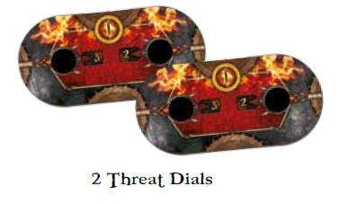

All the content of this document, images, arts, fonts and The Lord of The Rings: The Card Game are copyrighted
at © Fantasy Flight Games. The copyrightable portions of The Lord of the Rings: The Card Game and its
expansions are © 2011 - 2020 Fantasy Flight Publishing, Inc. The Lord of the Rings, and the characters, items,
events and places therein are trademarks or registered trademarks of The Saul Zaentz Company / Middle-earth
Enterprises and are used, under license, by Fantasy Flight Games. Living Card Game, LCG, LCG logo and Fantasy
Flight Supply are trademarks and/or registered trademarks of Fantasy Flight Publishing, Inc. All Rights Reserved to their
respective owners.
Visit the official Lord of the Rings Living Card Game site at fantasyflightgames.com.
This document was compiled by Mathieu MARTIN (mathieu.smartin@gmail.com). I do not make money out of this document which
is edited only for the true-hearted Lord of the Rings Living Card Game fans out there as a means to support their game experience.
Last updated for FAQ v1.9. Not that the latest reprints have shown some unlisted errata in FAQ 1.9. The known "new" errata
(labelled as FAQ 2.0 on HallofBeorn.com) is included in this document, but may not be exhaustive.
NOTES from compiler:
Less historical players could be confused by the content of this document. This is mainly due to the changes of FFG‘s main policies
when it comes to writing rules for their games.
Over the years, LOTR LCG have had two sets of rules that (mostly) do not contradict each other (and sometimes even complement
each other):
The game Core Set as released in 2011 contained the original rulebook which was soon to be complemented by a FAQ
addressing rule specificities, most common Q&A and above all, card errata.
With the release of the Two-Player Starter Set in 2018, FFG adopted their new policy of rule writing for games: a Learn to
Play book, designed to guide new players through the main concepts and steps of gameplay, and Rule Reference booklet
detailing the game structure with a full glossary. This last document renders some of the original FAQ address redundant,
even modified some of the gameplay (for instance table talk, or the order of resolution between clearing the active location
and advancing the quest deck).
However, the Rule Reference does not make the FAQ obsolete, and it still should be the reference for card errata and
common Q&A.
In the end, this document includes:
The Learn to Play ruleset,
The original Core Set rulebook, enriched with:
FAQ addresses on rules
Most commonly used keywords (e.g. Time, Indestructible, Archery X…)
New generic concepts introduced in the game (e.g. Siege and Battle questing, Side Quests, Guarded (X)…)
The Rule Reference glossary and game flowcharts
A section covering player cards Q&A and errata
The scenario specific rules, sometimes compiled if they are used in several quests of the same cycle (e.g. Saga rules,
Campaign Mode rules, Sailing, etc.), enriched with:
Easy mode rules when relevant (for those earlier scenarios that originally did not have the golden icon)
Encounter cards Q&A and errata relevant to the quest
It‘s been augmented by two guides mostly written by Chris Stanford (Seastan online):
A Guide to Action Windows (see page 128)
A guide to revealing encounter cards during the staging step (see page 132)
If you see any mistake, typo or inconsistency I did not address between the two sets of rules (and the many quest sheets),
please send me an email at mathieu.smartin@gmail.com.
- 2 -
Learn to Play
INTRODUCTION
"You have done well to come,‖ said
Elrond. ―You will hear today all that you
need to understand the purpose of the
Enemy. There is naught that you can
do, other than to resist, with hope or
without it. But you do not stand alone.
You will learn that your trouble is but
part of the trouble of all the western
world."
—from the chapter "The Council of
Elrond"
The Lord of the Rings, The Fellowship
of the Ring
Welcome to Middle-earth, a land of Hobbits, Elves, Dwarves,
Wizards, and Men. From the bright towns and fields of the
Shire, to the wilds of Mirkwood Forest and Rhovanion, and to
the powerful kingdoms of Gondor and Rohan, the various
peoples of this land struggle against the foul minions and the
ancient, evil threat of the Dark Lord, Sauron.
GAME OVERVIEW
The Lord of the Rings: The Card Game is a game of heroes,
perilous journeys, and adventure set in the lands described
COMPONENTS
in the epic fantasy masterpiece created by J.R.R. Tolkien,
The Lord of the Rings. During this game, players assume the
role of a party of heroes who are attempting to complete
dangerous quests. These quests occur during a timespan of
17 years: from when Bilbo celebrated his 111th birthday (and
Frodo celebrated his 33rd birthday) to days just prior to
Frodo‘s leaving the Shire. Instead of directly retelling the
classic stories that have previously been narrated, this game
provides players with a variety of elements—characters,
settings, enemies, events, items, artifacts, and scenarios—
that allow them to embark upon new adventures and share
new experiences with the beloved The Lord of the Rings
characters and settings during this period of Middle-earth
history.
The Lord of the Rings: The Card Game is a cooperative
game in which players work together to complete a scenario.
During each game, the players attempt to overcome the
particular encounters, enemies, and challenges of a
scenario, against which they either win or lose together. The
Lord of the Rings: The Card Game can be played solo or as
a two-player game using only the contents of the core set.
Up to four players can play the game cooperatively with a
second copy of the core set.
- 15 -

KEY CONCEPTS
This section introduces a number of foundational concepts to
keep in mind while learning and playing the game.
HEROES
Heroes are the main characters that
players control during the game.
Heroes are represented by hero
cards and players use them to
attack, defend, quest, and acquire
resources. Each player will begin the
game with one to three hero cards
faceup in his or her play area.
PLAYER DECKS
Each player has a deck that
corresponds to his or her heroes. A
player‘s deck contains allies, events, and a variety of
weapons and items. During the game, a player draws cards
from this deck and spends resources to play those cards,
each of which can aid the heroes on their adventure.
THREAT DIAL
Each player has a threat dial which represents the risk his or
her heroes have endured during the scenario. Game effects
can cause a player‘s threat to increase or decrease. When
this happens, the player adjusts his or her dial accordingly.
The number displayed on a player‘s threat dial is sometimes
referred to as that player‘s threat level.
WINNING THE GAME: COMPLETING QUESTS
The quest deck tracks the player‘s progress towards the
completion of their adventure. During the game, players
place progress tokens onto quest cards in an attempt to
advance to the next stage of the quest. If any number of
players survive and advance through all stages of the quest,
all players win the game!
LOSING THE GAME: PLAYER ELIMINATION
Middle-earth is a dangerous place, and it is possible for a
player to succumb to the danger and be eliminated from the
game. A player is eliminated from the game if that player‘s
threat dial reaches "50" or if all of that player‘s heroes are
destroyed. If all players are eliminated from the game before
completing the last stage of the quest, the players have lost
the game.
READY AND EXHAUSTED
Each card in play exists in one of two states: ready or
exhausted. A ready card indicates that the card is available
to be used. All cards enter play in their ready state. A player
cannot exhaust a card that is currently exhausted and cannot
use the card for any function that requires the card to
exhaust until the card readies. Players ready all of their
exhausted cards during the refresh phase, which is
described later.
CREATING DECKS AND SCENARIOS FOR THE
FIRST GAME
When playing The Lord of the Rings: The Card Game for the
first time, it is recommended that players use one of the core
set‘s four starter decks and the "Passage Through Mirkwood"
scenario.
To construct the decks for the first game, players gather the
cards described on page 16. The lower-right corner of each
card has a number that can be used to help identify the card.
For future games, players may continue to play with these
starter decks, or they may customize their own decks and
choose from multiple scenarios as described in the
"Deckbuilding" section on page 31.
Ready
Exhausted
- 16 -
PLAYER DECKS
The Lord of the Rings: The Card Game core set contains the
following four starter decks:
LEADERSHIP DECK
The Leadership deck is an all-purpose deck with tools for a
wide range of situations. This deck also contains a number of
cards that can be used to assist and support the other
players in the game.
Heroes: Aragorn, Théodred, Glóin
Cards: All copies of cards numbered 13-27 and one copy of
card 73.
TACTICS DECK
The Tactics deck is all about combat, and is well-suited for
both attacking and defending. The deck uses weapons and
armor to bolster its heroes so they can go toe-to-toe with the
enemies of Middle-earth.
Heroes: Gimli, Legolas, Thalin
Cards: All copies of cards numbered 28-42 and one copy of
card 73.
SPIRIT DECK
The Spirit deck focuses on its characters‘ willpower and their
ability to successfully explore locations and make progress
on their quest. It is also well-suited for resisting the various
threats of the encounter deck.
Heroes: Éowyn, Eleanor, Dúnhere
Cards: All copies of cards numbered 43-57 and one copy of
card 73.
LORE DECK
The Lore deck is good at keeping its characters alive, and
providing the player a variety of options for each situation
with powerful card draw effects. This deck rewards players
who anticipate threats and are prepared to meet those
threats when they emerge.
Heroes: Denethor, Glorfindel, Beravor
Cards: All copies of cards numbered 58-72 and one copy of
card 73.
SCENARIO AND ENCOUNTER DECK
"Passage Through Mirkwood" is the game‘s introductory
scenario. To set up this scenario, take the quest cards "Flies
and Spiders"
(119), "A Fork in the Road" (120), "A Chosen Path" (121),
and the other "A Chosen Path" (122) and arrange them as a
four-card deck as shown below.
Each scenario has a unique encounter deck as depicted by
the set icons presented on the scenario‘s quest card.
For the "Passage Through Mirkwood" scenario, gather all
encounter cards that contain the set icons listed below. This
consists of cards 74-80, and 89-100.
- 17 -
SETUP
To set up a game of The Lord of the Rings: The Card Game,
perform the following steps in order.
1. Shuffle Decks: Shuffle the encounter deck and each
player deck separately. Do not shuffle the hero cards into the
player decks, and do not shuffle the quest cards into the
encounter deck.
2. Place Heroes and Set Threat Levels: Each player places
their heroes in their own play area, adds together the threat
cost of each of their own heroes, and sets their threat dial to
that value.
3. Create Token Bank: Place the damage, progress, and
resource tokens in separate piles next to the encounter deck.
4. Determine First Player: Select a first player. That player
takes the first player token and places it in his or her play
area. If players cannot decide who should be the first player,
determine a first player randomly.
5. Draw Starting Hand: Each player draws six cards from
the top of his or her deck. If a player does not wish to keep
this starting hand, that player may shuffle the six cards back
into his or her deck and draw another set of six cards. A
player must keep the second set of six cards as a starting
hand.
6. Place Quest Cards: Place the quest cards for the
scenario near the encounter deck. The quest cards are
arranged as described in the "Scenario and Encounter Deck"
section, with the stage "1A" side on
top and each subsequent card beneath it increasing in
sequence.
7. Perform Scenario Setup Instructions: Perform the
"Setup" instructions presented on the stage "1A" quest card.
Then, flip the card to the stage "1B" side. The game is now
ready to begin.
PLAYING THE GAME
The Lord of the Rings: The Card Game is played over a
series of rounds. Each round consists of seven phases that
players resolve in the following order:
1: Resource,
2:
Planning, 3: Quest, 4: Travel, 5: Encounter, 6: Combat, and
7: Refresh.
After all seven phases have resolved, a new game round
begins, starting with the resource phase. Rounds continue to
resolve in this way until the game ends, which is described
later.
PHASE 1: RESOURCE
The resource phase represents the heroes gathering
supplies, finding allies, and obtaining information, which are
represented in the game by resource tokens and cards. The
heroes will use these resources to overcome the
machinations of the Dark Lord.
To resolve the resource phase, players perform the following
steps in order:
1. Gain Resources
2. Draw Cards
- 18 -
Each step of the resource phase is resolved by all players
simultaneously. After performing the steps of the resource
phase, proceed to the planning phase.
Step One: Gain Resources
For each hero a player has in play, that player takes one
resource token from the supply and places it in that hero‘s
resource pool. Each hero has a resource pool next to it that
contains that hero‘s resource tokens. Players spend tokens
from their heroes‘ resource pools to play cards from their
hands, which is described later.
Step Two: Draw Cards
Each player draws one card from the top of his or her deck
and adds it to his or her hand of cards. (There is no hand
limit.) A player‘s deck consists of allies, attachments, and
events that can aid the heroes during the game.
PHASE 2: PLANNING
The planning phase represents the mustering of the heroes
before the next leg of their journey—preparing them with the
items and allies they need for a successful quest. During this
phase, players can play ally and attachment cards from their
hands. Ally cards represent friends, followers, and
companions of the heroes, and attachment cards represent
weapons, armor, items, artifacts, and skills that can aid the
heroes during their adventure.
A card‘s type is indicated at the bottom of the card.
Starting with the first player and proceeding clockwise, each
player has an opportunity to play any number of ally and
attachment cards from his or her hand. To play a card, a
player must pay the card‘s cost, which is described later.
Then, the card is played and placed in that player‘s play
area. After each player has had an opportunity to play cards,
proceed to the quest phase.
Paying Costs
To pay a card‘s cost, a player
must spend a number of
resources equal to that cost,
which is presented in the upper-
left corner of the card.
When a player spends a
resource, that player takes a
resource from one of their heroes‘
resource pools and places it in the supply. A player cannot
pay for a card using a resource from any pool; he or she
must take the resources from a pool that provides a
resource match. That is, the resources must be spent from
heroes whose sphere of influence matches the sphere of
influence of the card being played. For example, a player can
only play cards that have a leadership icon by spending
resources from heroes that also have a leadership icon.
A player can spend resources from multiple heroes‘ resource
pools to pay for a single card if there is a resource match
among that card and each pool from which resources are
spent. If a card has a cost of "0," a player can play that card
without spending any resources; however, the player must
have at least one hero in play that matches that card‘s
sphere of influence.
If players are using the starter decks, they will not have to
worry about resource matching as all the cards in those
decks are from a single sphere of influence.
Placing Cards
Each card type dictates how it is played.
When a player plays an ally card, place the card in that
player‘s play area.
When a player plays an attachment card, attach it to another
card that is already in play by placing it in a position so that
the in-play card slightly overlaps the attachment.
The "Steward of Gondor" card is attached to the "Aragorn"
card.
Each attachment card describes the set of cards it can be
attached to; most are attached to hero cards, but some can
be attached to other card types.
The "Steward of Gondor" card can only be attached to hero
cards.
- 19 -
PHASE 3: QUEST
The quest phase provides the heroes with an opportunity to
make progress on their journey. During this phase, the
players can commit characters to advance their quest.
To resolve the quest phase, players perform the following
steps in order:
1. Commit Characters
2. Staging
3. Quest Resolution
Each step is described below. After the players have
performed the steps of the quest phase, proceed to the travel
phase.
Step One: Commit Characters
Starting with the first player and proceeding clockwise, each
player has an opportunity to commit any number of his or her
characters to the current quest card. Each hero and each ally
is a character.
To commit a character, a player must exhaust that character.
A player may commit multiple characters to the quest during
this step; however, if a character is already exhausted, it
cannot be committed.
Step Two: Staging
After each player has had the opportunity to commit
characters to the quest, the players reveal a number of cards
equal to the number of players from the encounter deck; this
is called staging, and it is used to populate the play area
with new locations, enemies, and objectives. This step
occurs every round, even if the players did not commit any
characters to the quest.
Reveal the encounter cards one at a time. If a card‘s text has
a "When Revealed" effect, resolve that effect by following its
instructions before revealing the next card.
When a "King Spider" is revealed, each player must exhaust
a character.
When an enemy, location, or objective card is revealed
during this step, it is placed in the staging area, which is a
play area in the center of the table, near the quest deck.
When a treachery card is revealed, resolve the text on the
card, and then place it in the encounter deck discard pile,
unless the card specifically states otherwise.
If there are no cards in the encounter deck during this phase,
shuffle the encounter deck discard pile to create a new
encounter deck.
Step Three: Quest Resolution
During this step, the players‘ efforts at advancing on their
quest are compared against the forces arrayed by the
encounter deck to determine how much progress is made.
Each character has a willpower strength that is used to
advance the quest.
Each enemy and location has a threat strength that is used
to impede a character‘s quest progress.
Aragorn has a willpower strength of "2"
The "King Spider" and the "Great Forest Web" each have a
threat strength of "2."
To resolve the quest, each character that is committed to the
quest adds its willpower strength together to create a total
willpower strength of all committed characters. Then, the
threat strength of all enemies and locations in the staging
area are added together to create a total threat strength. The
players compare the total willpower strength to the total
threat strength and determine the progress of their quest as
follows:
Successful: The total willpower is greater than the
total threat.
Unsuccessful: The total willpower is less than the
total threat.
Neither: The total willpower is equal to the total
threat.
The quest resolution determines if players gain progress
tokens or increase their threat. If the quest resolution is
neither successful nor unsuccessful, nothing happens.
Successful Quest
If the quest is successful, a number of progress tokens equal
to the difference between the total willpower strength and the
total threat strength are placed on the currently revealed
quest card.
Each quest card has number of quest points. When the
number of progress tokens on the quest card is equal to or
greater than the number of quest points, the players
complete that stage of the quest, which is described later.
Progress tokens are placed on quest cards.
- 21 -
Sometimes there is an active location, which is a location
card that is placed near the revealed quest card instead of in
the staging area. A location becomes active when a player
travels to it, which is described later.
If there is an active location, any game effect or ability that
places progress tokens on the current quest places progress
on the active location instead, up to the value of the
location‘s quest points.
If the number of progress tokens on an active location is
equal to that location‘s quest points, that location is
explored. Discard that location and place any additional
progress tokens on the current quest card as normal.
The location is explored.
Unsuccessful Quest
When a quest is unsuccessful, increase each player‘s threat
dial by an amount equal to the difference between the total
threat and the total willpower. If a player‘s threat dial reaches
"50," that player is immediately eliminated from the game,
which is described on page 28.
PHASE 4: TRAVEL
The travel phase represents the heroes‘ exploration and
navigation across the lands of Middle-earth.
The staging area frequently contains one or more location
cards. During this phase, the players can choose to travel to
one of those locations.
To travel to a location, the players choose one location in the
staging area. Place that location next to the revealed quest
card, indicating that it is the active location. There can only
be one active location at a time. If there is already an active
location, players cannot travel to a new location.
A location card‘s text may have a "Travel" effect, which
indicates an effect that players must resolve to travel to that
location.
- 22 -
When players travel to a location in the staging area, that
location becomes active.
Before traveling to the "Great Forest Web," each player must
exhaust a hero.
PHASE 5: ENCOUNTER
The encounter phase represents the confrontation and
pursuit of enemies. During this phase, each player has an
opportunity to engage an enemy in the staging area, and
then enemies potentially engage the players.
To resolve the encounter phase, players perform the
following steps in order:
1. Optional Engagement
2. Engagement Checks
After all players have performed the steps of the encounter
phase, they proceed to the combat phase. Each step is
described in the next column.
Step One: Optional Engagement
In an order of their choice, each player has
an opportunity to engage one enemy in the staging area. To
engage an enemy, a player takes an enemy card from the
staging area and places it in his or her play area, facing off
against his or her characters.
Step Two: Engagement Checks
After each player has had an opportunity to engage an
enemy, players take turns making engagement checks.
Starting with the first player and continuing clockwise, each
player makes an engagement check by comparing the value
of his or her threat dial to the engagement cost of each
enemy in the staging area.
The enemy in the staging area that has the highest
engagement cost that is equal to or lower than the value of
that player‘s threat dial engages that player. When an enemy
engages a player, its card is placed in that player‘s play
area—this is identical to when a player engages an enemy.
Note that any time an engagement occurs (either by player
option, by an engagement check, or by a card ability), the
end result is the same: the player is considered to have
engaged the enemy and the enemy is considered to have
engaged the player.
Players continue making engagement checks in clockwise
order until there are either no enemies remaining in the
staging area or until the enemies remaining in the staging
area cannot engage any of the players.
- 23 -
PHASE 6: COMBAT
The combat phase represents the battles and struggles
between the heroes of Middle-earth and the enemies who
seek to hinder or harm them during their quest. During this
phase, engaged enemies potentially gain unpredictable
tactics through shadow cards. Then, both enemies and
players have opportunities
to attack.
To resolve the combat phase, perform the following steps in
order:
Each step is described below. After performing the steps of
the combat phase, proceed to the refresh phase.
Step One: Deal Shadow Cards
Deal one card from the encounter deck to each enemy that is
currently engaged. These cards are called SHADOW
CARDS. Place each shadow card facedown next to the
enemy to which it is being dealt. Players cannot yet look at
these shadow cards.
First, deal shadow cards to the enemies engaged with the
first player, and then deal to enemies engaged with each
other player in clockwise order. When dealing cards to
enemies engaged with a player, those cards are dealt to
enemies with the higher engagement cost before they are
dealt to enemies with a lower engagement cost. If the
encounter deck is depleted of cards, any enemies that cards
were not dealt to do not receive shadow cards this round.
Shadow cards may have a "Shadow" effect presented on the
faceup side of the card that players resolve during combat,
which is described later.
If an enemy card leaves play, its shadow card discarded. At
the end of the combat phase, all shadow cards that were
dealt this round are discarded.
Step Two: Resolve Enemy Attacks
After shadow cards have been dealt to each engaged
enemy, resolve enemy attacks. Starting with the first player
and continuing clockwise, each player performs the following
steps in order for each enemy he or she is engaged with.
The player performing the steps is referred to as the active
player.
1. Deal Shadow Cards
2. Resolve Enemy Attacks
3. Resolve Player Attacks
a. Choose An Enemy: The active player chooses
one engaged enemy in his or her own play area that
has not attacked yet this round.
b. Declare Defender: The active player may
choose one of his or her ready characters as a
defender. Exhaust that character. Alternatively, a
player may declare
no defenders.
c. Resolve Shadow Effect: The active player flips
the chosen enemy‘s shadow card faceup and
resolves any shadow effects on that card. Any non-
shadow effects on the shadow card are ignored.
d. Determine Damage: If the defender‘s defense
strength is equal to or greater than the chosen
enemy‘s attack strength, the defender suffers no
damage.
Otherwise, subtract the defense strength of the defender
from the attack strength of the chosen enemy. The defender
suffers damage equal to the difference. Damage is described
in detail under "Hit Points and Damage" on page 28. If the
attack was undefended, assign the full damage from the
attack, which is equal to the attacking enemy‘s total attack
strength, to one of the heroes that the active player controls.
The hero‘s defense strength does not reduce the damage
assigned by undefended attacks.
Step Three: Resolve Player Attacks
After each enemy that is engaged with a player has
performed an attack, the players have an opportunity to use
their characters to attack the enemies. Starting with the first
player and continuing clockwise, each player may perform
the following steps in order for each enemy he or she is
engaged with. The player performing the steps is referred to
as the active player.
a. Declare Target of Attack, and Declare
Attackers: The active player chooses one enemy
he or she is engaged with and exhausts any
number of ready characters that he or she controls
to attack the chosen enemy. Multiple characters can
attack the same enemy.
b. Determine Attack Strength: The active player
adds the attack strength of each of the declared
attackers to determine the combined attack strength
for this attack.
c. Determine Damage: If the enemy‘s defense
strength is equal to or greater than the combined
attack strength of all attackers, the defender suffers
no damage. Otherwise, subtract the defense
strength of the enemy from the attack strength of
the attackers; the enemy suffers damage equal to
the difference. Damage is described under
"Hit
Points and Damage" on page 28.
The active player is permitted to declare one attack against
each enemy that player is engaged with, and may repeat the
above steps
(a-c) until all of these attacks have been
declared, or until that player is unable or does not wish to
declare further attacks this phase.
PHASE 7: REFRESH
The refresh phase represents an opportunity for the heroes
to rest, recuperate, and regroup. During the refresh phase,
perform the following steps in order:
1. Ready: Ready each exhausted card in play.
- 25 -
2. Increase Threat: Each player increases their
threat dial by one.
3. Pass First Player: The first player passes the
first player token to the next player in clockwise
order.
After performing the steps of the refresh phase, proceed to
the next game round beginning with the resource phase.
Continue to play rounds in this manner until the game
reaches a conclusion.
- 26 -
CONCLUDING THE GAME
If at least one player completes the final quest card of a
scenario, the game ends and all players win. If all players are
eliminated from the game before all quest cards have been
completed, the game ends and all players lose.
QUEST ADVANCEMENT AND WINNING THE
GAME
Players complete quests by placing progress tokens on the
quest card. When the revealed quest card contains a number
of progress tokens equal to or greater than the number of its
quest points, that quest card is completed.
When a quest card is completed, players immediately
discard the card, revealing the next quest card for that
scenario. Excess progress tokens placed on a quest card do
not carry over to the next stage of the quest. When a new
quest card is revealed, players follow the instructions
presented on the stage A side of the card, and then flip the
card to the stage B side. If players complete the final stage of
a scenario, they win the game.
PLAYER ELIMINATION AND LOSING THE
GAME
A player is eliminated from the game if that player‘s threat
dial reaches
&qout;50&qout; or if all of that player‘s heroes are
destroyed.
When a player is eliminated from the game, that player‘s
hand of cards as well as all player cards he or she controls
are discarded. Any enemies that the eliminated player was
engaged with are placed in the staging area. Enemies
returned to the staging area in this manner retain their
damage tokens and attachments. Players that are not
eliminated continue playing, revealing one fewer encounter
card during future quest phases for each player that was
eliminated.
ADDITIONAL RULES
This section contains additional rules that players need to
know to play their first game of Lord of the Rings: The Card
Game.
HIT POINTS AND DAMAGE
Characters and enemies have a number of hit points that
determine the amount of damage that character or enemy
can suffer.
For each damage a character or enemy suffers, one damage
token is placed on that character or enemy‘s card. Each
damage token on a card reduces that card‘s hit points by
one. If a character or enemy‘s hit points are ever reduced to
zero or below, that character or enemy is destroyed. When
a player‘s character is destroyed, place it in that player‘s
discard pile. When an enemy is destroyed, place it in the
encounter discard pile.
Some card effects allow a character to heal. When this
happens, damage tokens of the specified amount are
removed from that character.
CARD ABILITIES
The text on cards contains many types of card abilities.
There are five categories of card abilities found on hero and
player cards: actions, responses, keywords, constant
abilities, and forced effects.
Actions
An action is an optional ability presented on cards that
players can resolve during specific times of the game.
To resolve an action on a hero, ally, or attachment card, that
card must be in play. Generally, players are allowed to
resolve actions between phases and between the defined
steps of
each phase. Appendix I (see page 66) provides players with
a comprehensive round sequence that indicates the specific
times during which they can resolve actions.
Some action abilities are preceded by a specific game
phase, such as "Quest Action" or "Combat Action." Such an
ability indicates that a player can only resolve that action
during the specified phase.
Responses
A response is an optional ability presented on cards that can
resolve immediately after a specific event has occurred
during the game. For example, each time a player commits
the "Aragorn" hero card to a quest, that player can resolve
that card‘s response ability, spending one resource from that
hero‘s resource pool to ready that card.
- 28 -
To resolve a response present on a hero, ally, or attachment
card, that card must be in play.
Keywords
A keyword is a shorthand for a common game ability that
appears on multiple cards. Keywords are found at the top of
a card‘s text box. The rules for each of the keywords are as
follows:
Doomed X
If an encounter card that has the "Doomed" keyword is
revealed during the staging step of the quest phase or during
setup, each player must increase his or her threat by the
specified value.
Ranged
A character that has the "Ranged" keyword can attack
enemies that are engaged with other players when it attacks.
While another player is resolving player attacks, any player
can declare a character with the "Ranged" keyword that he
or she controls as an attacker, but the character must
exhaust and meet all other standard requirements necessary
to perform the attack.
Restricted
The "Restricted" keyword appears on some attachment
cards. A character can never have more than two
attachments that have the "Restricted" keyword. If a
character ever has three attachments that have the
"Restricted" keyword, immediately discard one of the
attachments.
Sentinel
A player can declare a character that has the "Sentinel"
keyword as a defender against enemy attacks made against
another player. The defending character must exhaust and
meet all other standard requirements necessary to defend
the attack.
Surge
When an encounter card that has the "Surge" keyword is
revealed during the staging step of the quest phase or during
setup, reveal one additional card from the encounter deck. If
a card has both the "Surge" keyword and a when revealed
effect, resolve the "Surge" keyword immediately after
resolving the when revealed effect.
“Victory X”
Some enemy and location cards award players victory points
when they leave play. Cards that award victory points have a
"Victory X" keyword presented in the lower-right corner of
the card‘s text box.
When a card that has the "Victory X" keyword leaves play, it
should be set aside near a player‘s threat dial. Then, that
card is used when determining the final score at the end of
the game.
"Chieftain Ufthak" awards players 4 victory points if defeated.
Forced Effects
A forced effect is a mandatory effect on cards that must
resolve during specific times of the game.
Since forced effects are mandatory, it is important for players
to be aware of the game occurrences that trigger any forced
effects that are in play. Players must resolve a forced effect
each time the triggering game occurrence specified by the
effect occurs.
"When Revealed," "Shadow," and "Travel" effects, which
were described earlier in this document, are versions of
forced effects that are resolved during common game
occurrences, such as when cards are revealed.
Constant Abilities
A constant ability is a mandatory ability that continually
affects the game as long that the card bearing the constant
ability remains in play. Unlike actions, responses, and forced
effects, constant abilities are not presented as a bold header.
Since constant abilities are always affecting the game, it is
important for players to be aware of the constant abilities in
play. For example, players must remember that if the
"Enchanted Stream" location card is in play, they cannot
draw cards from their deck.
TRAITS
Traits appear in a bold, italicized typeface at the top of a
card‘s text box. Traits have no inherent effects, but other
card effects may refer to a card‘s traits.
- 29 -
EVENT CARDS
Event cards provide players with actions and responses that
they can play directly from their hands.
To play an event card, a player spends resources equal to
the card‘s cost from his or her resource pools. Like playing
an ally or attachment card, the player must have a resource
match when paying for an event card.
After playing an event card, the player resolves the action or
response on the card immediately. Then, place the card in
that player‘s discard pile.
UNIQUE CARDS
Some cards represent specific, formally named characters,
locations, and items from the Middle-earth setting. Such
cards are known as unique cards and are identified by a 
icon that precedes the card‘s title. A player cannot play a
card that shares a title with a unique card that is already in
play. A player can, however, play a card that shares a title
with a unique card that was removed from play and is in a
discard pile.
NEUTRAL CARDS
Neutral cards are cards that do not belong to any sphere of
influence. The Lord of the Rings: The Card Game core set
contains one neutral card: "Gandalf." To play a neutral card,
a player must spend resources equal to its cost, but a
resource match is not required.
ADVANCED RULES
This section contains advanced rules that player will need to
know to construct their own decks and play the game‘s
remaining scenarios.
OBJECTIVE CARDS
Objective cards are a type of encounter card that is included
in some scenarios. Objective cards can represent scenario-
specific items, allies, or goals that heroes may need to
discover and make use of during their journey.
When an objective card is revealed during the quest phase, it
is placed in the staging like all other encounter cards. Each
objective card describes how players can claim the card and
attach it to one of their heroes.
GUARDED
The "Guarded" keyword appears on some objective cards.
After an objective that has the
revealed and placed in the staging area, reveal the next card
from the encounter deck and attach it to that objective. A
player cannot claim an objective card if there are encounter
cards attached to it.
Players resolve encounter cards that are attached to
objective cards in the following way:
"Guarded" keyword is
Enemy Card: The enemy card remains attached to
the objective until it is destroyed or leaves play as a
result of a card effect.
Location: The location remains attached to the
objective until it leaves play by being explored or as
a result of a card effect.
- 30 -
Treachery: Treachery cards cannot be attached to
objectives. If the revealed card that would be
attached to an objective card is a treachery card,
that treachery card is resolved as normal, and the
objective card will not receive an attachment.
Objective: Objective cards cannot be attached to
other objectives. If the revealed card that would be
attached to an objective card is another objective,
use the next card of the encounter deck to fulfill the
original keyword effect, and then resolve the
guarded keyword on the second card.
DECKBUILDING
Much of the depth and fun of The Lord of the Rings: The
Card Game comes when players conceive and construct
original decks, using the cards of this core set and those
found in Adventure Packs and Deluxe Expansions.
When constructing a deck, players must obey the following
rules:
A deck must contain a minimum of 50 cards.
A deck cannot include more than three copies of
any card that have the same title.
Within these guidelines, any combination of allies,
attachments, and events can be included in a deck.
Each player begins the game with one to three hero cards.
Players may confer together before playing to select the
heroes they would each like to use during that game. If more
than one player desires to use the same hero, they must
decide among themselves before the game begins, and the
other player(s) must choose different heroes.
Rule Reference
A NOTE ON SPECIAL RULES
Special rules for Easy Mode, Nightmare Mode and FAQs are
identified by colored framed:
Frequently Asked Questions and rule clarifications.
The Hobbit Saga Expansions special rules.
The Lord of the Rings Saga Expansion special rules.
Campaign Mode special rules.
Easy Mode special rules.
Nightmare Mode special rules.
Special Rules
The Saga Expansions have their own set of rules:
See page 109 for The Hobbit Saga Expansions
See page 113 for The Lord of the Rings Saga
Expansions
OVERVIEW & COMPONENTS
In each game of The Lord of the Rings: The Card Game,
players begin by choosing a scenario, and then work
together in an attempt to complete it. A scenario is
completed by successfully moving through all stages of the
quest deck. During a scenario, the encounter deck aims to
harm the heroes and to raise each player's threat level. A
player is eliminated from the game if all of his heroes are
destroyed, or if his threat level reaches 50. If all players are
eliminated from the game, the players have lost. If at least
one player survives and completes the final stage of the
quest deck, all players are victorious. Some victory or defeat
conditions can be added by a scenario.
In order to play a The Lord of the Rings: The Card Game,
you'll need the following components:
One to three hero(es) and a player deck per
player.
A scenario, consisting of quest cards in a quest
deck and encounter cards in an encounter deck.
A threat tracker:
conceptually, the
higher is your threat
to Sauron, the
sooner you'll get the
attention of his
minions. Threat trackers are used to track a player's
threat level throughout the game. Threat represents
the level of risk a player has taken on during a
scenario. If a player's threat level reaches a certain
threshold, that player is eliminated from the game.
A player's threat level can also draw out enemy
encounters and set off unfortunate circumstances
throughout the course of the game.
Damage tokens: they represent physical
damage that has been inflicted on
characters and enemies.
Progress tokens: they represent progress
that has been made on a quest.
Resource tokens: these tokens represent
the various resources at a hero's disposal.
Resource tokens are collected by a
player's heroes, and are used throughout
the game to pay for cards and card effects.
The first player token which
determines which player acts first each
phase. At the end of each round, the
first player token passes clockwise to a
new player.
0. THE GOLDEN RULE
If the game text of a card contradicts the text of this rulebook,
the text on the card takes precedence.
FAQ (1.00):
The Golden Rule applies when there is a direct contradiction
between card text and rules text. If it is possible to observe
both card text and the text of the rulebook, both are
observed.
1. DECKS AND CARD TYPES
There are three different types of decks in The Lord of the
Rings: The Card Game: the quest deck, the encounter deck,
and the player deck. There are also hero cards, which do not
belong to any deck. Each deck has its own function and its
own set of card types, as described below. In the game,
each player plays one player deck, and the players work
together to move through a fixed quest deck. A randomized
encounter deck operates in conjunction with the quest deck
in each scenario to challenge the players as they play
against the game.
1.1. THE QUEST DECK
Each scenario represents a quest that the players are
attempting to complete. At the beginning of a game, the
players must choose which scenario they wish to play
against for that game. A scenario consists of a sequential
- 31 -
deck of quest cards (referred to as "the quest deck") and a
randomized encounter deck of enemy, location, treachery,
and objective cards.
1.1.1 Quest Cards
Each quest card represents one of the various stages of the
quest the players are pursuing in a scenario. Each quest
card is a numbered step in a fixed, sequential order. These
cards have their sequential information printed on both sides,
so they can be placed in then correct order without spoiling
the contents of the latter stages in the scenario. Side A is the
back of the card, and provides story and setup information.
After reading and following any instructions on Side A,
players flip the card to Side B. Side B contains the
information necessary to move to the next stage of the quest.
The encounter deck represents the villains, hazards, places,
and circumstances that stand between the players and the
successful completion of their quest. An encounter deck
consists of enemy, location, treachery, and objective cards.
1. Card Title: The name of this card. Each sequential
stage in a scenario has its own unique name.
2. Scenario Symbol: A visual icon that identifies this
scenario, matching it to a subset of encounter
cards.
3. Sequence: This number determines the order in
which the scenario deck is stacked at the beginning
of the game.
4. Encounter Information: A group of icons that,
along with the scenario symbol, identify which
encounter cards should be shuffled into the
encounter deck when playing this scenario.
5. Scenario Title: The name of this scenario.
6. Game Text: Story, setup instruction, special effects,
or conditions that apply during this stage of the
scenario.
7. Set Information: Every card has an icon denoting
the set it belongs to, as well as a unique
identification number within the set.
8. Quest Points: The number of progress tokens that
must be placed on this card in order to proceed to
the next stage of the scenario.
1.2. THE ENCOUNTER DEC
The contents of the encounter deck are determined by the
scenario the players are attempting. The encounter deck is
shuffled at the beginning of the game.
1.2.1 Enemy Cards
Enemy cards represent the villains, creatures, monsters, and
minions that attempt to capture, destroy, or mislead the
heroes as they pursue their quest. Enemy cards engage
individual players and remain in play until they are defeated.
1.2.2 Location Cards
Location cards represent the perilous places to which the
players may travel during a scenario. They are a distant
threat to the players from the staging area, and during the
course of the quest players may opt to travel to a location to
confront its threat.
1.2.3 Treachery Cards
Treachery cards represent traps, curses, maneuvers, pitfalls,
and other surprises the players might confront during a
scenario. When a treachery card is revealed from the
encounter deck, its text effects are resolved immediately,
and it is then placed in the encounter discard pile.
- 32 -
1.2.4 Objective Cards
Depending on the scenario, objective cards can represent a
number of different elements, ranging from the goals of a
scenario, to allies who assist the players, to keys that allow
the players to advance to the next stage of a quest, to
artefacts that are necessary to defeat a difficult enemy or
overcome a particular challenge. Unless otherwise specified,
objective cards are shuffled into the encounter deck when
setting up a scenario.
1.2.5 Objective-Ally Cards
An Objective-Ally card is considered to be both an objective
and an ally. The text effects of each of these cards commits
it to the quest when it is in the staging area. This means that
these cards count their stats and assist the players when
resolving a quest. Any card effect that affects characters
committed to the quest can also affect these ally objective
cards. If an effect allows the players to take control of any of
these Objective-Ally cards, it is moved into the controlling
player's play area. Once there, they can use it the same as
any other ally. When this occurs, the card is no longer
considered to be in the staging area, and is no longer
committed to the quest
during the quest phase).
(unless its controller commits it
1.2.6 Encounter Side Quest
A side quest with an encounter card back is called an
"encounter side quest." An encounter side quest is both a
quest card and an encounter card.
1.2.7 Encounter Cards Anato
1.
Card Title: The name of this card.
2.
Engagement Cost: This number determines when
this enemy card will move from the staging area
and engage a player.
3.
Threat Strength ( ): The degree of danger this
): The degree of danger this
enemy or location represents when it threatens the
players from the staging area.
4.
Attack Strength (): The effectiveness of this
enemy when it attacks.
5.
Defense Strength (): The effectiveness of this
enemy when it defends.
6.
Quest Points: The number of progress tokens that
must be placed on this card to fully explore the
location and discard it from play or to defeat a side
quest.
7.
Hit Points: The amount of damage required to
destroy this card.
8.
Encounter Set Icon: Indicates which set of
encounter cards this card belongs to. Used in
conjunction with the "Encounter Information" icons
on side A of the quest cards of any scenario to
determine which encounter sets are used to build
the encounter deck.
9.
Traits: Text designators that, while carrying no
rules in themselves, may be affected by other cards
in play.
10.
Game Text: The special abilities unique to this
particular card when it is in play.
11.
Shadow Effect Icon: If a card has a shadow effect,
that effect is denoted by this icon, which also serves
- 33 -
to separate the shadow effect from the card's in
play effect.
12. Card Type: Indicates whether this card is an
enemy, location, treachery, or objective.
13. Set Information: Every card has an icon denoting
the set it belongs to, as well as a unique
identification number within the set.
14. Scenario Title: The name of the scenario to which
this objective card belongs.
15. Willpower Strength (): The effectiveness of this
character when it commits to a quest.
1.3. HERO CARDS & THE PLAYER DECK
1.3.1 The Player Deck
The player deck includes a combination of ally, attachment,
and event cards shuffled into a deck from which a player
draws his cards throughout the game. No more than three
copies of any ally, attachment, or event card, by title, can be
included in a player's deck.
A tournament deck must contain a minimum of 50 cards.
Within these guidelines any combination of allies,
attachments, and events can be used in the player deck.
FAQ (Q&A):
Q: Can a player have cards in his player deck from a sphere
that doesn't match the sphere of one of his heroes?
A: There is nothing in the rules that disallows this, although a
player will need to find clever card interactions to make use
of such cards.
1.3.2 Hero Cards
Hero cards represent the main characters a player controls
in an attempt to complete a scenario. Heroes start in play,
and they provide the resources that are used to pay for the
cards (allies, attachments, and events) in a player's deck.
Heroes can also commit to quests, attack, defend, and in
many cases they bring their own card abilities to the game.
Each player, chooses 1-3 hero cards and starts the game
with them in play. Hero Cards does not count toward the 50-
cards minimum of a legal tournament deck.
Sméagol / Gollum
Sméagol / Gollum is a double-sided hero / enemy card.
Each side of this card represents a different aspect of this
iconic character. Sméagol is a hero who wants the see
Sauron defeated, but Gollum is an enemy who seeks
revenge against those who stole his "precious". Sméagol
cannot be chosen as a starting hero when playing saga
expansions or the Shadows of Mirkwood cycle.
When a player selects Sméagol as a starting hero, he must
shuffle two copies of "Stinker" into the encounter deck. The
"when revealed" effect on Stinker will cause Sméagol to be
flipped to Gollum. When this happens, the Sméagol hero
leaves play and the Gollum enemy enters play engaged with
its owner in the ready position.
When Gollum is in play, he engages the first player. When
Gollum is defeated, he is flipped to Sméagol. When this
happens, Gollum leaves play and the Sméagol hero enters
play under its owner's control in the exhausted position.
1.3.3 Attachment Cards
Attachment cards represent weapons, armor, artefacts,
equipment, skills, and conditions. When played, they are
always attached to (placed slightly under) another card, and
they tend to modify or influence the activity of the card to
which they are attached. If the card to which an attachment
is attached leaves play, the attachment card is discarded.
1.3.4 Ally Cards
Ally cards represent characters (friends, followers, creatures,
and hirelings) that assist a player's heroes on the quest. Ally
cards are played from a player's hand, and they remain in
play until they are destroyed or removed from play by a card
effect.
- 34 -
1.3.5 Event Cards
Event cards represent maneuvers, actions, tactics, spells,
and other instantaneous effects at a player's disposal. An
event card is played from a player's hand, its text effects are
resolved, and the card is then placed in its owner's discard
pile.
1.3.6 Player Side Quest
A side quest with a player card back is called a "player side
quest." A player side quest is both a quest card and a player
card, and can be included in player decks.
1.3.7 The One Ring & the “M
The One Ring is a player card with its own unique card frame
and its own special rules.
The One Ring has a Setup text that instructs you to attach it
to a hero you control. This is done immediately after placing
your heroes in your play area. If two or more players have
The One Ring in their decks, the first player decides which
player will put his copy of The One Ring into play. Each other
copy is removed from the game.
The One Ring is immune to non-Master card effects. Cards
with the Master trait represent the power of the Master Ring,
and can only be used by the player who controls The One
Ring. Cards with the Master trait cannot be used when
playing the saga expansions.
1.3.8 Contracts
Contracts can represent literal contract like the one Bilbo
signed with the Dwarves before joining their quest to Erebor,
or they can represent a social contract like the bond of trust
shared by all nine members of the Fellowship of the Ring.
Contracts count as player cards, but they are never included
in a player's deck and don't count towards a player's
minimum deck size. Instead, each player may choose one
contract to put into play along with his heroes at the
beginning of the game with the "A" side faceup. If a contract
places restrictions on the content of a player's deck, those
restrictions must be met in order to choose the contract.
1.3.9 Player Cards Anatomy
1. Card Title: The name of this card. A card with
symbol next to its name is unique. (See "Unique
Cards")
2. Cost: The number of resources a player must
spend from the appropriate resource pool(s) to play
this card from his hand. Cost is not found on hero
cards.
3. Threat Cost: Found only on hero cards, this
number is the amount of threat a player must add to
his threat tracker at the beginning of any game in
which he is using this hero.
- 35 -
4.
this card belongs to. The card's template color also
indicates this. Neutral cards have a grey template
and no sphere of influence icon.
5.
Willpower Strength (): The effectiveness of this
character when it commits to a quest.
6.
Attack Strength (): The effectiveness of this
character when it attacks.
7.
Defense Strength (): The effectiveness of this
character when it defends.
8.
Hit Points: The amount of damage required to
destroy this card.
9.
Resource Icons: Found only on hero cards, these
icons indicate the sphere(s) of influence to which
resource tokens in this hero's resource pool belong.
They also indicate to which sphere(s) the hero card
itself belongs.
10.
Traits: Text designators that, while carrying no
rules in themselves, may be affected by other cards
in play.
11.
Game Text: The special abilities unique to this
particular card. Some cards have italicized flavor
text, featuring quotations from The Lord of the
Rings novels.
12.
Card Type: Indicates whether this card is a hero,
ally, attachment, or event.
13.
Set Information: Every card has an icon denoting
the set it belongs to, as well as a unique
identification number within the set.
14.
Quest Points: The number of progress tokens that
must be placed on this card to defeat a side quest.
CARD PROPERTIES
This section adds further details about encounter, quest and
player cards.
2.
2.1. SPHERES OF INFLUENCE
2.1.1 Leadership Sphere
Sphere of Influence Icon: Indicates which sphere
The sphere of Leadership emphasizes the
charismatic and inspirational influence of a hero,
and that hero's potential to lead, inspire, and
command both allies and other heroes alike.
2.1.2 Lore Sphere
The sphere of Lore emphasizes the potential of
a hero's mind. Intellect, wisdom, experience,
and specialized knowledge are all under the
domain of this sphere.
2.1.3 Spirit Sphere
The sphere of Spirit emphasizes the strength of
a hero's will. Determination, resilience, courage,
loyalty, and heart are all aspects of this sphere.
2.1.4 Tactics Sphere
The sphere of Tactics emphasizes a hero's
martial prowess, particularly as it relates to
combat and to overcoming other tactical
challenges that might confront the players
during a quest.
2.1.5 Neutral Cards
Neutral cards belong to no sphere of influence.
2.1.6 Special Spheres
The Saga Expansions introduce two special spheres:
Baggins (see page 109) and Fellowship (see page 114).
2.2. UNIQUE CARDS
Some cards in this game represent specific, formally named
characters, locations, and items from the Middle-earth
setting. These cards are referred to in the game as "unique."
They are marked with a symbol before their card title to
indicate their uniqueness. If any player has a unique card in
play, no player can play or put into play another card with the
same title. Any attempt to do so will fail to the extent that the
card attempting to enter play remains in its current location
(hand, deck, discard pile) and does not enter play. This rule
applies to all unique hero, ally, attachment, and event cards
that might enter play. Note that a unique card is eligible to
enter play if another card with the same title is in a player's
discard pile but not currently in play. Multiple copies of the
same non-unique card can be in play simultaneously.
If any player has a unique card in play, no player can play or
put into play another card with the same title. So if a player
uses a unique hero, then an ally with the same title cannot
enter play. If a unique hero leaves play for any reason,
players can play or put into play other cards that share the
same title as that hero. That hero is then ineligible to re-enter
play until there is no card with the same title in play.
2.3. UNIQUE ENCOUNTER CARDS
A unique encounter card cannot enter play if there is another
copy of that card already in play. If this is the case, the card's
effects are ignored and the encounter card is placed in the
encounter discard pile.
2.4. "CHARACTER" CARDS
Sometimes, game or rules text will refer to "character" cards.
Both heroes and allies are considered to be "characters."
Card text that says "choose a character" allows a player to
choose either a hero or an ally card as the target of the
effect.
2.4.1 FAQ (1.13): Characters and Enemies
"Character" refers to both hero and ally cards. Enemy cards
are not considered characters.
2.5. SIDE QUESTS
Side quests represent secondary adventures that the heroes
may undertake while pursuing the main goals of the quest
deck. There are two kinds of side quests: those with
encounter card backs and those with player card backs. Side
quests are never considered to be a part of the quest deck.
The top card of the quest deck is called the "main quest."
2.5.1 Encounter Side Quests
A side quest with an encounter card back is called an
"encounter side quest." An encounter side quest is both a
quest card and an encounter card. Each encounter side
quest is part of an encounter set and it is shuffled into the
encounter deck when setting up a scenario that uses its
encounter set. When an encounter side quest is revealed
from the encounter deck, it is added to the staging area.
Because side quests are quest cards as well as encounter
cards, the “when revealed” effects of side quests cannot
be canceled by player card effects. If a side quest is dealt
to an enemy as a shadow card, it functions as any other
encounter card without shadow text.
2.5.2 Player Side Quests
A side quest with a player card back is called a "player side
quest." A player side quest is both a quest card and a player
card, and can be included in player decks. A player side
quest can be played from a player‘s hand during the planning
phase by paying its cost. When a player side quest is played
or enters play, it is placed in the staging area.
- 36 -
2.5.3 Side Quests in Play
While any side quest is in the staging area, it functions like a
quest card with the following exception: when a side quest is
defeated, the players do not advance to the next stage of the
quest deck. Instead, the side quest is added the victory
display.
At the beginning of each quest phase, if there are one or
more side quests in the staging area, the first player may
choose one to be the "current quest" until the end of the
phase instead of the quest card that is currently active via
the quest deck. While a side quest is the current quest, any
progress that the players make is placed onto that side quest
and any card effects that target the "current quest" target that
side quest. Progress must still be placed on the active
location before it can be placed on a side quest. Any
progress that is made beyond the current quest‘s total quest
points is discarded; do not place progress on any other quest
card in play.
2.5.4 Multiple Quest Card in Play
While each quest card is in play, its game text is active.
FAQ (Q&A):
Q: If a side quest is the "current" quest, is the text on the
main quest still active?
A: Yes. The text on each quest card in play is active.
3. CARD EFFECTS
There are several kinds of card effects in The Lord of the
Rings: The Card Game. On the hero and player cards, card
effects fall into one of 5 categories: constant effects, actions,
responses, forced effects, and keywords.
On the cards found in the quest and encounter decks, card
effects fall into one of 9 categories: constant effects, actions,
responses, forced effects, when revealed effects, valour
effects, shadow effects, travel effects, and keywords. Each of
these card effect types is explained below.
3.1. CONSTANT EFFECTS
Constant (or passive) effects continually affect the game
state as long as the card is in play and any other specified
conditions are met. These effects have no bold trigger, as
they are always active.
FAQ (Q&A):
Q: If an attachment gives a permanent stat bonus, does that
bonus still apply when the attachment is exhausted?
A: Yes. Exhausting an attachment does not negate any
permanent bonus that attachment grants to the attached
character.
3.2. ACTIONS
Actions are denoted by a bold "Action:" trigger on a card.
Actions are always optional, and can be triggered by their
controller during any action window in the game sequence.
In order to trigger an action on a hero, ally, or attachment
card, the card on which the action is printed must be in play,
unless the action specifies that it can be triggered from an
out of play state. Event cards are actions that are played
directly from a player's hand.
Some action triggers are preceded by a specific phase of the
game. This type of trigger means that the following action
can only be triggered during the specified phase. For
example, an effect with the trigger "Quest Action:" can only
be triggered during an action window of the quest phase.
Actions without a specified phase can be triggered during
any action window throughout the round. (See the "Turn
Sequence").
3.2.1 Encounter Cards with Actions
An "Action:" on an encounter card in play can be triggered
by any player, following normal restrictions on triggering
abilities.
3.2.2 FAQ (1.10): Limitations on Actions
Actions are only limited by whether or not a player can pay
the cost of the action, or by built in limitations on the card
itself, such as "limit once per round."
3.3. RESPONSES
Responses are denoted by a bold "Response:" trigger on a
card. Responses are always optional, and can be triggered
by their controller in response to (i.e. immediately after) a
specified game occurrence. In order to trigger a response on
a hero, ally, or attachment card, the card on which the
response is printed must be in play, unless the response
specifies that it can be triggered from an out of play state.
Event cards with "Response:" effects are responses that are
played from a player's hand.
3.3.1 FAQ (1.08): Responses per Trigger
If a response or forced response is triggered, the effect can
only occur once per trigger.
3.4. FORCED AND WHEN REVEALED
EFFECTS
Forced effects are initiated by specific occurrences
throughout a game, and they occur automatically, whether
the card's controller wants them to or not. They are denoted
by a bold "Forced:" trigger on a card. These effects initiate
and resolve immediately, whenever their specified
prerequisite occurs.
When revealed effects are a special case of forced effects,
that occur automatically as soon as the encounter card is
revealed. They are denoted by a bold "When Revealed:"
trigger on a card. When revealed effects do not resolve when
the card is revealed as a shadow effect.
3.4.1 FAQ (1.09): Forced Responses
Forced responses resolve immediately when their specified
prerequisite occurs, and before any response effects that
also can be triggered off the same prerequisite.
3.4.2 FAQ (1.58): Triggering Forces
Effects
A Forced effect must be in play and active at the time its
trigger occurs in order to resolve its effect. If the resolution of
another effect causes a Forced effect to enter play or
become active after its trigger has occurred, that Forced
effect is not resolved.
3.4.3 FAQ (1.22): "When Revealed"
Effects
A card is only considered to be revealed if the card or game
effect causing the card to enter play specifically uses a form
of the word "reveal".
3.5. SHADOW EFFECTS
Some of the cards in the encounter deck have a secondary
effect that is known as a shadow effect. These effects are
offset from a card's non-shadow game effects by the graphic
shown below, and they are formatted in italic type.
Shadow effects are also denoted by a bold and italic
"Shadow:" trigger on the card. Shadow effects only resolve
when the card is dealt to an attacking enemy during combat.
- 37 -
3.6. VALOUR TRIGGER
Actions and Responses with the Valour trigger, presented
as "Valour Action" or "Valour Response," can only be
triggered by a player whose threat is 40 or higher.
If an event card has two effects, one with the Valour trigger
and one without, you may only choose one of these two
effects to trigger when you play the card. You may still only
choose the effect with the Valour trigger if your threat is 40
or higher.
3.7. TRAVEL EFFECTS
Some location cards have travel effects, which are denoted
by a bold "Travel:" trigger on a card. Travel effects are costs
or restrictions that some or all players must pay or meet in
order to travel to that location. If the players cannot fulfill the
requirement of a location's travel effect, the players cannot
travel to that location.
3.8. KEYWORDS
Keywords are used as shorthand for common game effects
that appear on a number of cards. The keywords and their
role in the game are explained below. Keywords are denoted
textually, usually at the beginning of a card's rules text. Many
keywords are specific to a scenario and one should refer to
the instructions given on the quest sheet. Below are listed
the generic keywords.
FAQ (1.01)
Surge, Doomed, and Guarded keywords should be resolved
any time the card on which they occur is revealed from the
encounter deck, including during setup.
3.8.1 Archery X
While a card with the archery keyword is in play, players
must deal damage to character cards in play equal to the
specified archery value at the beginning of each combat
phase. This damage can be dealt to characters under any
player's control, and it can be divided among the players as
they see fit. If there is disagreement as to where to assign
archery damage, the first player makes the final decision. If
multiple cards with the archery keyword are in play, the
effects are cumulative. Remember that does not block
archery damage.
3.8.2 Battle
If a quest card has the battle keyword, when characters are
committed to that quest, they count their total instead of
their total when resolving the quest. Enemies and
locations in the staging area still use their in opposition to
this quest attempt.
3.8.3 Discover X
The Discover keyword represents the heroes' search for lost
treasure, as well as the unexpected dangers they encounter
as they travel to the different locations the scenario. When a
location with the Discover keyword becomes the active
location, the first player resolves the following steps in order:
If there are less than X cards remaining in the encounter
deck when resolving the Discover keyword, shuffle the
1. Look at the top X cards of the encounter deck,
where X is the active locations Discover value.
2. Choose 1 looked at objective with the Loot keyword
and attach it to the active location as a guarded
objective.
3. Randomly select 1 looked at card with the Hazard
trait, reveal it and add it to the staging area.
4. Place any remaining looked at cards in the
encounter discard pile.
encounter discard pile into the encounter deck and continue
resolving the Discover keyword.
3.8.4 Loot
Objectives with the Loot keyword are valuable treasures that
can only be discovered by exploring the different locations in
the scenario. A Loot card can only enter play by resolving the
Discover keyword on a location.
If a card with the Loot keyword is revealed from the
encounter deck, discard it and reveal another card from the
top of the encounter deck.
3.8.5 Doomed X
If an encounter card with the doomed keyword is revealed
during the staging step of the quest phase or in setup, each
player must raise his threat level by the specified value.
3.8.6 Player Cards with Doomed X
If a player card with the Doomed X keyword is played or put
into play, each player must raise his threat level by the
specified value.
3.8.7 Encounter
Encounter is a keyword that appears on player cards with an
encounter card back, and it has the following rules:
Player cards with the encounter keyword cannot be
included in any player‘s deck because they have
encounter card backs. Instead, when setting up a
scenario, each player may set up to 3 cards with the
encounter keyword aside, out of play. These cards
do not count toward the player‘s deck minimum of
50 cards.
Player cards with the encounter keyword have a
dash (-) instead of a cost because they are never
played from a player‘s hand. Instead, player cards
with the encounter keyword are meant to be
shuffled into the encounter deck. In order to shuffle
one of the set aside player cards into the encounter
deck, a card effect must instruct a player to do so.
The "when revealed" effect on player cards with the
encounter keyword cannot be canceled.
If a player card with the encounter keyword is dealt
as a shadow card to an enemy, it is treated like an
encounter card: place it in the encounter discard
pile after resolving that enemy‘s attack.
If a player card with the encounter keyword leaves
play, it is removed from the game. Do not place it in
a player‘s discard pile or in the encounter deck
discard pile.
3.8.8 Guarded
The "Guarded" keyword appears on some objective cards.
After an objective that has the "Guarded" keyword is
revealed and placed in the staging area, reveal the next card
from the encounter deck and attach it to that objective. A
player cannot claim an objective card if there are encounter
cards attached to it.
Players resolve encounter cards that are attached to
objective cards in the following way:
Enemy: The enemy card remains attached to the
objective until it is destroyed or leaves play as a
result of a card effect.
Location: The location remains attached to the
objective until it leaves play by being explored or as
a result of a card effect.
Treachery: Treachery cards cannot be attached to
objectives. If the revealed card that would be
attached to an objective card is a treachery card,
that treachery card is resolved as normal, and the
objective card will not receive an attachment.
- 38 -
Objective: Objective cards cannot be attached to
other objectives. If the revealed card that would be
attached to an objective card is another objective,
use the next card of the encounter deck to fulfill the
original keyword effect, and then resolve the
guarded keyword on the second card.
FAQ (Q&A):
Q: Does the Guarded keyword trigger when the encounter
card it‘s on is
"revealed")?
A: No. In order for the Guarded keyword to trigger, the
encounter card it appears on must be "revealed" from the
encounter deck.
3.8.9 Guarded (X)
Guarded (X) is a new version of the guarded keyword that
appears on both objective cards and some player card
attachments. X is a card type: enemy or location. When a
card with Guarded (X) enters play, discard cards from the
encounter deck until an encounter card with the matching
type is discarded. Then, add that card to the staging area
and attach the Guarded (X) card to it as a guarded objective.
Once attached, an objective card with the Guarded
keyword works just like an objective with the original guarded
keyword. If the encounter deck is empty while resolving the
Guarded (X) keyword, shuffle the encounter discard pile into
the encounter deck and finish resolving the Guarded (X)
keyword.
A player card attachment with the Guarded (X) keyword
cannot be attached to a character until it is free of
encounters. Once free of encounters, its owner gains control
of it attaches it to an eligible card.
3.8.10 Indestructible
An enemy with the Indestructible keyword cannot be
destroyed by damage, even when it has damage on it equal
to its hit points.
3.8.11 Ranged
A character with the ranged keyword can be declared by its
controller as an attacker against enemies that are engaged
with other players. A character can declare ranged attacks
against these targets while its owner is declaring attacks, or
it can participate in attacks that are declared by other
players. In either case, the character must exhaust and meet
any other requirements necessary to make the attack.
FAQ (Q&A):
Q: What counts as a "ranged" attack?
A: A ranged attack is an attack made by a character with the
ranged keyword against an enemy engaged with another
player.
Q: Can a character with the Ranged keyword join an attack
against an enemy in the staging area?
A: No. The Ranged keyword only gives characters with that
keyword the ability to attack enemies engaged with another
player.
3.8.12 Regenerate X
An enemy with the Regenerate keyword heals damage from
itself equal to the specified amount each round. This takes
place immediately following the passing of the first player
token during the Refresh Phase, and occurs before player
actions.
3.8.13 Restricted
Some attachments have the restricted keyword. A character
can never have more than two attachments with the
restricted keyword attached. If a third restricted attachment is
"added" to the staging area
(and not
(X)
ever attached to a character, one of the restricted
attachments must immediately be moved to its owner's
discard pile.
3.8.14 Secrecy X
Secrecy lowers the cost to play the card by the specified
value, provided the threat of the player who is playing the
card is 20 or below. Secrecy only applies when the card is
played from hand, and never modifies the printed cost of the
card.
3.8.15 Sentinel
A character with the sentinel keyword can be declared by its
controller as a defender during enemy attacks that are made
against other players. A character can declare sentinel
defense after the player engaged with the enemy making the
attack declares "no defenders." The defending sentinel
character must exhaust and meet any other requirements
necessary to defend the attack.
3.8.16 Siege
If a quest card has the siege keyword, when characters are
committed to that quest, they count their total instead of
their total when resolving the quest. Enemies and
locations in the staging area still use their in opposition to
this quest attempt.
3.8.17 Surge
When an encounter card with the surge keyword is revealed
during the staging step of the quest phase or in setup, reveal
1 additional card from the deck. Resolve the surge keyword
immediately after resolving any when revealed effects on the
card.
3.8.18 Time X
Time X is a keyword that represents the urgency of the
heroes' quest. When a card with the Time X keyword is
revealed, the players put X resource tokens on that card.
These tokens are called "time counters." At the end of each
refresh phase, remove 1 time counter from each card with
the Time X keyword, if able. When the last time counter is
removed, there will be a triggered effect that resolves on that
card. Some encounter cards will also remove time counters,
making it more difficult for the players to predict when they
will run out of time.
3.8.19 Toughness X
An enemy with the toughness keyword reduces the amount
of damage it takes by X each time it is assigned any amount
of damage.
3.8.20 Victory X
Some enemy and location cards award victory points when
they are defeated. When such a card leaves play, one player
should place it near his threat dial to remind the players of
the victory points when they are scoring at the end of the
game. It is recommended that one player collects all the
victory cards the players earn during the scenario, as victory
points are applied to the score of the entire group.
3.8.21 Quest Specific Keywords
Some keywords are scenario-specific, you will find a list
below:
Ambush
78
Underworld X
81
Prowl X
82
Villagers X
82
Searches X
84
Hinder
85
- 39 -
Scour
86
Capture X
88
Safe
88
Sailing
91
Boarding X
91
Uncharted
91
Aflame X
92
Grapple
93
Exploration
93
Guarded (X)
97
Deep
99
Race
101
Spectral
103
Investigate X
104
Massive
106
Pillage X
106
Sack X
109
Venom
111
Burn X
112
Peril
115
Dire
115
Permanent
115
Hide X
117
Mire X
120
Phantom
120
Assault
121
3.9. EFFECTS ADVANCED CONCEPTS
3.9.1 FAQ (1.37): Timing of Effect
Resolution
When resolving multiple effects with a shared condition,
players should use this order of resolution: constant abilities
first, Forced effects second, Response actions third. When
determining the order of effect resolution among abilities
within those categories, players should first resolve abilities
that use the word "when" and then resolve abilities with the
word "after". A player card effect that cancels an encounter
card effect interrupts this timing structure. A cancel effect
must be triggered immediately after the encounter card effect
that it cancels.
3.9.2 FAQ (1.02): Simultaneous Effect
Timing
If two or more conflicting effects would occur simultaneously,
the first player decides the order in which the effects resolve.
3.9.3 FAQ (1.03): Conflicting Effect
Targeting
If an encounter or quest effect attempts to target a single
player or card, and there are multiple eligible targets, the first
player selects the target of the effect from among the eligible
options.
3.9.4 FAQ (1.51): Limitations on Card
Effects
When a card with a triggered effect has a limit on the number
of times that effect can be triggered (i.e. "Once per round,"
"Limit 3 times per phase," etc.), the limit is specific to that
card. However, if a card has a limit of "once per game," that
limitation is specific to the player who triggered it.
3.9.5 FAQ (1.53): Canceling an Encounter
Card Effect
When an encounter card effect is canceled, the game
proceeds as if that encounter effect was never triggered.
The rest of the encounter card is resolved as normal.
3.9.6 FAQ (1.54): Canceling an Encounter
Card
When an encounter card is canceled, the game proceeds as
if that encounter card was never revealed, except for it still
fulfills that encounter card reveal. Effects that would have
triggered in response to the canceled encounter card being
revealed cannot be triggered.
3.9.7 FAQ (1.55): Lasting Effects
Many effects last only for the duration of one action
(immediately after being triggered), but some effects last for
a set period of time, or even indefinitely. Effects that last for
longer than a single action are called lasting effects.
Multiple lasting effects may affect the same card at the same
time. The order in which the lasting effects take place is
irrelevant, since the net sum of all lasting effects is applied to
the card.
If one of a hero's, ally's, enemy's, or location's statistics (,
,
, or ) is ever lower than 0 after all effects are
applied, that statistic is rounded up to 0. Any time a new
effect is applied to a card, the net sum of all active effects
should be recalculated.
If one of a hero's, ally's, enemy's Hits Points is ever lower
than 0 after all effects are applied, the character or enemy is
immediately discarded.
There are two classes of lasting effects in the game: those
created by player cards and those created by encounter
cards. Each class is handled differently as follows:
A lasting effect created by a player card ability must be
calculated at the time that the ability is triggered, and that
effect is not recalculated if the game state changes.
A lasting effect created by an encounter card ability, is
recalculated if the game state changes.
3.9.8 "Does not stack"
Some cards have constant abilities with the text "This ability
does not stack with..." While two or more effects that do not
stack with one another are active, only one of them will affect
the game state.
3.9.9 FAQ (1.43): Modifiers of Variable
Quantities
The game state constantly checks and
(if necessary)
updates the count of any variable quantity that is being
modified. Any time a new modifier is applied, the entire
quantity is recalculated, considering all active modifiers. A
quantity cannot be reduced below zero: a card cannot have
"negative" cost, stats, keywords, etc.
3.9.10 Immune to Card Effects
Some encounter cards have the text, "Immune to card
effects." This means that the encounter card cannot be
selected as the target of any card effect, and it ignores the
effect of any card that would directly interact with it.
- 40 -
3.9.11 FAQ (1.47): Immune to Player Card
Effects
Some encounter cards have the text "Immune to player card
effects". This text means that player cannot select the
encounter card as the target of any card effect and it ignores
the effect of any player card that would directly interact with
it.
Cards with the text "Immune to player card effects" ignore
the effects of all player cards. This means that player card
effects cannot directly influence or interact with a card that is
immune to player card effects. Examples include dealing
damage to an enemy, placing progress on a location, altering
a card‘s text or statistics, moving a card, engaging an
enemy, traveling to a location, or discarding a card.
However, a card that is immune to player card effects can
still be affected by normal framework effects such as placing
progress from questing successfully, engaging an enemy
during the encounter phase, or dealing damage through an
attack made by a character.
Additionally, cards that are immune to player card effects
cannot be chosen as targets of player card effects. This
means that any player card that uses a form of the words
"target" or "choose" cannot choose a card that is immune to
player card effects as its target. This includes the "attach
to..." text of any player attachment. Player cards that do not
use the word "target" or "choose" but force the player to
choose a specific card cannot choose a card that is immune
to player card effects.
FAQ (Q&A):
Q: Can I play an attachment on an enemy or location that is
immune to player card effects?
A: No. Playing an attachment on a card is a form of
targeting, and cards with "immune to player card effects"
cannot be targeted by player cards.
Q: Are there any player cards that allow me to attack an
enemy in the staging area if it is immune to player card
effects?
A: No. None.
3.9.12 FAQ (1.14): The Word "cannot"
If a card effect uses the word "cannot", then it is an absolute:
that effect cannot be overridden by other effects.
3.9.13 FAQ (1.26): The Word "switch"
In order for a switch to occur, switched items must exist on
both sides of the switch.
3.9.14 FAQ (1.15): The Word "then"
If a card effect uses the word "then," then the preceding
effect must resolve successfully for the subsequent
dependent effect to resolve.
3.9.15 FAQ (1.16): The Phrase "put into
play"
If a card effect uses the phrase "put into play," it means that
the card enters play through a card effect instead of through
the normal process of paying resources and playing the card
from hand. "Put into play" effects are not considered to be
playing the card, and will not trigger any effects that refer to a
card being played. "Put into play" will, however, trigger any
effects that occur when a card "enters play".
3.9.16 FAQ (1.56): The Phrase “cannot
have attachment”
The text "cannot have attachments" is absolute. It is possible
to play attachments on a card with this text while its text box
is considered to be blank, but any attachments on that card
must be discarded immediately the moment its text is active
again.
3.9.17 FAQ (1.21): Search Effects
Whenever a player searches through a deck, that player
shuffles the deck after searching it unless a card effect says
otherwise. Players do not shuffle or change the order of a
discard pile after searching it.
3.9.18 FAQ (1.31): Self-Referential Effects
If a card refers to its own title in its text it should be read as
referring only to that copy of the card. A card that refers to
other copies of itself will use the language "any copy of..." or
"another copy of..." or "a card with the title..."
3.9.19 FAQ (1.36): Triggered Abilities vs.
Constant Abilities
Triggered abilities are abilities on cards that have a bold
trigger word such as Action or Response. These abilities
are only applied when they are triggered. Constant abilities
are abilities on cards that have an ongoing effect without a
bold trigger word. Because constant abilities don't have a
trigger they are always active and cannot be "triggered".
3.9.20 FAQ (1.44): "Must X or Y" vs. "Must
either X or Y"
If a card instructs a player to perform one task or perform a
second task using the structure "... must X or Y..." then the
player must attempt to perform the first task, and performs
the second task instead only if the first task cannot be
performed.
If a card instead uses the structure "... must either X or Y..."
then the player may choose which task to perform, although
one of them must be performed in full, if able.
3.9.21 FAQ (Q&A): Threat
Q: Can a player‘s threat be reduced below 0?
A: No. The threat dial does not allow negative values.
4. RESOURCES & CARD PAYMENT
4.1. FAQ (1.25): COLLECTING, ADDING,
MOVING & GAINING RESOURCES
Collecting resources refers to both collecting resources
during the resource phase and gaining resources through
other card effects. An effect that prevents a hero from
collecting resources prevents both methods of acquiring new
resources.
Adding a resource to a hero‘s pool is the act of taking a
resource from the token bank and placing it in that hero‘s
pool. Adding a resource always results in the total number of
resources controlled by the players being increased.
Moving a resource is the act of taking a resource from one
hero‘s pool and placing it in another hero‘s pool. This does
not count as ‗adding‘ a resource because it did not take a
new resource from the token bank and the total number of
resources controlled by the players did not increase.
Gaining a resource is a blanket term that includes collecting,
adding and moving. Any time the number of resources in a
- 41 -
hero‘s pool is increased, that hero has gained one or more
resources.
4.2. CARD PAYMENT
In order for a player to play a card from his hand (or to
activate certain card effects), he must pay for it by spending
resource tokens from the resource pool of a hero who has a
resource icon that matches the card's sphere of influence.
This is called a resource match. Resources that are spent to
pay for cards or card effects are taken from their hero's
resource pool and placed in the general token bank.
Cards with a cost of zero do not require a resource to be
spent in order to pay their cost, but they do require at least
one hero under that player's control to have a resource icon
that matches the card's sphere.
If a player has multiple heroes with similar resource icons, he
may use resources from multiple pools of the same sphere to
pay for a single card or effect.
4.2.1 FAQ (1.40): The Letter X
Unless specified by a card effect, or granted player choice,
the letter "X" is equal to 0.
4.2.2 Paying for Neutral Cards
Neutral cards, which belong to no sphere of influence,
require no resource match to play. This means that they can
be paid for with resources from any hero's pool. Also, when
paying for a neutral card, a player may combine resources
from heroes with different resource icons.
4.2.3 Paying for Card Abilities
Some cards have abilities that can be triggered from play,
but still require the triggering player to pay resources.
Triggering a card ability from a card already in play requires
no resource match, unless otherwise, specified by the ability.
4.2.4 Paying Costs
Many cards are written in a "pay or exhaust X to do Y"
manner. When confronted with such a construct, everything
before the word "to" is considered the cost, and everything
after the word "to" is considered an effect. Costs can only be
paid with cards or resources that a player controls. If an
effect is canceled, the cost is still considered to have been
paid.
5. CARD STATUS
5.1. CONTROL AND OWNERSHIP
A player "owns" his heroes and the cards that he has chosen
for the player deck he is playing. A player "controls" all cards
that he owns, unless another player or the encounter deck
takes control of the card through a game effect. Any time a
card leaves play, it reverts its owner's hand, deck, or discard
pile (as directed by the effect forcing the card out of play).
When a player plays an ally card, it comes into play under
his control and is placed in his play area. If another player
takes control of that ally, it is moved to the controlling
player's play area. Ally cards cannot be played under the
control of another player, they can only change control
through card effects.
When a player plays an attachment card, he has the option
of giving control of that card to another player by attaching
the card to one of that player's characters. Players always
assume control of attachments that have been played on
their characters. If control of that character changes, so does
the control of any attachments on that character.
5.1.1 FAQ (1.06): Control of Non-objective
Encounter Cards
Players do not gain control of encounter cards unless control
of the card is explicitly granted by a card effect. When an
encounter card becomes an attachment and attaches to a
character, that character's controller does not gain control of
the attachment.
5.1.2 FAQ (1.07): Control of Objective
Cards
When a player claims an objective card, he gains control of
that card unless otherwise directed by a card effect.
5.1.3 FAQ (1.17): Unclaimed Objectives
An unclaimed objective is one that is not currently claimed
and under the control of a player. An unclaimed objective
can be guarded or unguarded. A guarded objective is treated
like an attachment if guarded by an enemy or location, and
remains attached to that card until it leaves play, at which
point it will return to the staging area. Any unclaimed
objective in the staging area that is not attached to a card is
considered to be unguarded. If an objective is claimed at one
point, and then returns to the staging area, it regains the
status of unclaimed.
5.1.4 FAQ (1.23): Attachments
Any objective card that attaches to another card is treated as
an attachment in addition to its other card types.
Any non-objective card that attaches to another card loses its
original card type and gains the attachment card type.
The "Attach to..." rules text on an attachment is only a play
restriction, and is not taken into account after the card is
already attached.
5.1.5 FAQ (1.38): Control of Attachments
When a player plays an attachment on a character controlled
by another player, that character's controller gains control of
the attachment. When a player plays an attachment into the
staging area, or on an enemy or location, that player retains
control of that attachment.
5.2. READY AND EXHAUSTED
Characters and attachment cards enter the game in then
"ready" position-that is, face up on the playing surface in
front of their controller.
When a card has been "used" for some purpose, such as to
commit to a quest, to attack, to defend, or to use a character
ability that requires the card to exhaust, it is turned
90
degrees sideways and considered "exhausted."
An
exhausted card cannot exhaust again (and therefore cannot
partake in any action that requires exhaustion) until it has
been readied once more. When a player is instructed by the
game or by a card effect to ready a card, he moves that card
to its normal upright position.
5.2.1 FAQ (1.12): Exhaustion and
Attachments
Attachments and the card to which they are attached
exhaust and ready independent of one another.
5.3. IN PLAY AND OUT OF PLAY
"In play" refers to cards that have been played or put into
play (in a player's play area), to cards that are waiting in the
staging area, to the currently revealed quest card, and to
encounter cards that are engaged with that player. "Out of
play" states are "in a player's hand," "in a deck," or "in a

- 42 -
discard pile." Card effects do not interact with cards in an out
of play state unless the effect specifically refers to that state.
5.4. REMOVED FROM GAME
Players may be instructed to remove cards from the game.
When a card is removed from the game, it should be set
aside and ignored for the rest of the game. Do not place any
"removed from game" cards in the discard pile, as effects
that bring cards back from the discard pile no longer interact
with these cards.
6. AREAS OF PLAY
6.1. PLAYER'S HAND
There is no limit to the amount of cards a player can have in
his hand.
6.2. STAGING AREA
The staging area is a unique element of the game's playing
field. It represents the potential dangers the players might
face as they progress on their quest.
During the quest phase, enemy and location cards are
revealed from the encounter deck and placed in the staging
area. Cards in the staging area are imminent threats to the
players, including enemies that need to be defeated and
locations that need to be explored. While a location is in the
staging area, the players are not considered at that location;
instead it represents a distant threat. Players have the option
of traveling to a location during the travel phase. Similarly,
enemies in the staging area are not yet engaged with any of
the players. Enemies engage players when a player's threat
level is high enough to draw out that enemy. Players also
have the option to voluntarily engage enemies during the
encounter phase.
FAQ (Q&A):
Q: What is the difference between "adding" a card to the
staging area versus "placing" a card in the staging area?
A: There is no difference between "adding" a card to the
staging area versus "placing" a card in the staging area.
These words are used interchangeably and mean the same
thing in all instances.
6.2.1 FAQ (1.35): "Enters the staging
area"
Enters the staging area is a term that applies to a card
(enemy, location, objective, etc.) that is placed in the staging
area. This term applies whether the card in question has
been revealed from the encounter deck, placed in the
staging area from out of play, returned from the discard pile
or from engaged with a player, or by other means.
6.2.2 FAQ (1.39): Staging Objective Cards
When a player reveals an objective from the encounter deck,
he adds it to the staging area unless that objective instructs
the player to do something different.
6.2.3 FAQ (1.45): "Reveal" vs. "Reveal
and add"
Any time encounter cards are "revealed" from the encounter
deck, the players should follow the rules for staging as
explained on page 48 and rule (1.39) of this document.
If a card effect uses the phase "Reveal and add to the
staging area", it means the same as simply using the word
"reveal", and the above steps should still be followed (i.e.
treachery cards should still be discarded after resolving its
effects, unless otherwise indicated by the card‘s text).
6.3. DISCARD PILES
Each player has his own discard pile, and the encounter
deck also has its own discard pile. Whenever a card is
discarded, it goes to the discard pile belonging to the card's
originating deck.
6.3.1 FAQ (1.48): Discarding Cards vs
Placing Cards in the Discard Pile
When a character is destroyed, or an event card is played, it
is placed in the discard pile. This is not the same as being
"discarded." Cards are only discarded when a card effect
instructs a player to discard a card.
6.4. RUNNING OUT OF CARDS
If a player runs out of cards in his player deck, he continues
to play the game with the cards he has in play and in his
hand. He does not reshuffle his discard pile. If the encounter
deck is ever out of cards during the quest phase, the
encounter discard pile is shuffled and reset back into the
encounter deck.
6.5. FAQ (1.29): VICTORY DISPLAY
The victory display is a game area where victory points are
tracked. Cards in the victory display are considered to be out
of play, but are not considered to be a part of the encounter
discard pile. Cards in the victory display are not considered
"removed from game," and some card effects may still
interact with them.
6.5.1
“Limit 1 Copy in the Victory
Display”
Some player side quests (e.g. The Storm Comes) have the
text:
"Limit
1 copy of The Storm Comes in the victory
display."
This text prevents more than 1 copy of The Storm Comes
from entering the victory display. If the players defeat The
Storm Comes, and there is already a copy of that side quest
in the victory display, then the copy that was just defeated is
placed in its owner‘s discard pile.
7. PLAYERS
7.1. FIRST PLAYER
The players determine a first player based on a majority
group decision during step 4 of setting up the game. At the
end of each round, the first player passes the first player
token to the next player clockwise on his left. That player
becomes the new first player.
7.1.1 FAQ (1.30): "First Player"
Elimination
If the player with the first player token is eliminated, the first
player token immediately passes clockwise to the next
eligible player.
7.2. LAST PLAYER
Some cards refer to the "last player." The last player is
considered to be the player sitting directly to the right of the
first player. If there is only one player playing, then that
player is considered to be both the first and last player.
7.3. NEXT PLAYER
The next player is the player sitting directly to the left of the
player referenced by the card effect. If there are no other
players in the game, there is no next player.
- 43 -
7.3.1 FAQ (1.46): "Next" Player
If there is only one player in the game, there is no next
player. Card effects that target the "next" player will not
trigger if there is only one player in the game.
8. DIFFICULTY LEVELS
8.1. STANDARD MODE
Standard Mode is the default difficulty for a given scenario.
Players who wish can continue to play their games in
Standard Mode, following all of a scenario‘s normal setup
instructions.
8.2. EASY MODE
Easy Mode is an alternative mode of play, ideal for new
players and for players who prefer the narrative and
cooperative aspects of the game with less challenge.
To play a scenario in Easy Mode, simply take the following
steps during setup of any scenario:
During step 2 of Setup, "Place Heroes and Set Initial Threat
Levels", add one resource to each hero‘s resource pool.
When building the encounter deck, remove any card with the
"difficulty" indicator around its encounter set icon
(a gold
border) from the current scenario‘s
encounter deck.
In Standard Mode, you include all cards
marked with the appropriate encounter set
icons when you build your encounter deck.
In Easy Mode, when you build the encounter
deck, you remove all encounter cards
designated as "difficult." These encounter
cards are marked with the "difficulty"
indicator
(a gold border) around their
encounter set icons.
Some older scenarios (before the original The Black Riders
Saga Expansion release, including those in early printings of
the core game) do not have the above mentioned "difficulty"
indicator icon on relevant cards in their encounter decks.
You will find the appropriate list of cards to take off the
encounter deck in the rule sheet dedicated to each scenario.
8.3. NIGHTMARE MODE
The twenty-two card Nightmare Decks increase the
challenge levels of the scenarios they modify, and Nightmare
Mode appeals most to those skilled veterans who hunt for
new challenges, deadlier enemies, and taller mountains to
scale.
9. OTHER GAME MODES
9.1. BASIC GAME
Newer players or players who want a more basic experience
can play and enjoy the game by not dealing shadow cards
during the combat phase. This eliminates an element of
surprise that could make the game too challenging for a
beginner. Once players are comfortable with this experience,
they can then add the shadow effects to make combat less
predictable and more exciting.
9.2. EXPERT GAME
For an expert level challenge, players can attempt to defeat
all 3 scenarios of the Core Setusing the same combination of
players, decks, and heroes. The score from each scenario
can then be added together to get a single score measuring
overall success on the entire campaign. For a "nightmare"
level challenge, do not reset threat, hit points, or player
decks at the beginning of each scenario. When playing such
a campaign, the players should start with the
―Passage
through Mirkwood‖ scenario, follow with the ―Journey Down
the Anduin‖ scenario, and finish with the ―Escape from Dol
Guldur‖ scenario.
FAQ clarification on Expert Game
When playing the "expert game" variant each player‘s threat,
wounds, and discard pile do not reset when setting up a new
scenario.
To reset the other game elements at the beginning of a new
"expert game" scenario, perform the following steps in order:
1) All non-hero cards in play and in hand are shuffled into
their owner‘s decks. All encounter cards are returned to their
encounter sets so they are available for the next scenario, if
needed. This includes cards in players‘ victory display.
2) All unspent resources are discarded from the heroes‘
resource pools.
3) Each player draws a new starting hand per the regular
setup rules of the game. A single mulligan may be taken by
each player at this time.
4) A player cannot start a scenario with a threat level that is
lower than the combined threat cost of his heroes. If a
player‘s threat is lower than the starting threat cost of his
heroes, he must increase his threat to that value.
5) Follow all setup instructions for the new scenario. Each
scenario should be scored separately, and then all the
scores added together at the end of the variant.
9.3. RACE AGAINST THE SHADOW
TOURNAMENT RULES
In a Race Against the Shadow tournament, teams race one
another and the clock to win a scenario. Two teams play
simultaneously, switching off at set points in the round, and
the team that finishes the scenario first within the allotted
time wins the match.
9.3.1 Supplies
Each table will need a two-player game clock with pause
functionality, for example, a chess clock. There are several
free clock apps that would also be appropriate.
The Tournament Organizer (TO) may choose any set of
scenarios, but due to their difficulty, Escape from Dol Guldur,
The Battle of Laketown, The Massing at Osgiliath and
Nightmare Decks are not recommended. The TO will
advertise the selected pool of scenarios in advance of the
event. Players are expected to provide their own quest and
encounter cards.
9.3.2 Deckbuilding
Each player brings a legal The Lord of the Rings: The Card
Game deck to the event. Deck-building rules are on page 44
of this rulebook. Legal decks contain a minimum of 50 cards
and a maximum of 3 heroes. Players must select their
heroes according to one of the following two formats.
In the limited format, a player uses these same heroes each
match. Limited format events place high emphasis on
building a tight but balanced deck that can handle any
challenge.
In the extended format, at the beginning of each match each
player may select his 3 heroes from a sideboard consisting
of all heroes. Extended format events are slightly more
casual, and allow players a chance to better adapt to the
various scenarios with their selection of heroes.
Tournament Organizers may choose to run their events as
either limited or extended.
- 44 -
9.3.3 Match Format
Each match, each team will be paired against one other
team. Each team will provide its own copy of the announced
scenario, and their opponents may check the encounter deck
for completeness. Randomly determine which team goes
first.
Each team will begin with 45 minutes on the clock for a
match length of
90 minutes. At the TO‘s discretion,
depending on the general amount of time it takes to
complete a scenario, this number can be adjusted up to 60
minutes or down to 30 minutes. Any adjustment to the time
controls should be announced when pairings are posted.
In a Race Against the Shadow match, each round is broken
into three phase groups. Teams alternate play through these
phase groups, playing their cards and advancing through
their quests, then observing their opponents‘ phase groups.
The phase groups are:
1. Resource, Planning
2. Quest, Travel
3. Encounter, Combat, Refresh
The first team will begin by playing their Resource and
Planning phases. Then they will start the other team‘s clock,
and the second team will play its Resource and Planning
phases. This process continues through the other two phase
groups until the second team finishes its Refresh phase and
the first team starts a new round.
Example round: Team
1 plays first. Team
1‘s players
complete their Resource and Planning phases, then hit the
clock. Team 2 then plays its Resource and Planning phases
while Team 1 observes. After Team 2 hits the clock, Team 1
plays its Quest and Travel phases and hits the clock again.
Team 2 then plays its Quest and Travel phases and hits the
1 then plays its Encounter, Combat, and
clock. Team
Refresh phases and hits the clock. Team
2 plays its
Encounter, Combat, and Refresh phases, and the round is
over. When Team 2 hits the clock again, Team 1 will begin
the next round with its Resource and Planning phases.
When they are not on the clock, players on one team should
observe their opponents‘ turns to ensure that all rules and
encounter cards are followed correctly. Additionally, players
may discuss the actions of their next turn during their
opponents‘ turn, so long as they do not distract their
opponents in the process. If a player has a question or rules
dispute, he pauses the clock while he interrupts the other
team. When the issue has been resolved, the active team
restarts the clock, and play continues.
9.3.4 Match Scoring
The team that finishes the scenario without the other team
finishing in the same Phase Group is awarded a Match Win
and 5 points.
If the team that played first completes the scenario first, the
other team has their next phase group to attempt to complete
the scenario. If both teams complete the scenario in the
same phase group, the team with the lower score wins.
If the scores are also the same, the match is a Draw and
each team is awarded 2 points.
If both teams are eliminated in the same round, or if neither
team completes the scenario, the match is a Modified Loss
and each team is awarded 1 point.
If a single team is eliminated, the other team is awarded a
Match Win and 5 points. If a team exhausts its allotted time,
it is eliminated and the opposing team is awarded a Match
Win and 5 points.
9.3.5 Tournament Format
Standard Swiss Pairings are used. Random pairings are
allowed for the first match. For future pairings, pair teams
within the same score group as per Swiss style pairings. As
teams are paired, the Tournament Organizer will announce
the next scenario to be used.
Tournament organizers should always pair teams within
score groups. Rather than pairing randomly, sort the teams
in each score group by team number, then pair the top
number to the bottom, the second to the second to last and
so on. This allows for the subtle adjustment of teams if one
team has already played another and has the same effect as
using brackets so that the top 2 teams do not meet until the
last match. The "odd" team of a score group will be paired
down to the next score group, playing the highest ranked
team of that score group.
If there is an odd number of teams in the tournament, the
lowest-ranked team receives a bye, counting as a Match
Win. When there is more than one lowest-ranked team, the
lowest-ranked team with the lowest team number receives a
bye.
The team with the most points at the end of the Swiss rounds
is the tournament champion.
9.4. CUSTOM SCENARIO KITS
Custom Scenario Kits (see rules on page 107) include both
competitive and cooperative game modes.
10. DECKBUILDING & CUSTOMIZATION
A tournament deck must contain a minimum of 50 cards.
Additionally, no more than three copies of any card, by title,
can be included in a player‘s deck. Within these guidelines
any combination of allies, attachments, and events can be
used in the player deck.
Each player also starts the game with 1-3 heroes. Players
may confer together before each game to select the heroes
they would each like to use during that game. If more than
one player desires to use the same hero, they must decide
among themselves before the game begins, and the other
player(s) must choose different heroes. In such situations, if
the players cannot decide who will control a certain hero, a
random method should be used to determine control of that
hero.
When building a deck, it is important for a player to consider
how he intends to pay for the cards he is including in his
deck. It may be tempting to use the most powerful trio of
heroes available, but is it worth starting the game with the
high threat level those heroes would bring? Similarly, a deck
full of high cost cards and effects might look powerful on
paper, but the time it takes to build up the resources to play
those cards could become rather problematic as the enemies
mount their assault. A player should also make sure that all
the cards in his deck belong to a sphere that matches at
least one of his heroes‘ resource icons, lest he find himself
with a dead card he cannot hope to play. Each sphere of
influence has a distinct flavor, which can be used to a
player‘s advantage when building a deck around that sphere.
For instance, a deck could be built around the sphere of
tactics to support its heroes with an impressive array of
armor and weaponry, and then take the fight directly to the
enemies that emerge from the encounter deck. As the card
pool grows with Adventure Pack expansions, each of the four
basic starter decks in this core set can be developed into
fully playable tournament decks.
It is also possible to focus on multiple spheres when building
a deck. A deck built around both the sphere of spirit and
around the sphere of lore could focus on self-preservation,
with numerous effects that heal hit points and reduce threat.
The trick to building around multiple spheres is resource
management; having the right type of resource available at
the right time becomes more difficult when a deck is built
around two or three different spheres.
- 45 -
Another useful approach when building decks is to follow the
cohesion that can be discovered by building around a trait.
For instance, if a player wants to run a deck built around
three different spheres, it might make sense to use Dwarf
cards from all three spheres to take advantage of Dwarf
synergies and card interactions.
- 46 -
Setting the Game
Before playing The Lord of the Rings: The Card Game,
follow these steps in order.
1. SHUFFLE DECKS
As with a deck of playing cards, shuffle all player decks
separately until they are randomized. Do not shuffle the hero
cards into the player decks.
Build the encounter deck from the encounter sets indicated
on the quest cards.
Follow the instructions on the "Setup" face of the Nightmare
Mode card. Remove all indicated cards and shuffle the
Nightmare Deck in the encounter deck.
Don't forget to remove any card with the "difficulty" indicator
around its encounter set icon (a gold border) from the current
scenario's encounter deck. Some older scenarios (including
those in early printings of the core game) do not have the
above mentioned "difficulty" indicator icon on relevant cards
in their encounter decks.
Shuffle the encounter deck. Do not shuffle the quest cards
into the encounter deck.
2. PLACE HEROES AND SET INITIAL THREAT
LEVELS
Each player places his heroes in front of him, adds up the
threat cost of the heroes he controls, and sets his threat
tracker at the same value. This value is that player's starting
threat level for the game.
Each player may choose one contract to put into play along
with his heroes with the "A" side faceup.
If a player card with Setup instructions is in a player‘s deck
at the beginning of a game, that player searches his deck for
that card and follows its instructions.
If a Hero with Setup instructions is in play at the beginning of
a game, that player follows its instructions.
The players must record the names of their heroes in the
Campaign Log at the beginning of the first scenario. If a
player changed heroes between two scenarios or if one of
his previous heroes has been added to the Fallen Heroes list
and been replaced by another hero, the player receives a
permanent +1 starting threat penalty for each hero change.
Follow any Setup instruction on Boons & Burdens from the
Campaign Pool. Permanent Boons or Burdens must be
attached to the heroes who earned them, according to what
was recorded in the Campaign Log. If a player card with
Setup instructions is in a player's deck at the beginning of a
game, that player searches his deck for that card and follows
its instructions before drawing his first hand. Similarly, if an
encounter card with Setup is in the encounter deck at the
beginning of a game, search the encounter deck for that card
and follow its instructions before resolving the Setup
instructions on the quest.
When setting up any scenario in The Black Riders, The Road
Darkens or The Land of Shadow Saga Expansions, the first
player must take control of a hero from the Fellowship
sphere with the Ring-bearer trait at the beginning of each
game and attach The One Ring to that hero.
While attached to a hero, The One Ring has the text:
"Attached hero does not count against the hero limit."
Therefore, it is possible for the first player to begin the game
with up to 4 heroes under his control if one of those heroes is
a Ring-bearer with The One Ring attached.
The One Ring also has the text: "If The One Ring leaves
play, the players lose the game." Just like in the books, the
players will need to carefully guard the Ring-bearer because
if the attached hero leaves play, then The One Ring is also
discarded and the players lose the game.
When setting up any scenario in The Treason of Saruman
Saga Expansions, the first player must take control of
Aragorn from the Fellowship sphere at the beginning of each
game.
When playing any scenario in The Hobbit Saga Expansions,
the first player must take control of The Hobbit Saga
Expansions.
Add one resource to each hero's resource pool.
3. SETUP TOKEN BANK
Place the damage tokens, progress tokens, and resource
tokens in a pile next to the encounter deck. All players take
tokens from this bank as needed throughout the game.
4. DETERMINE FIRST PLAYER
The players determine a first player based on a majority
group decision. If this proves impossible, determine a first
player at random. Once determined, the first player takes the
first player token and places it in front of him as reference.
5. DRAW SETUP HAND
Each player draws 6 cards from the top of his player deck. If
a player does not wish to keep his starting hand, he may
take a single mulligan, by shuffling these 6 cards back into
his deck and drawing 6 new cards. A player who takes a
mulligan must keep his second hand.
6. SET QUEST CARDS
Arrange the quest cards in sequential order, based off the
numbers on the back of each card. Stage 1A should be on
top, with the numbers increasing in sequence moving down
the stack. Place the quest deck near the encounter deck, in
the center of the play area.
7. FOLLOW SCENARIO SETUP INSTRUCTION
The back of the first quest card sometimes provides setup
instructions for a scenario. Follow these instructions before
flipping the quest card.
Flip the Nightmare Mode card from the "Setup" face to the
"Nightmare Mode" face and follow any additional instruction.
Place the Campaign Card next to the quest card and follow
any additional instruction.
FAQ (1.01):
Surge, Doomed, and Guarded keywords should be resolved
any time the card on which they occur is revealed from the
encounter deck, including during setup.
FAQ (1.19):
"When Revealed" effects are resolved if the cards are
revealed during setup. A player can trigger responses during
setup, following the normal game rules. Players cannot take
Actions during setup. "When Revealed" effects that last "until
the end of the phase" will last until the end of the first
resource phase. Effects that last "until the end of the round",
will last until the end of the first round.
Players then begin the game starting with the first game
round.
- 47 -
Round Sequence
The Lord of the Rings: The Card Game is played over a
series of rounds. Each round is divided into 7 phases. Some
phases are played simultaneously by all players, while in
other phases the players act separately, with the first player
acting first and play proceeding clockwise around the table.
The 7 phases are, in order:
Special Rules
1. Resource
2. Planning
3. Quest
4. Travel
5. Encounter
6. Combat
7. Refresh
Once all 7 phases are complete, the round is over, and play
proceeds to the resource phase of the next round.
Frequently Asked Questions and rule clarifications.
The Hobbit Saga Expansions special rules.
The Lord of the Rings Saga Expansion special rules
Campaign Mode special rules.
Easy Mode special rules.
Nightmare Mode special rules.
PHASE 1: RESOURCE
Each player simultaneously adds 1 resource token to each of
his heroes' resource pools. A resource pool is a collection of
resource tokens stored near a hero card. These tokens
belong to that hero's pool, and can be used to pay for cards
that belong to that hero's sphere of influence. Each hero has
1 resource pool.
After collecting resources, each player draws 1 card from his
player deck and adds it to his hand.
When a player is instructed to draw one or more cards, he
always draws those cards from the top of his own player
deck. If a player has no cards remaining in his player deck,
he does not draw.
PHASE 2: PLANNING
This is the only phase in which a player can play ally and
attachment cards from his hand. The first player plays any
and all ally and attachment cards he wishes to play first. The
opportunity to play cards then proceeds clockwise around
the table.
If a hero is exhausted, resources may still be spent from that
hero's resource pool.
After a player plays an ally or attachment card from his hand,
he places it faceup and ready in his play area. Attachment
cards should be placed partially overlapping, either above or
below, the card to which they are attached.
PHASE 3: QUEST
In the quest phase, the players attempt to make progress on
the current stage of their quest. This phase is broken into
three steps: 1) commit characters, 2) staging, and 3) quest
resolution. Players have the opportunity to take actions and
play event cards at the beginning and ending of each step.
Step 1: Commit Characters
Each player may commit characters to the current quest
card. Characters are exhausted when they commit to a
quest. Players commit characters to the quest as a team,
starting with the first player, and then proceeding clockwise
around the table. Each player may commit as many of his
characters to the quest as he would like.
FAQ (Q&A):
Q: Does a player commit his characters to a quest at once,
or one character at a time? When can a player trigger
responses to committing his characters to a quest?
A: A player commits all characters he wishes to commit to a
quest at once. Responses to the characters committing
(such as those on Aragorn and Théodred) can then be
triggered in the order of that player's choice. After a player
has committed his characters (and triggered any responses
to those characters committing), the next player has the
opportunity to commit his characters to the quest.
Step 2: Staging
After each player has had the opportunity to commit
characters to the quest, the encounter deck reveals one
card per player. This is known in the game as staging.
These encounter cards are revealed one at a time, with any
"when revealed" effects being resolved before the next card
is revealed. Enemy and location cards revealed in this
manner are placed in the staging area, treachery cards are
resolved and (unless otherwise indicated by the card text)
placed in the discard pile. If the encounter deck is ever
empty during the quest phase, the encounter discard pile is
shuffled and reset back into the encounter deck.
FAQ (Q&A):
Q: When I reveal the last card of the encounter deck, do I
immediately reset the quest deck before resolving the
staging of the revealed card?
A: No. Resolve the staging of the revealed card, including
any ‗When Revealed‘ effects, before resetting the quest
deck, if able. If you are unable to completely resolve the
staging of the card because it instructs you to interact with
the encounter deck in some manner, then reset the quest
deck and finish resolving the effect
Q: If a player is eliminated during the staging step of the
quest phase, before all encounter cards are revealed, does
the elimination reduce the number of cards that should be
revealed for staging?
A: The base number of cards to be revealed is determined at
the beginning of the staging step, and does not change if a
player is eliminated during staging.
Step 3: Resolution
Finally, the players compare the combined willpower strength
() of all committed characters against the combined threat
strength () of all cards in the staging area.
FAQ (Q&A):
Q: If the players do not commit any characters to a quest,
does the staging area still count its threat against them?
A: Yes, the threat in the staging area still counts against the
players, who have a combined committed willpower of 0.
If the is higher, the players have successfully quested,
and they make progress on the quest. A number of progress
tokens equal to the amount by which their overcame the
- 48 -
are placed on the current quest card. Note that if there is
an active location (see page 49), progress tokens are placed
on that location until it is explored, and the remainder are
then placed on the current quest.
If the is higher, the players have unsuccessfully quested,
and they are driven back by the encounter deck. Each player
must raise his threat dial by the amount by which the was
higher than the combined of all committed characters.
If the combined committed score is equal to the
combined score in the staging area: no progress tokens
are placed, and the players do not increase their threat dials.
Characters committed to a quest are considered committed
to that quest through the end of the quest phase, unless
removed from the quest by a card effect. They do remain
exhausted once this step is complete.
Quest Advancement
Players immediately advance to the next stage of a quest as
soon as they place a number of progress tokens equal to or
greater than the number of quest points the current quest
card has. Additional progress tokens earned against the
quest do not carry over to the next stage. All progress tokens
on the quest are returned to the token bank when players
advance to the next stage. Players follow any instructions on
the newly revealed quest card as it is revealed.
The game state of other cards does not change; cards in the
staging area remain in the staging area, cards engaged with
players remain engaged, exhausted characters remain
exhausted, damage tokens and resources remain as they
are placed, and the round sequence is not interrupted.
Quest Phase Advanced Concepts
FAQ (Q&A):
Q: If players have placed progress tokens on a quest equal
to its quest points, but a game effect prevents them from
advancing, can they continue to place progress tokens on
the quest?
A: Yes. There is no upper limit to how many progress tokens
may be placed on a quest.
FAQ (1.05): Removing Progress Tokens from Quests
When a card effect removes progress tokens from a quest or
quest card, the effect applies specifically to the quest card,
and never to the active location.
FAQ (1.20): Engaged Enemies
During the quest phase, engaged enemies do not count their
threat for the staging area.
An enemy remains engaged with a player until it is defeated
or until a card effect returns it to the staging area, engages it
to another player, or removes it from play.
FAQ (1.24): Questing Successfully
Questing successfully and the physical placement of
progress tokens are two separate game occurrences that
happen in sequence during the Quest Resolution step. As
soon as the players determine that the total committed
Willpower is greater than the total Threat in the staging area,
they are considered to have quested successfully. Any
Forced or constant effects initiated by questing successfully
resolve before physically placing progress tokens.
FAQ (Q&A):
Q: If there is an active location with a Response effect that
triggers when it is explored and the players make enough
progress to explore the location and advance to the next
stage, when do the players resolve the location‘s Response
effect?
A: The players should advance to the next stage immediately
and resolve any ‗when revealed‘ effects on the next stage,
then resolve the Response effect on the active location.
PHASE 4: TRAVEL
During the travel phase, the players may travel as a group to
any one location in the staging area by moving it from the
staging area and placing it alongside the current quest card,
causing it to become the active location. The players can
only travel to one location at a time. The first player makes
the final decision on whether and where to travel.
While in the staging area, location cards add to the
encounter deck's . Once the players have travelled to a
location, that location no longer contributes its , as the
players are considered to have travelled to the location and
are confronting its threat. Instead, an active location acts as
a buffer for the currently revealed quest card. Any progress
tokens that would be placed on a quest card are instead
placed on the active location. If a location ever has as many
progress tokens as it has quest points, that location is
considered explored and is discarded from play.
Players cannot travel to a new location if another location
card is active; the players must explore the active location
before traveling elsewhere. Some locations have a travel
effect, which is an additional cost that must be paid when the
players travel there.
Travel Phase Advanced Concepts
FAQ (1.18): Explored Locations Leaving Play
A location card is immediately discarded from play any time it
has as many progress tokens as it has quest points, whether
it is active or not.
FAQ (1.27): Bypass the active location
The only time an active location does not act as a buffer for
progress to be placed on a quest is when card text
specifically instructs the players to "bypass" the active
location.
FAQ (1.34): Two active locations
If a card effect causes two locations to be active at the same
time, they are both considered to be the active location.
However, when a card effect targets "the active location," it
does not target both active locations at the same time. The
first player must choose which of the active locations the
effect will target. Both active locations serve as buffers for
the quest stage and when placing progress on the active
location, the players may divide that progress among both
active locations however they choose.
PHASE 5: ENGAGEMENT
The encounter phase consists of two steps: player
engagement, and engagement checks.
Step 1: Player Engagement
First, each player has the option to engage one enemy in the
staging area. This is done by moving the enemy from the
staging area and placing it in front of the engaging player.
Each player has one chance to optionally engage one enemy
during this step, and an enemy's engagement cost has no
bearing on this procedure.
FAQ (Q&A):
Q: In what order is players' optional engagement handled?
A: The first player has the first opportunity to optionally
engage an enemy, or pass. After that, each player, moving
clockwise, has the option to engage one enemy. Once each
player has had this opportunity, this step is complete.
- 49 -
Step 2: Engagement Checks
Second, the players must make a series of engagement
checks, to see if any of the enemies remaining in the staging
area engage them. The first player compares his threat level
against the engagement cost of each of the enemy cards in
the staging area. The enemy with the highest engagement
cost that is equal to or lower than this player's threat level
engages this player, and moves from the staging area to the
space in front of him. This is called making an engagement
check. After the first player makes an engagement check,
the player to his left makes his own engagement check. This
player compares his threat level against the engagement
cost of each of the remaining enemy cards in the staging
area, and engages the enemy with the highest engagement
cost that is equal to or lower than his own threat level.
This process continues through all the players, proceeding
clockwise around the table. Once all players have made an
engagement check, the first player makes a second
engagement check. Players continue making engagement
checks in this manner until there are no enemies remaining
in the staging area that can engage any of the players.
Whether an enemy is engaged through an engagement
check, through a card effect, or through a player's choice, the
end result is the same, with the enemy and the player
engaging one another. In all cases, the player is considered
to have engaged the enemy and the enemy is considered to
have engaged the player. Note that during this phase
enemies do not attack players, they merely engage players.
Enemies attack the players with whom they are engaged
during the combat phase.
Engagement Phase Advanced Concepts
FAQ (1.49): Engaging Enemies vs Being Engaged
When a player engages an enemy, that enemy has also
engaged him, and when an enemy engages a player, that
player has also engaged that enemy. There is no difference
between engaging an enemy and being engaged by an
enemy. Effects that trigger "after an enemy engages you" will
trigger at the same time as effects that trigger ―after you
engage an enemy.‖
FAQ (1.50):
“Considered to be engaged” vs actual
engagement
An enemy that does not leave the staging area but is
considered to be engaged with a player does not actually
engage that player, nor does that player engage it. In order
for a player to engage an enemy, the enemy card must
physically enter his play area.
FAQ (Q&A):
Q: If an enemy is put into play directly engaged with me, has
that enemy "engaged" me for the purposes Forced effects or
Responses that trigger from engaging an enemy?
A: Yes. An enemy that enters play directly engaged with a
player has engaged that player.
PHASE 6: COMBAT
In the combat phase, enemies attack first. All enemies that
are engaged with the players attack each round, and the
players resolve those attacks one at a time. At the beginning
of the combat phase, the players deal 1 shadow card to each
engaged enemy. Deal the top card of the encounter deck,
facedown, to each engaged enemy. When dealing cards to a
single player's enemies, always deal to the enemy with the
highest engagement cost first. Cards should first be dealt to
the enemies attacking the first player, and then proceed
around the board until all enemies have 1 card.
If the encounter deck runs out of cards, any enemies that
have not been dealt shadow cards are not dealt shadow
cards this round. An empty encounter deck only resets
during the quest phase.
Step 1: Resolving Enemy Attacks
When resolving enemy attacks, the players follow these 4
steps, in order. Players may play event cards and take
actions at the end of each step.
1. Choose an enemy. The first player chooses which
attack (among the enemies to which he is engaged)
to resolve first.
2. Declare defender. A character must exhaust to be
declared as a defender. Only one character can be
declared as a defender against each attacking
enemy. A player also has the option to let an attack
go undefended, and declare no defenders for that
attack. Unless a card effect specifies otherwise,
players can only declare defenders against enemies
with whom they are engaged.
3. Resolve shadow effect. The active player flips that
enemy's shadow card faceup and resolves any
shadow effect that card might have.
4. Determine combat damage. This is done by
subtracting the defense strength() of the
defending character from the attack strength () of
the attacking enemy. The remaining value is the
amount of damage that must immediately be dealt
to the defending character, possibly destroying that
(see "Hit Points and Damage"). If a
character
character is destroyed by an attack, additional
damage is not assigned to another character. If the
is equal to or higher than the , no damage is
dealt.
If an attack is undefended, all damage from the attack must
be assigned to a single hero controlled by the active player.
Allies cannot take damage from undefended attacks. If a
defending character leaves play or is removed from combat
before damage is assigned, the attack is considered
undefended. A character's does not absorb damage from
undefended attacks or from card effects.
FAQ (1.52): “The defending player”
When an enemy makes an attack against a player, or a
character controlled by a player, that player is ―the defending
player‖ regardless of whose character is declared as a
defender. Card effects, including shadow card effects, that
target "the defending player‖ or ―you" still target the player
who the enemy is attacking even if another player declares
one of his characters as a defender for that attack.
FAQ (Q&A):
Q: If a player does not declare any defenders against an
attack, is he still considered the defending player?
A: Yes, the player an enemy is attacking is considered to be
the defending player. Whether or not he declares defenders,
and whether or not any other player declares defenders for
him, does not change his status as the defending player for
the attack.
The first player then repeats these 4 steps for each enemy
that he is engaged with. After the first player has resolved all
enemy attacks against himself, the player to his left resolves
the attacks his enemies are making against him, following
steps 1-4 in turn for each enemy. If playing with more than 2
players, proceed clockwise around the table with each player
resolving all of his enemies' attacks.
Characters that are declared as defenders are only
considered to be defending through the resolution of the
attack. Once an attack has resolved, the characters are no
longer considered "defenders," but they do remain
exhausted.
- 50 -
Step 2: Attacking Enemies
Once all players have resolved enemy attacks, each player
(starting with the first player and proceeding clockwise) has
the opportunity to strike back and declare attacks against his
enemies.
In order to declare an attack, a player must exhaust at least
1 ready character. A character must exhaust to be declared
as an attacker. When declaring an attack, a player must also
declare which enemy is the target of the attack. A player may
declare multiple characters as attackers against a single
enemy, pooling their attack strength into a single value. A
player has the opportunity to declare 1 attack against each
enemy with which he is engaged.
To resolve an attack against an enemy, a player follows
these 3 steps, in order. Players may play event cards and
take actions at the end of each step.
1. Declare target of attack, and declare attackers. A
player does this by choosing 1 enemy with whom
he is currently engaged, and exhausting any
number of characters as attackers.
2. Determine attack strength. Add up the total attack
strength () of the attacking characters that have
been declared against that target.
3. Determine combat damage. This is done by
subtracting the target enemy's defense strength (
) from the combined of all the attacking
characters. The remaining value is the amount of
damage that is immediately dealt to the target. If the
is equal to or higher than the , no damage is
dealt.
Characters that are declared as attackers are only
considered to be attacking through the resolution of the
attack. Once an attack has resolved, the characters are no
longer considered "attackers," but they do remain exhausted.
After a player's first attack has resolved, he can declare
another attack against any eligible enemy target that he has
not yet attacked this round. Each player can declare an
attack (with any number of eligible attackers he controls)
against each enemy with which he is engaged once each
round. Once all of a player's attacks resolve, play proceeds
clockwise from the first player until all players have resolved
all of their attacks.
Shadow Effects
Some of the cards in the encounter deck have a secondary
effect that is known as a shadow effect (see §4.5). Shadow
effects only resolve when the card is dealt to an attacking
enemy during combat.
FAQ (Q&A):
Q: Is a shadow card effect considered an encounter card
effect?
A: Yes. Cards that prevent characters from canceling
encounter card effects also prevent players from canceling
shadow card effects.
Shadow Cards Leaving Play
Shadow cards remain on the enemy to which they were dealt
throughout the combat phase. If that enemy leaves play,
discard its shadow card from play. At the end of the combat
phase, discard all shadow cards that were dealt this round.
FAQ (Q&A):
Q: If an enemy does not attack or its attack is canceled, what
happens to its shadow card(s)?
A: At the end of the combat phase, discard each unresolved
shadow card in play. (Do not resolve the effects on these
shadow cards).
Revealing Enemies as Shadow Cards
Enemies that are dealt as shadow cards are not considered
to be revealed from the encounter deck.
Hit Points and Damage
For each point of damage dealt to a character or enemy, one
damage token is placed on the character or enemy card.
Each damage token on a hero, ally, or enemy card reduces
that card's hit points by 1. Damage tokens remain on a card
until another effect heals or moves the damage off of the
card, or until the card leaves play.
Any time one of these cards has 0 hit points, it is immediately
defeated. Defeated characters are placed in their owner's
discard pile, and defeated enemies are placed in the
encounter discard pile. Note that hero cards that are
defeated are placed in their owner's discard pile. When
resolving effects that move cards from a player's discard pile
to his hand or deck, hero cards in the discard pile are
ignored, as hero cards cannot move to a player's hand or
deck.
Any enemy cards that are not defeated remain engaged with
a player until they are defeated or removed by a card effect,
or until that player is eliminated from the game.
FAQ (Q&A):
Q: What happens if an attacking enemy is destroyed before
its attack resolves?
A: When resolving an enemy attack, the defending player
should check the status of the attacking enemy at end of
each step: is there still an attacking enemy? If yes, proceed
to next step. If no, end the attack.
Q: When an enemy with the text "cannot leave play" has
damage equal to or in excess of its hit points, what happens?
A: Nothing. The enemy cannot leave play, and therefore will
continue to function as an enemy in play
"Immune to Ranged Damage"
"Immune to ranged damage" means that characters
participating in an attack via the ranged keyword are not able
to deal damage to that enemy.
(If a ranged character
participates in an attack against such an enemy through
another means than the ranged keyword, then it is able to
damage it and will count its .)
FAQ (1.04): Damage and Multiple Defenders
If a player uses card effects to declare multiple defenders
against a single enemy attack, the defending player must
assign all damage from that attack to a single defending
character.
Combat Advanced Concepts
FAQ (1.11): Limitations on Attacks
When a player is the active attacker during the combat
phase, the game rules grant him the option to declare 1
attack against each enemy with which he is engaged. If,
through card effects such as ranged, a player is able to
declare attacks against enemies with which he is not
engaged, the game rules still only provide for a single attack
against each of these enemies.
However, if a player makes an attack against an enemy by a
card effect such as Quick Strike (CS 35) or Hands Upon the
Bow (D 131), that is an extra attack and does not count
against the limit of 1 attack.
FAQ (1.28): Enemy Attacks Outside of the Combat Phase
If an enemy attacks outside of the combat phase, it is still
dealt a shadow card at the beginning of the attack. Then
follow the 4 steps under Phase 6 "Combat" in the rules.
- 51 -
There is an action window after each step. Any shadow
cards dealt to the attacking enemy are discarded after the
attack resolves.
FAQ (1.33): Attacks by Non-Engaged Enemies
When an enemy attacks a player, that player may declare 1
defender whether the enemy is engaged with him or not.
Sentinel may also be used to defend against such attacks.
FAQ (Q&A):
Q: When an enemy makes an attack against me from the
staging area, can I declare a defender?
A: Yes. If an enemy attacks you, you can exhaust 1
character you control to declare it as a defender against that
attack, whether that enemy is engaged with you or not.
Q: When an enemy makes an attack as part of its "when
revealed" effect, is that enemy in the staging area?
A: No. Enemies are added to the staging after resolving their
"when revealed" effects. An enemy that makes an attack as
part of its "when revealed" effect, is not in the staging area or
engaged with the defending player unless a card effect says
it is.
FAQ (1.32): Mid-Attack Control or Engagement Change
If a card involved in combat changes control, is returned to
the staging area, or engages another player during the
resolution of an attack, that attack still resolves with the card
still participating from its new state.
FAQ (Q&A):
Q: When an enemy that has already made an attack
engages a new player during the combat phase, does it
make another attack?
A: Not unless it is directed to by card effect.
FAQ (1.41): Attacks Against a Character
An attack made against a character works the same as an
attack made against a player with one exception:
undefended damage from an attack against a character must
be assigned to that character.
FAQ (1.42): Additional Attacks by an Enemy
When an enemy makes an additional attack, discard all of its
previously dealt shadow cards before dealing it a new
shadow card.
PHASE 7: REFRESH
During the refresh phase, all exhausted cards ready, each
player increases his threat by 1, and the first player passes
the first player token to the next player clockwise on his left.
That player becomes the new first player. Play then
proceeds to the resource phase of the next round.
Ending the Game
The game ends in one of two ways, with the players either
winning or losing as a team. The players are considered to
have lost if all players are eliminated before the completion
of the final stage of the scenario deck. The players are
considered to have won if at least one player survives
through the completion of the final stage of the scenario.
Turn over the campaign card and follow any resolution
instructions. The players then record their results by entering
all of the relevant information in the Campaign Log. After the
players defeat a scenario and record their results in the
Campaign Log, they must add any boons and/or burdens
earned to the Campaign Pool.
PLAYER ELIMINATION
A player is eliminated from the game if all of his heroes are
killed, if his threat level reaches 50, or if a card effect forces
his elimination.
FAQ (1.57): Threat Elimination
A player is immediately eliminated from the game the
moment his threat reaches his threat elimination level
regardless of card effects in play.
When a player is eliminated, his hand, all of the cards he
controls, and his deck are placed in their owners' discard
piles. Any encounter cards with which that player was
engaged are returned to the staging area, retaining any
wound tokens that have been placed on them. The
remaining players continue to play the game. Note that after
a player is eliminated, one less card is revealed from the
encounter deck during the staging step of the quest phase,
as there is now one less player involved in the game.
If all players are eliminated, the game ends in a loss for the
players.
As players make their way through the scenarios in The
Hobbit Saga Expansions, Bilbo will assist them in many
ways, but the players must also take care to protect him. If
Bilbo Baggins leaves play, for any reason, the players
immediately lose the game.
When playing The Lord of the Rings Saga Expansions, if the
Ring-bearer leaves play, for any reason, the players
immediately lose the game.
WINNING THE GAME
If at least one player survives through the completion of the
final stage of the scenario, the game ends in a victory for the
players.
SCORING
For players who enjoy playing through the same scenario
multiple times, they can use the following scoring system to
measure the success of each game.
If the players win the game, they determine their score as
follows:
1. Determine Initial Score: Add the following to
determine the initial score:
The final threat of each player.
The threat cost of each destroyed hero.
The number of damage on each surviving
hero.
2. Add Round Penalty: Add 10 for each completed
round of the game.
3. Subtract Victory Points: Subtract the total number
of victory points
(described below) the players
acquired during the scenario from the above total.
This is the player‘s final score.
With this scoring system, a lower score is desirable. Scoring
is a useful tool for evaluating the effectiveness of a deck or
party over time or to compare different decks that have
completed
the
same
scenario.
- 52 -
Glossary
The glossary provides an alphabetical listing of terms and
situations a player might encounter during a game.
The Golden Rules
If the text of this Rules Reference Guide directly contradicts
the text of the Learn to Play book, the text of this guide takes
precedence.
If the ability text of a card directly contradicts the text of
either the Rules Reference Guide or the Learn to Play book,
the text of the card takes precedence.
Ability, Card Ability
An ability is the special game text that a card contributes to
the game. Card abilities fall into one of the following types:
action, forced, keyword, constant ability, response, or when
revealed ability.
The initiation of an action or response ability is
optional. The word "may" also incorporates a player
option into the resolution of an ability. The player
who controls the card on which an optional ability
exists determines whether or not he or she wishes
to use that ability at the appropriate time.
The application or initiation of the following types of
abilities is mandatory: constant abilities, when
revealed abilities, and forced abilities.
The initiation of any keyword which uses the word
"may" in its keyword description is optional. The
application of all other keywords is mandatory.
Card abilities only interact with, and can only target,
cards that are in play, unless the ability specifically
refers to an out-of-play area or element. Card
abilities on characters and attachments can only be
initiated or affect the game from an in-play area
unless they specifically refer to being used from an
out-of-play area, or require that the card be out of
play for the ability to resolve. Event cards implicitly
interact with the game from an out-of-play area, as
established by the rules of the event cardtype.
A card ability can only be initiated if its effect has
the potential to change the game state. This
potential is assessed without taking into account the
consequences of the cost payment or any other
ability interactions.
A card ability can only be initiated if its cost (after
modifiers) has the potential to be paid in full.
When an ability has more than one sentence of text,
the ability should be resolved one sentence at a
time.
An ability prefaced by a bold-face timing trigger
followed by a colon is referred to as a ―triggered
ability.‖
See also: Action, Effects, Response, Forced, Keywords,
Constant Ability
Action, Action Ability
Some abilities are labeled by the word "Action" followed by
ability text. These abilities can only initiated by a player
during an action window. For details on when action windows
occur during each round, see page 66.
Some action abilities have a phase name as a precursor to
the word "Action." Such abilities are still considered action
abilities, with the restriction that they can only be initiated
during an action window in the specified phase.
An action must be resolved as completely as possible before
the next action can be initiated.
A player may initiate an action ability from:
A hero, ally, or attachment card that is in play and
under his or her control.
An event card in his or her hand.
An out-of-play card he or she owns with an ability
that specifies that it triggers from an out-of-play
state, or requires the card to be out of play in order
to resolve.
An objective, quest, or location ability in play with
the boldface "Action:" trigger.
See also: Ability, Triggered Ability
Active Location
When the players travel to a location, it is removed from the
staging area and placed next to the quest deck, causing it to
become the active location.
There can only be one active location at a time. The
players cannot travel if another location card is
active.
The active location does not contribute its threat
strength to the total threat strength in the staging
area.
The active location acts as a buffer for the current
quest. Any progress tokens that would be placed on
the current quest are instead placed on the active
location, up to that location‘s quest points.
If the active location becomes explored by a game
or card effect that requires the placement of multiple
progress on the quest (and the progress is instead
being placed on the active location), the remaining
progress created by the effect is placed on the
current quest.
See also: Explored, Travel
Active Player
The phrase "active player" is used to refer to a player who is
obligated to perform (or granted the option to perform) a
specific game function during a framework step or special
action window.
After
The word "after" refers to a game occurrence that has just
been concluded. Many response abilities use the term "after"
to specify the timing of their triggering conditions.
See also: Response, Triggered Ability
Ally Cards
Ally cards represent characters (friends, followers, creatures,
and hirelings) that assist a player‘s heroes on the quest. Ally
cards are played from a player‘s hand, and they remain in
play until they are destroyed.
See also: Damage, Destroy, Hit Points, Card Anatomy
§1.3.4
Attachment Cards
Attachment cards represent weapons, armor, artifacts,
equipment, skills, and conditions. When played, they are
attached to (placed slightly overlapped by) another card or
game element, and they tend to modify or influence the
activity of the card or game element to which they are
attached.
An attachment cannot enter play if there is no
eligible card or game element to which it can attach.
- 53 -
There is no limit to the number of attachments that
can be attached to a card or game element.
If the card to which an attachment is attached
leaves play, simultaneously discard the attachment.
Play restrictions, such as "attach to a Gondor hero"
are checked only at the time the attachment enters
play.
A player has the option to play attachments by
attaching them to another player‘s character. When
an attachment enters play attached to a character
under another player‘s control, that player gains
control of the attachment.
An attachment card readies and exhausts
independently of the card to which it is attached.
See also: "Cannot have attachments," Card Anatomy §1.3.3
Attack Strength
Each character and enemy has an attack strength. This
value is the amount of damage that character or enemy
deals when it attacks.
Attack strength is denoted by the symbol.
See also: Combat Phase
Attacks Outside the Combat Phase
If an enemy makes an attack outside of the combat phase,
deal it a shadow card and follow each step of ―Enemy Attack
Resolution‖ found on page 70
If a player makes an attack outside the combat phase, follow
each step of "Player Attack Resolution" found on page 70.
Base Value
The value of a quantity before other modifiers are applied.
For most quantities, it is also the printed value.
Blank
If an ability causes a card‘s printed text box to be considered
"blank," that text box is treated as if it did not have any of its
printed text. Text gained from another source is not blanked.
Included in a card‘s text box are its abilities,
keywords, and traits.
A card with a blank text box retains its flavor and/ or
story text.
Cancel
Some card abilities (usually response abilities) can "cancel"
other card or game effects. Cancel abilities interrupt the
initiation of an effect, and prevent the effect from initiating.
Because of this, cancel abilities have timing priority over all
other abilities.
If an effect is canceled, that effect is no longer
imminent, and further abilities
(including cancels)
cannot be initiated in reference to the canceled
effect.
When the effects of an ability are canceled, the
ability is still considered to have been used, and any
costs have still been paid.
If the effects of an event card are canceled, the card
is still considered to have been played, and it is still
placed in its owner‘s discard pile.
If the effects of a treachery card are canceled, the
card is still considered to have been revealed, and it
is still placed in the encounter discard pile.
See also: Cost, Ability, Triggering Condition
Cannot
The word
"cannot" is absolute, and cannot be
countermanded by other abilities or effects.
“Cannot be damaged”
A card that "cannot be damaged" cannot have damage
assigned, dealt, reassigned, or moved to it, and it cannot be
chosen to take damage or be chosen as the target of an
effect that would damage it.
Any pre-existing damage on a card that gains
"cannot be damaged" remains on that card.
A card that "cannot be damaged" can still be driven
from play by non-damaging effects, such as
discard.
“Cannot have attachments”
A card with the text "Cannot have attachments" cannot have
attachment cards attached to it.
If a trait precedes the word "attachments," the card
cannot have attachments of the specified trait, but it
can have attachments that do not possess that trait.
If a character gains the text
―cannot have
attachments,‖ any attachments on that character
must immediately be discarded.
See also: Attachment Cards
Cardtypes
The game‘s cardtypes are: quest, enemy, location,
treachery, objective, hero, ally, attachment, and event. Each
of these card types, with a detailed card anatomy, is
presented in §1 on page 31.
If an ability causes a cardtype to change (such as
an ally card becoming an enemy card), it loses all
other cardtypes it might possess and functions as
would any card of the new type.
Character Cards
Character cards represent the different companions who
come together to complete each quest.
Character cards are divided into 2 types: heroes and allies.
Any ability that refers to a "character" refers to both types.
Some abilities, however, may refer only to a particular type,
or may exclude a type, based on the ability text.
Characters enter play ready, in a player‘s play area,
and under their owner‘s control.
Characters remain in play unless they are
destroyed or removed by a game step or ability.
See also: Ally Cards, Hero Cards, Damage, Destroy, Hit
Points, Unique Cards
The word “Choose”
The word "choose" indicates that a game element (most
often a card) must be chosen as the target of an effect.
The controller of an ability that uses the word
"choose" chooses all targets for the effect unless
otherwise specified by the card.
If there is no valid target for a targeting effect, the
ability cannot be initiated.
See also: Ownership and Control
Combat Phase
The steps of this phase and how to resolve attacks are
described in timing entries 6.1-6.11 on page 69.
- 54 -
Constant Ability
A constant ability is any non-keyword ability whose text
contains no boldface timing trigger defining its ability type. A
constant ability becomes active as soon as its card enters
play and remains active while the card is in play.
Some constant abilities continuously seek a specific
condition (denoted by words such as "during,‖ ―if,"
or "while"). The effects of such abilities are active
any time the specified condition is met.
If multiple instances of the same constant ability are
in play, each instance affects the game state
independently.
See also: Effects
Control
See: Ownership and Control
Copy (of a card)
A copy of a card is defined by title: any other card that
shares the same title is considered a copy, regardless of
cardtype, text, artwork, or any other characteristic(s) of the
card(s).
Cost
A card‘s resource cost is the numerical value that must be
paid to play the card.
Some abilities have a cost described in the ability text that
must be paid in order to use the ability.
When a player is paying a cost, the payment must
be made with cards and/or game elements that
player controls.
If a cost requires a game element that is not in play,
the player paying the cost may only use game
elements that are in his or her out-of-play areas.
If multiple costs for a single card or ability require
payment, those costs must be paid simultaneously.
An ability‘s cost cannot be paid if the resolution of
its effect does not have the potential to change the
game state.
The word "to" is used in ability text to distinguish a
cost from an effect, in a "pay cost to resolve effect"
format.
See also: To
Current Quest
The "current quest" refers to the quest stage that the players
are currently attempting to defeat.
See also: Quest Cards
Damage
Damage tokens can be placed on character cards and
enemies by attacks and by various abilities.
If a character or enemy has as much (or more) damage on it
as it has hit points, it is destroyed.
The following process is used to deal damage:
1. Determine the amount of damage to deal
(including modifiers).
2. Assign the damage to the target (character or
enemy).
3. Place the damage on the target (character or
enemy).
See also: Destroy, Hit points, Running out of Tokens
Deckbuilding
To build a custom player deck:
A player must choose 1 to 3 hero cards.
A player‘s deck must contain a minimum of 50
player cards.
There is no upper limit on a player‘s deck size.
A player‘s deck can only contain up to 3 copies (by
title) of any given card.
Defending Player
When an enemy makes an attack against a player, or
against a character controlled by a player, that player is the
defending player.
If another player declares a sentinel character as a
defender, the player that the enemy is attacking is
still the defending player. Card effects, including
shadow card effects, that target
―the defending
player‖ or "you" still target the player who the enemy
is attacking.
If an enemy is attacking a specific character, the
player who controls that character is the defending
player.
Defense Strength
Each character and enemy has a defense strength. This
value is the amount of damage a character reduces an
attack by when it defends, or the amount of damage an
enemy reduces an attack by when that enemy
is attacked.
Defense strength is denoted by the symbol.
See also: Combat Phase
Delayed Effects
Some abilities contain delayed effects. Such abilities specify
a future timing point, or indicate a future condition that may
arise, and dictate an effect that is to happen at that time.
Delayed effects resolve automatically and
immediately after their specified timing point / future
condition occurs or becomes true, before reactions
to that moment may be used.
When a delayed effect resolves, it is not treated as
a new triggered ability, even if the delayed effect
was originally created by a triggered ability.
See also: Ability, Effects, Triggered Ability
Destroy
When a hero or ally is destroyed, it is placed faceup on top of
its owner‘s discard pile. When an enemy is destroyed, it is
placed faceup on top of the encounter discard pile.
Placing a hero, ally, or enemy in the discard pile as the result
of being destroyed is not the same as "discarding" that card.
See also: Damage
Discard Pile and Victory Display
Many game effects place cards in a player‘s discard pile, the
encounter discard pile, or the victory display.
Each player has his or her own discard pile, and the
encounter deck also has its own discard pile.
When a card is discarded, it goes to the discard pile
belonging to the card‘s originating deck.
The victory display and each discard pile is open
information and may be looked at by any player at
any time.
- 55 -
The order of cards in a discard pile may not be
altered unless a player is instructed to do so by a
card ability.
If multiple cards would enter a discard pile
simultaneously, the owner of the cards chooses the
order in which those cards are placed in the discard
pile.
Doomed
Doomed is a keyword ability. If an encounter card with the
doomed keyword is revealed, each player must raise his or
her threat by the specified value.
Drawing cards
When a player is instructed to draw one or more cards, those
cards are drawn from the top of his or her deck.
When a player draws two or more cards as the result of a
single game step or card ability, those cards are drawn
simultaneously.
Drawn cards are added to a player‘s hand.
There is no limit to the number of cards a player may draw
each round.
There is no maximum hand size.
See also: Running out of cards
Effects
A card effect is any effect that arises from the resolution of
ability text printed on or gained by a card. A framework effect
is any effect that arises from the resolution of a framework
step.
Card effects might be preceded by costs, triggering
conditions, play restrictions, play permissions, and/
or targeting requirements. Such elements are not
considered effects.
Once an ability is initiated, players must resolve as
much of each aspect of the effect as they are able,
unless the effect uses the word "may."
When a non-targeting effect attempts to engage a
number of entities (such as "draw 3 cards"
or "search the top 10 cards of your deck") that
exceeds the number of entities that currently exist in
the specified game area, the effect engages as
many entities as possible.
The expiration of a lasting effect (or the cessation of
a constant ability) is not considered to be
generating a game state change by card effect.
If an ability instructs a player to select among
multiple effects, an effect that has the potential to
change the game state must be selected.
See also: Ability
Encounter Deck
The encounter deck contains the villains, hazards, places,
and circumstances that stand between the players and the
successful completion of their quest.
An encounter deck consists of enemy, location,
treachery, and objective cards.
The contents of the encounter deck are determined
by the scenario the players are attempting.
Encounter Phase
The steps of this phase and how to resolve engagement
checks are described in timing entries 5.1-5.4 on page 69.
Enemy Cards
Enemy cards represent the villains, creatures, monsters, and
minions that attempt to capture, destroy, or mislead the
heroes as they pursue their quest.
After an enemy card is revealed, it is added to the
staging area.
Enemy cards remain in play until they are defeated
or removed from play by a card ability.
If an enemy engages a player, it remains engaged
with that player until it is defeated or removed from
that player‘s play area by a card ability.
See also: Damage, Destroy, Engagement Check, Card
Anatomy §1.2.1
Engaged
When an enemy enters a player‘s play area from another
game location, that enemy has engaged that player, and that
player has engaged that enemy.
An engaged enemy does not contribute its threat
strength to the total threat strength of the staging
area. Instead, each engaged enemy makes an
attack during the combat phase.
An engaged enemy remains engaged with a player
until it is destroyed, moved to another play area, or
removed from play.
See also: Combat Phase, Engagement Check
Engagement Check
When a player is instructed to make an engagement check
against an enemy in the staging area, compare the player‘s
threat level to the engagement cost of the enemy. If the
player‘s threat level is equal to or greater than that enemy‘s
engagement cost, the enemy engages that player by moving
it from the staging area to that player‘s play area.
See also: Encounter Phase, Engaged, Optional Engagement
Event Cards
Event cards represent actions, spells, and other unexpected
twists that might occur during the game.
An event card‘s ability type, triggering condition (if
any), and play permissions/restrictions
(if any)
define when and how the card can be played.
When a player plays an event card, its cost is paid,
its ability is resolved, and the card is then placed in
that player‘s discard pile.
Event cards engage the game state at the time they
are played and resolve. If an event card creates a
lasting effect on the game state, only cards that are
in play (or in the affected game area or game state)
at the time the event card is played are eligible to
be affected. Cards that enter play after the
resolution of the event are not affected by its lasting
effect.
If the effects of an event card are canceled, the card
is still considered to have been played, and its cost
remains paid. Only the effects have been canceled.
Unless the ability that puts it into play also changes
its cardtype to a cardtype that is permitted in play,
an event card cannot enter play.
See also: Card Anatomy §1.3.5, Timing of Ability Resolution,
Triggering Condition, Play Restrictions and Permissions
Exhausted
Cards are often exhausted in order to make an attack or use
certain abilities. When a card is exhausted, it is rotated 90
degrees.
- 56 -
An exhausted card cannot be exhausted again until
it is ready. Cards are typically readied by a game
step or card ability.
A card ability on an exhausted card is active and
can still engage the game state. However, if an
exhausted card must exhaust as part of the cost to
use an ability, it cannot exhaust again, and
therefore cannot be used to pay for the ability.
See also: Ready
Explored
If the number of progress tokens on a location is equal to or
greater than its quest points, that location is considered
explored and is placed in the discard pile.
Placing a location in the discard pile by exploring it
is not the same as discarding it.
If the active location becomes explored during quest
resolution, place any remaining progress tokens on
to the current quest.
First Player / First Player Token
A first player is determined by the players at the beginning of
the game. The first player token is used to indicate which
player is the first player. At the end of each refresh phase,
this token passes to the next player (the player to the left of
the current first player) and that player becomes the first
player for the next round.
If the first player is eliminated, the first player token
immediately passes clockwise to the next player.
The players as a group are encouraged to work together and
discuss each course of action during the game, but the first
player has the final say with the following matters:
During the travel phase, the first player decides
which location the players travel to.
If an encounter or quest effect targets a single
player or card, and there are multiple eligible
targets, the first player selects the target of the
effect from among the eligible options.
If two or more effects trigger simultaneously, the
first player decides the order in which to resolve
them.
The first player has timing priority in the following
situations‖
The first player has the first opportunity to initiate
actions or act first in all standard action windows.
Action opportunities then proceed among the
remaining players in player order.
The first player has the first opportunity to initiate
responses at each appropriate game moment.
Response opportunities then proceed among the remaining
players in player order.
Forced
Forced is a bold trigger word. If the word "Forced" precedes
a triggered ability, the ability‘s initiation is mandatory.
For any given triggering condition, forced responses
take priority and initiate before non- forced
responses of the same "when‖ or ―after" type.
If two or more forced abilities would initiate at the
same moment, the first player determines the order
in which the abilities initiate, regardless of who
controls the cards bearing those abilities.
Each forced ability must resolve as completely as
possible before the next forced ability to the same
triggering condition may initiate.
See also: Triggered Ability
Framework Effects and Framework
Steps
A framework step is a mandatory occurrence, dictated by the
structure of the game. A framework effect is any effect that
arises from the resolution of a framework step.
See also: Flowcharts
Gains
The word "gains" is used in multiple contexts.
If a player gains resources, those resources are
taken from the token bank and added to the
specified hero‘s resource pool.
If a card gains a characteristic (such as a trait,
keyword, or ability text), the card functions as if it
possesses the gained characteristic. Gained
characteristics are not considered to be printed on
the card.
Guarded
Guarded is a keyword ability. When an objective with the
guarded keyword is revealed, reveal the next card from the
encounter deck and attach the card with the guarded
keyword to it and place them both in the staging area.
If the next card also has the guarded keyword, use the next
card of the encounter deck to fulfill the original keyword
effect, and then resolve the guarded keyword on the second
card.
Enemy and location cards attached to guarded objectives do
count their threat while in the staging area.
While an objective has one or more encounter cards
attached to it, it cannot be claimed. Once all attached
encounter cards are dealt with, the objective remains in the
staging area until it is claimed.
An unguarded objective can be claimed in the manner
specified by its card text.
An encounter card attached to a guarded objective is dealt
with in the following method, depending on its card type:
Enemy: The enemy leaves play, either by being
defeated or as the result of a card effect.
Location: The location leaves play, either by being
explored or as the result of a card effect.
Treachery: The treachery‘s effects resolve, or are
canceled.
See also: Objective
Hero Cards
Hero cards represent the main characters a player controls
in an attempt to complete a scenario. Heroes start in play,
and they provide the resources that are used to pay for the
cards (allies, attachments, and events) in a player‘s deck.
Heroes can commit to quests, attack, defend, and in many
cases they bring their own card abilities to the game.
Each player chooses 1-3 hero cards and starts the
game with them in play.
Hero cards remain in play unless destroyed or
otherwise removed from play by a card ability.
See also: Damage, Destroy, Hit Points, Card Anatomy
§1.3.2
Hit Points
Each character and enemy has a hit point value. If a
character or enemy has as much or more damage on it as it
has hit points, it is destroyed.
- 57 -
See also: Ally Cards, Character Cards, Damage, Destroy,
Enemy Cards, Hero Cards
Immune
If a card is immune to a specified set of effects, it cannot be
chosen as the target for or affected by effects that belong to
that set.
Immunity only protects the immune card itself.
Peripheral entities (such as attachments, tokens on
the card, and abilities that originate from the
immune card) are not themselves immune.
If a card gains immunity, pre-existing lasting effects
that have been applied to the card are recalculated
to account for the immunity.
In Play and Out of Play
Faceup cards in the staging area or a player‘s play area are
considered "in play." Additionally, the top card of the quest
deck and the active location are also in play.
"Out of play" refers to the cards in a player‘s hand, deck, and
discard pile, the encounter deck, encounter discard pile,
cards in the victory display, cards set aside, and cards
removed from the game.
Card abilities only interact with, and can only target,
cards that are in play, unless the ability text
specifically refers to an out-of-play area.
Card abilities can only be initiated or affect the
game from an in-play area unless they specifically
refer to being used from an out-of-play area, or
require that the card be out of play for the ability to
resolve. Play restrictions and permissions are an
exception that may affect how a card may or may
not be deployed or used.
A card enters play when it moves from an out-of-
play origin to a play area.
A card leaves play when it moves from a play area
to an out-of-play destination.
See also: Ability, Effects
Initial Threat Level
A player‘s initial threat level is the combined threat cost of
each hero under that player‘s control.
See also: Setup
Initiating Abilities / Playing Cards
When a player wishes to play a card, or initiate a triggered
ability, that player first declares his or her intent. The
following steps are then observed, in order:
1. Check play restrictions: can the card be played,
or the ability initiated, at this time?
2. Determine the cost (or costs, if multiple costs are
required) to play the card or initiate the ability.
3. Apply any modifiers to the cost(s).
4. Pay the cost(s).
5. Choose target(s), if applicable.
6. The card is played, or the ability resolves.
If any of the above steps would make the triggering condition
of a response ability true, that ability may be initiated when
that triggering condition becomes true.
See also: Cost, Planning Phase
In Player Order
If players are instructed to perform a sequence ―in player
order,‖ the first player performs his or her part of the
sequence first, followed by the other players in clockwise
order.
If a sequence performed in player order does not
conclude after each player has performed his or her
aspect of the sequence once, the sequence of
opportunities continues to proceed in a clockwise
manner until it is complete.
The phrase "next player" always refers to the next
(clockwise) player in player order.
Instead
See: Replacement Effects
Keywords
A keyword is an attribute which conveys specific rules to its
card. The main keywords are: Doomed, Guarded, Ranged,
Restricted, Sentinel, Surge, and Victory.
Some keywords are followed by reminder text,
which is presented in italics. Reminder text is a
shorthand explanation of how a keyword works, but
it is not rules text and does not replace the rules for
that keyword in this glossary.
If a card gains multiple instances of a numerative
keyword, each instance stacks. For example, if a
treachery card with Doomed 2 gains Doomed 1
from another source when it is revealed, it will have
a total of Doomed 3.
Lasting Effects
Some card abilities create effects or conditions that affect the
game state for a specified duration (such as ―until the end of
the phase‖ or "until the end of this attack"). Such effects are
known as lasting effects.
A lasting effect persists beyond the resolution of the
ability that created it, for a duration specified by the
effect. The effect continues to affect the game state
for the specified duration whether or not the card
that created the lasting effect is or remains in play.
If a lasting effect generated by a player card affects
in-play cards (or a specified set of cards), it is only
applied to cards that are in play (or that meet the
specifications of the set) at the time the lasting
(or
effect is established. Cards that enter play
change status to meet the criteria of the specified
set) after a lasting effect‘s establishment are not
subsequently affected by that lasting effect.
If a lasting effect generated by an encounter card or
quest card affects in-play cards (or a specified set
of cards), it is applied to all cards that meet its
criteria regardless of their play-state at the time the
lasting effect is established. Cards that enter play
(or change status to meet the criteria of the
specified set) after a lasting effect‘s establishment
are subsequently affected by that lasting effect the
same as cards that are in-play at the time of its
establishment. This aids the encounter deck‘s ability
to create effective card combinations.
A lasting effect expires as soon as the timing point
specified by its duration is reached. This means that
an "until the end of the round" lasting effect expires
just before an "at the end of the round" ability or
delayed effect may initiate.
A lasting effect that expires at the end of a specified
time period can only be initiated during that time
period.
- 58 -
(if necessary)
Limits
"Limit X per phase" is a limit that appears on some player
cards. These limits are card specific. Each copy of an ability
with such a limit may be used X times per phase, per
instance of that ability.
"Limit X per game" is a limit that appears on some player
cards. These limits are player specific. Each copy of an
ability with such a limit may only be used X times per game
by a player, regardless of which card is used to trigger that
effect.
If an effect with a limit is canceled, the card is still
considered to have been played or the ability
initiated, and it counts towards the limit.
Location Cards
Location cards represent the perilous places to which the
player may travel during a scenario.
After a location is revealed, it is added to the
staging area.
Location cards remain in play until they are
explored.
If the players travel to a location, it becomes the
active location.
See also: Active Location, Explored, Travel, Card Anatomy
§1.2.2
May
The word "may" indicates that a specified player has the
option to do that which follows. If no player is specified, the
option is granted to the controller of the card with the ability
in question.
Modifiers
The game state constantly checks and
updates the count of any variable quantity that is being
modified.
Any time a new modifier is applied (or removed), the entire
quantity is recalculated from the start, considering the
unmodified base value and all active modifiers.
The calculation of a value treats all modifiers as
being applied simultaneously. However, while
performing the calculation, all additive and
subtractive modifiers should be calculated before
doubling and/or halving modifiers are calculated.
If a value is "set" to a specific number, the set
modifier overrides all non-set modifiers. If multiple
set modifiers are in conflict, the most recently
resolved set modifier takes precedence.
After all active modifiers have been taken into
account, if a value is below 0, it is treated as 0: a
card cannot have "negative" icons, attributes, traits,
cost, or keywords.
Fractional values are rounded up after all modifiers
have been applied.
Move
Some abilities allow players to move game elements, such
as damage, cards, or tokens.
When an entity "moves," it cannot move to its same
(current) placement. If there is no valid destination
for a move, the move attempt cannot initiate.
Mulligan Draw
After a player draws their starting hand during setup, that
player has the option to declare a mulligan draw. After doing
so, the player reshuffles the starting hand into his or her deck
and draws a new starting hand. The player must keep this
second hand.
Multiple Defenders
Some card abilities allow players to declare multiple
defenders for an attack.
Pool the defense strength of each defender while
resolving the attack.
The defending player must assign all damage from
the attack to a single character that was involved in
defending.
Neutral Cards
Neutral cards do not belong to a sphere of influence.
A player may pay for neutral cards with resources
from any of his or her heroes‘ pools.
A player may combine resources from heroes that
belong to different spheres of influence to pay for a
neutral card.
Next Player
The term "next player" always refers to the next clockwise
player (from the current active player, or from the player who
most recently performed a game function or passed) in
player order.
In a single-player game there is no next player and card
effects that target the next player will not trigger.
Objective Cards
Objective cards represent a range of different elements from
the goal of a scenario, from allies who assist the players, to
keys that allow the players to advance to the next stage of
the quest, to artifacts that are necessary to overcome a
particular challenge.
After an objective is revealed, it is added to the
staging area.
Objective cards remain in play unless the game
instructs the players to remove them from play.
The encounter deck has control of the objective. If a
player claims an objective, then that player gains
control of that objective.
Optional Engagement
During the optional engagement step of the encounter phase
(framework step 5.2), each player has the option to engage
one enemy in the staging area. This is called ―optionally
engaging an enemy.‖
Each player has one chance to optionally engage
an enemy during the optional engagement step.
An enemy‘s engagement cost has no bearing on
optional engagements.
See also: Encounter Phase, Engaged, Engagement Check,
Card Anatomy §1.2.4, Objective-Ally Cards §1.2.5
Out of Play
See: In Play and Out of Play
Ownership and Control
A card‘s owner is the player whose deck held the card at the
start of the game. The scenario is considered to be the
owner of the encounter deck and each encounter card.
By default, cards enter play under their owner‘s
control. Encounter cards are considered to be under
the control of the scenario.
- 59 -
A card‘s controller is the player who currently
controls the card. Some abilities may cause cards
to change control during a game.
A player controls the cards in his or her out-of-play
game areas (such as the hand, the deck, and the
discard pile).
If a card that has changed control leaves play, after
the resolution of the game occurrence that drives it
from play, the card is physically placed in its
owner‘s equivalent out of play area (hand, deck, or
discard pile). Other card abilities cannot interact
with this secondary physical placement.
When a character changes control while it is in play,
it remains in the same state it was in before (i.e.,
readied or exhausted, damaged or not, etc.) and is
moved to its new controller‘s play area.
Attachments on a card that changes control also
change control to the same new controller.
Unless a duration is specified, a control change
persists as long as the card remains in play.
Planning Phase
The steps of this phase and how to play cards are described
in timing entries 2.1-2.4 on page 68.
Play and Put into Play
Playing a card involves paying the card‘s resource cost and
placing the card in the play area. This causes the card to
enter play (or, in the case of an event card, to resolve its
ability and be placed in the discard pile).
Cards are played from a player‘s hand.
Some abilities cause cards to be put into play. This bypasses
the need to pay the card‘s cost, as well as any restrictions or
prohibitions regarding the potential of playing that card. A
card that is put into play enters play in its controller‘s play
area.
A card that is put into play is not considered to have
been played.
In order to play a card, its cost (after modifiers)
must be paid.
When a card is put into play, its resource cost is
ignored.
Unless otherwise instructed by the put into play
effect, cards that enter play in this manner must do
so in a play area or state that matches the rules of
playing the card.
When an event card is played, place it on the table,
resolve its ability, and place the card in its owner‘s
discard pile.
Play Restrictions and Permissions
Many cards or abilities contain specific instructions pertaining
to when or how they may or may not be used, or to specific
conditions that must be true in order to use them.
In order to use an ability or play a card, all of its play
restrictions must be observed.
A permission is an optional play restriction, which
allows a player to play a card or use an ability
outside the timing or specifications generally
provided by the game rules.
See also: May
Player Deck
The player deck includes a combination of ally, attachment,
and event cards shuffled into a deck from which a player
draws his or her cards throughout the game.
See also: Deckbuilding, Running Out of Cards
Player Elimination
A player is eliminated from the game if all of his or her
heroes are killed, if his or her threat level reaches 50, of if a
card effect forces his or her elimination.
When a player is eliminated, that player‘s hand, all
of the cards he or she controls, and his or her deck
are placed in their owners‘ discard piles. Any
enemies engaged with that player are returned to
the staging area, retaining any damage tokens that
are on them.
When a player is eliminated, the remaining players
continue to play the game, revealing one less
encounter card during the quest phase now that
there is one less player in the game.
If all players are eliminated, the game ends in a loss
for the players.
Playing a Card
See: Initiating Abilities/ Playing Cards
Printed
The word "printed" refers to the text, characteristic, or value
that is physically printed on the card.
Priority of Simultaneous Resolution
If two or more effects with the same bold timing trigger would
resolve simultaneously, the first player determines the order
in which the effects resolve.
Put into Play
See: Play and Put into Play
Qualifiers
If card text includes a qualifier followed by multiple terms, the
qualifier applies to each item in the list, if it is applicable. For
example, in the phrase
―each ready character and
attachment‖ the word "ready‖ applies to both ―character" and
"attachment."
Quest Advancement
Players immediately advance to the next stage of a quest as
soon as they place a number of progress tokens equal to or
greater than the number of quest points the current quest
card has.
Additional progress tokens earned against the quest
do not carry over to the next stage.
Quest Cards / Quest Deck
Each quest card represents one of the various stages of the
quest the players are pursuing in a scenario. Each quest
card is a numbered step in a fixed, sequential order,
arranged in a stack called "the quest deck."
See also: Card Anatomy §1.1.1, Encounter Side Quests
§1.2.6, Player Side Quests §1.3.6
Quest Phase
The steps of this phase and how to resolve the quest are
described in timing entries 3.1-3.5 on page 68.
Ranged
Ranged is a keyword ability. A character with the ranged
keyword can be declared by its controller as an attacker
against enemies that are engaged with another player.
- 60 -
A character can declare ranged attacks against these targets
while its owner is declaring attacks, or it can participate in
attacks that are declared by other players. In either case, the
character must exhaust and meet any other requirements
necessary to make the attack.
Ready
Cards enter play in a ready state, positioned so that their
controller can read their text from left to right.
If a player is instructed to ready an exhausted card,
the card is returned to this ready state.
See also: Exhausted
Refresh Phase
The steps of this phase are described in timing entries 7.1-
7.5 on page 70.
Removed from Game
"Removed from the game" is an out-of-play state.
A card that has been removed from the game is set aside
and has no further interaction with the game in any manner
for the duration of its removal. If there is no specified
duration, a card that has been removed from the game is
considered removed until the end of the game.
Replacement Effects
A replacement effect is an effect that replaces the handling
of one resolution with a different means of handling that
resolution. Most replacement effects are response abilities in
the format of ―when triggering condition would happen, do
[replacement effect] instead.‖ After all responses to the
original triggering condition have resolved and it is time to
resolve the triggering condition itself, the replacement effect
resolves instead.
If multiple replacement effects are initiated against
the same triggering condition, the most recent
replacement effect is the one that is used for the
resolution of the triggering condition.
Resources
Resources are the game‘s currency and are used to pay for
cards and card abilities.
Resource tokens begin the game in the token bank. When a
hero gains resources transfer them from the token bank to
the hero‘s resource pool. When a player spends resources
from a hero‘s pool, transfer them from the hero‘s resource
pool back to the token bank.
See also: Cost, Running out of Tokens
Resource Match
In order for a player to play a card, he or she must pay for it
by spending resource tokens from the resource pool of a
hero who has a resource icon that matches that card‘s
sphere of influence.
If a card is 0 cost and belongs to a sphere of
influence, a resource match is still required to play
that card.
Neutral cards do not require a resource match to
play.
See also: Sphere of Influence
Resource Phase
The steps of this phase and how to collect resources are
described in timing entries 1.1-1.4 on page 68.
Response
Response abilities are labeled by the word
"Response"
followed by ability text. Unlike action abilities, which are
resolved during action windows, response abilities may be
executed after the specified triggering condition occurs, as
described in the response‘s ability text.
It is possible for multiple responses to be executed
from the same triggering condition.
When two or more response abilities share the
same trigger, resolve all response effects that use
the word "when" before resolving response effects
that use the word "after."
A response ability is always used immediately after
its triggering condition has occurred and has been
resolved. The first player always has the first
opportunity to use an ability in response to a given
triggering condition, followed by the next player, and
so forth. Response opportunities for that triggering
condition alternate between players in this manner
until all players have passed consecutively.
Once the opportunity to react to a triggering
condition has been passed by all players, further
responses to that specific triggering condition
cannot be used.
See also: Priority of Simultaneous Resolution, Timing and
Ability Resolution
Restricted
Restricted is a keyword ability. Each character cannot have
more than 2 attachments with the restricted keyword.
If a third restricted attachment is ever attached to a
character, one of the restricted attachments must
immediately be moved to its owner‘s discard pile.
Reveal
When a player is instructed to reveal an encounter card, the
player takes the top card of the encounter deck, turns it
faceup, and resolves the staging of that card, including any
keywords and "when revealed" effects.
Running out of Cards
If a player runs out of cards in his or her player deck, that
player continues to play the game with the cards he or she
has in play and in his or her hand. The player does not
reshuffle his or her discard pile.
If the encounter deck is ever out of cards during the quest
phase, the encounter discard pile is shuffled and reset back
into the encounter deck.
Running out of Tokens
There is no limit to the number of resource, damage, or
progress tokens which can be in the play area at a given
time.
If players run out of the provided resource, damage, or
progress tokens, other tokens or coins may be used to track
the current game state.
See also: Damage, Resources
Scoring
Scoring is a useful tool in evaluating the performance of a
deck or a party over time, or in comparing one deck or group
of decks to another. This enables players to play the same
scenario multiple times with different hero and deck
combinations, evaluating their effectiveness in each game.
- 61 -
If the players win the game, use this process to determine
their group‘s score for the game.
1. Add together three undesirable elements: the
final threat level of each player, the threat penalty
on all dead heroes, and the number of damage
tokens on all surviving heroes.
2. Add 10 for each completed round of the game.
3. Subtract any victory points that have been
collected.
When a player is eliminated, his or her threat is considered
to be 50, and all of that player‘s heroes are considered to be
dead.
With this scoring system, victory with a low score is more
desirable than victory with a high score.
Search
When a player is instructed to search for a card, the player is
permitted to look at each of the cards in the searched area.
If the player finds a card that meets the eligibility
requirements being searched for, the player may add that
card to the game area indicated by the instructions on the
search effect.
Cards in the process of being searched are not
considered to leave the searched area.
Self-referential Abilities
Self-referential abilities refer only to the card on which the
ability is located, and not to other copies of that card.
Sentinel
Sentinel is a keyword ability. A character with the sentinel
keyword may be declared as a defender during enemy
attacks that are made against other players.
A character may declare sentinel defense after the player
engaged with the enemy making the attack declares no
defenders.
The defending sentinel character must exhaust and meet
any other requirements necessary to defend the attack.
Setup
Setup occurs before the game begins.
Card effects triggered during Setup are fully resolved. In
order to setup the game, follow these 7 steps:
1. Shuffle Decks - Shuffle all player decks and the
encounter deck. Do not shuffle the quest deck.
2. Place Heroes and Set Initial Threat Levels -
Each player places their heroes in his or her play
area, adds up the threat cost of the heroes he or
she controls, and sets his or her threat dial at the
same value. This value is that player‘s initial threat
level for the game.
3. Setup Token Bank - Place the damage tokens,
progress tokens, and resources tokens in a pile next
to the encounter deck. All players take tokens from
this bank as needed throughout the game.
4. Determine First Player - The players determine
a first player based on a majority group decision. If
this proves impossible, determine a first player at
random. Once determined, the first player takes the
first player token and places it in front of him or her
as reference.
5. Draw Setup Hand - Each player draws 6 cards
from the top of his or her player deck. If a player
does not wish to keep this starting hand, that player
may take a single mulligan.
6. Set Quest Cards - Arrange the quest cards in
sequential order, based off the numbers on the back
of each card. Stage 1A should be on top, with the
numbers increasing in sequence moving down the
stack. Place the quest deck near the encounter
deck, in the center of the play area.
7. Follow Scenario Setup Instructions - The back
of the first quest card typically provides setup
instructions for a scenario. Follow these instructions
before flipping the quest card.
After completing these steps, players begin the game
starting with the first game round.
Shadow Effects
Some encounter cards have a secondary effect known as a
shadow effect. These effects are offset from a card‘s non-
shadow text by the "shadow bar" graphic.
They are also denoted by the bold italic "Shadow:" trigger on
the card.
Shadow effects only resolve when dealt as a
shadow card during an enemy attack.
Spheres of Influence
There are four different spheres of influence, as depicted in
the diagram below.
If a player card has a sphere of influence icon, then it
belongs to that sphere of influence.
See also: Resource Match
Staging
Staging is the term used to describe the process of revealing
an encounter card from the encounter deck, resolving its
effects, and placing that card.
The staging of each encounter card follows these steps:
1. Reveal the encounter card by turning it faceup so
that its game text is visible.
2. Resolve any keywords and/or when revealed
effects on the encounter card.
3. Place the encounter card in the appropriate game
area. If the revealed encounter card is an enemy,
location, or objective it is placed in the staging area.
If the revealed encounter card is a treachery card, it
is placed in the encounter discard pile.
- 62 -
Staging Area
The staging area is a unique element of the game‘s playing
field. It represents the potential dangers the players might
face as they progress on their quest.
When an enemy, location, or objective is revealed,
it is added to the staging area.
While a location is in the staging area, the players
are not at that location. Each location in the staging
area contributes its threat strength to the total threat
strength in the staging area.
While an enemy is in the staging area, it is not
engaged with a player. Each enemy in the staging
area contributes its threat strength to the total threat
strength in the staging area.
Surge
Surge is a keyword ability. When an encounter card with the
surge keyword is revealed, reveal 1 additional encounter
card.
If an encounter card has more than 1 instance of surge,
reveal
1 additional encounter card for each separate
instance.
Resolve the surge keyword immediately after resolving the
staging of the encounter card.
Switch
Some effects use the word "switch." In order to resolve such
an effect, switched items must exist on each side of the
switch.
When switching values, a value of "0" may be
switched, but a null entry for the pertinent value field
cannot be switched.
Table Talk
Players are permitted and encouraged to talk to one another
during play, and to work as a team to plan and execute the
best course of action. Players can discuss anything they
would like, including cards in play and cards in their hand,
but each player cannot look at cards in another player‘s hand
or tell other players what to do.
Then
If the effect text of an ability includes the word "then," the text
preceding the word "then" must be successfully resolved (or
be true) in full before the remainder of the effect described
after the word "then" can be resolved.
If the pre-then aspect of an effect does successfully
resolve, the resolution of the post-then aspect of the
effect must also attempt to resolve.
If the pre-then aspect of an effect does not
successfully resolve in full, the post-then aspect
does not attempt to resolve.
See also: Response, Triggered Ability
Threat / Threat Dial
Threat represents the level of risk a player has taken on
during a scenario. The threat dial is used to track a player‘s
threat level throughout the game.
A player‘s threat cannot be reduced below 0.
Threat Elimination Level
The threat elimination level is the threat level at which a
player is eliminated from the game.
If a player‘s threat level reaches
50, that player is
immediately eliminated from the game.
Timing of Ability Resolution
When multiple triggered abilities share the same trigger, they
are resolved in the following order:
1. Constant abilities
2. Forced abilities
3. Response abilities
When determining the order of effect resolution among
abilities within those categories, abilities that use the word
"when‖ are resolved before abilities that use the word ―after."
If two or more effects would occur simultaneously,
the first player decides the order in which the effects
resolve.
Cancel abilities interrupt this timing structure and
may only be played immediately whenever their
trigger condition would be met.
See also: Cancel
To
Many card abilities are presented in a
"do X to do Y"
construct. In such a construct, the "do X" aspect
(preceding the word "to‖) is considered a cost, and the ―do Y"
aspect (following the word "to") is considered an effect.
If an ability‘s cost is not paid, its effect cannot be
resolved.
See also: Cost
Traits
Most cards have one or more traits listed at the top of the
text box and printed in Bold Italics.
Traits have no inherent effects on the game.
Instead, some card abilities reference cards that
possess or lack specific traits.
Travel
Some locations have a bold Travel cost. In order to travel to
such a location, its Travel cost must first be paid.
If the players cannot pay the Travel cost, then they cannot
travel to that location.
Travel Phase
The steps of this phase and how to travel to locations are
described in timing entries 4.1-4.3 on page 69.
Treachery Cards
Treachery cards represent traps, curses, maneuvers, pitfalls,
and other surprises the players might confront during a
scenario.
When a treachery cards is revealed, its abilities are resolved
immediately. After its abilities are resolved, it is placed in the
encounter discard pile.
See also: Card Anatomy §1.2.3
Triggered Ability
A bold timing command, followed by a colon and the rest of
the ability, is indicative of a triggered ability.
Action, response, forced, and when revealed
abilities are triggered abilities.
A triggered ability on a player card can only be
initiated if its effect has the potential to change the
game state on its own. This potential is assessed
- 63 -
without taking into account the consequences of the
cost payment or future responses to the effect.
Unless prefaced by the word forced, all action and
response abilities are optional.
Forced abilities and when revealed abilities are
triggered automatically by the game at the ability‘s
appropriate timing point.
See also: Triggering Condition
Triggering Condition
A triggering condition is specific occurrence that takes place
in the game. On card abilities, the triggering condition is the
element of the ability that references such an occurrence,
indicating the timing point at which the ability may be used.
The description of an ability‘s triggering condition usually
follows the word "when‖ or ―after."
If a single game occurrence creates multiple
triggering conditions (such as a single attack
causing a character to both take damage and be
defeated), those triggering conditions are handled
with a single response window in which abilities that
refer to any of the triggering conditions created by
the occurrence may be used in any order.
See also: After, Response, When
Type, Types
See: Cardtypes
Unique Cards
The symbol before a card‘s title indicates the card is
"unique." The players as a group may have only one copy of
each unique card, by title, in play.
A player cannot play or put into play a unique card if
a copy of that card is already in play.
If a unique version of a character enters play from
the encounter deck and there is already a copy of
that character under a player‘s control, that player
must discard the version he or she controls.
See also: Ownership and Control
Victory
Victory is a keyword ability. When an enemy or location with
the victory keyword is defeated or explored, it is placed in the
victory display instead of the encounter discard pile.
The victory keyword appears on the lower right portion of a
card and is not considered to be part of the card‘s text box.
Card effects that blank a card‘s text box do not blank the
victory keyword.
At the end of the game, victory points in the victory display
are applied to the group‘s score.
See also: Scoring
When
The word
"when" refers to a game occurrence that is
underway but not yet concluded. Some response abilities
use the word "when" to specify the timing of their triggering
condition.
See also: Triggering Condition
Willpower Strength
Each character has a willpower strength. This value indicates
the contribution the character makes towards successfully
questing while it is committed to a quest.
Willpower strength is denoted by the symbol.
See also: Quest Phase
Winning the Game
If at least one player survives through the completion of the
final stage of the scenario, the game ends in a victory for the
players.
Some card abilities can introduce additional victory
conditions to the game. Such a condition
immediately ends the game if it is met.
See also: Player Elimination
The letter “X”
Unless specified by a card ability or granted player choice,
the letter X is always equal to 0.
For costs involving the letter X, the value of X is
defined by card ability or player choice, after which
the amount paid may be modified by effects without
altering the functional value of X.
- 64 -
Setting the game
1. Shuffle decks
Special Rules
o Shuffle player decks.
Frequently Asked Questions and rule
o Build the encounter deck from the encounter sets
clarifications.
indicated on the quest cards.
The Hobbit Saga Expansions special
o Follow the instructions on the "Setup" face of the
rules.
Nightmare Mode card. Remove all indicated cards and
The Lord of the Rings Saga
shuffle the Nightmare Deck in the encounter deck.
Expansion special rules
o Remove any card with the "difficulty" indicator
Campaign Mode special rules.
around its encounter set icon from the current
Easy Mode special rules.
scenario's encounter deck.
Nightmare Mode special rules.
o Shuffle the encounter deck.
2. Place Heroes and Set Initial Threat Levels
o Each player may choose one contract to put into play along with his heroes with the "A" side
faceup
o Trigger any Setup instruction on a Hero or a player card in any player‘s deck.
o At the beginning of the Campaign, record the name of each player heroes. Any change or
dead hero from one scenario to the next adds +1 starting threat.
o Follow any Setup instruction on Boons & Burdens from the Campaign Pool. Attach
"Permanent" Boons & Burdens to the recorded heroes.
o The first player takes control of a hero from the Fellowship sphere with the Ring-bearer trait
at the beginning of each game and attach The One Ring to that hero.
o The first player takes control of The Hobbit Saga Expansions Bilbo Baggins.
o Add one resource to each player's hero's resource pool.
3. Setup Token Bank
4. Determine First Player
o They get the first player token.
5. Draw Starting Hand (6 cards)
o Each player may mulligan once.
6. Set Quest Cards
7. Follow Scenario Setup Instruction
o Follow any instruction of quest card 1A.
o Flip the Nightmare Mode card from the "Setup" face to the "Nightmare Mode" face and follow
any additional instruction.
o Place the Campaign Card next to the quest card and follow any additional instruction.
o Follow any instruction of quest card 1B.
- 65 -
Timing and gameplay
- 66 -
Ending the Game
Player Elimination:
o A player is eliminated from the game if all of his heroes are killed, if his threat level reaches
50, or if a card effect forces his elimination.
o If Bilbo Baggins dies, the players have lost the game.
o If the Ring-bearer dies, the players have lost the game.
o When a player is eliminated, the remaining players continue to play the game.
o If all players are eliminated, the game ends in a loss for the players.
Winning Condition: If at least one player survives through the completion of the final stage of the
scenario, the game ends in a victory for the players.
Turn over the campaign card and follow any resolution instructions. The players then record their
results by entering all of the relevant information in the Campaign Log. After the players defeat a
scenario and record their results in the Campaign Log, they must add any boons and/or burdens
earned to the Campaign Pool.
- 67 -
This section provides a detailed overview of the phases and
framework steps of an entire game round. The phase
sequence timing chart depicts each framework step and
action window that occurs throughout a game round. The
"Framework Details" section explains how to handle each
framework step presented in the game‘s flow chart, in the
order that the framework steps occur throughout the round.
Framework Steps
Numbered items presented in the brown boxes are known as
framework steps. Framework steps are mandatory
occurrences dictated by the structure of the game. Green
windows are special framework steps that indicate the
possibility of the game returning to an earlier framework step
in the chart. These repetitive sequences can end in various
ways, such as when all players have performed the steps in
a sequence, or when a player makes a specific decision.
Each of these windows explains when and how the game
either loops back or progresses to a later framework step.
Action Windows
An action ability may only be triggered during an action
window. Action windows are presented in red boxes on the
chart. When an action window opens, the first player has the
first opportunity to initiate an action, or pass. Opportunities to
initiate actions then proceed in player order until all players
consecutively pass, at which point the action window closes
and the game advances to the next step on the timing chart.
Note that if a player passes his or her opportunity to act, but
all other players do not consecutively pass in sequence, the
original player may still take an action when the progression
of action opportunities comes back around to that player.
Resolve each action completely before the next action
opportunity.
Framework Details
Each of the following entries corresponds to the framework
step of the same number on the Round Sequence Timing
Chart.
0.0 Round begins
This step formalizes the beginning of a game round.
The beginning of a round is an important game milestone
that may be referenced in card text, either as a point at
which an ability may or must resolve, or as a point at
which a lasting effect or constant ability begins or expires.
I. Resource Phase
1.1 Resource phase begins
This step formalizes the beginning of the resource phase.
The beginning of a phase is an important game milestone
that may be referenced in card text, either as a point at
which an ability may or must resolve, or as a point at
which a lasting effect or constant ability begins or expires.
1.2 Gain resources
Each player simultaneously adds 1 resource to each of
his or her heroes‘ resource pools.
1.3 Draw cards
Each player simultaneously draws 1 card.
1.4 Resource phase ends
This step formalizes the end of the resource phase.
The end of a phase is an important game milestone that
may be referenced in card text, either as a point at which
an ability may or must resolve, or as a point at which a
lasting effect or constant ability expires or begins.
II. Planning Phase
2.1 Planning phase begins
This step formalizes the beginning of the planning phase.
2.2 Planning action window
This is a special action window in which the active player
(in addition to triggering standard action abilities) is
permitted to play ally and attachment cards from his or
her hand.
To play a card from hand, a player must pay the card‘s
resource cost by spending resource tokens from the
resource pools of one or more of his or her heroes that
match the sphere of influence of the card being played.
Spent resources are removed from heroes‘ resource
pools and returned to the general token bank.
This action window remains open until all players
consecutively pass, so that the active player has the
opportunity to play as many ally and attachment cards as
he or she desires and can afford at this time.
2.3 Next active player
The next player (in player order) becomes the active
player. Return to step 2.2.
If all players have been the active player this phase,
proceed.
2.4 Planning phase ends
This step formalizes the end of the planning phase.
III. Quest Phase
3.1 Quest phase begins
This step formalizes the beginning of the quest phase.
3.2 Commit characters
In player order, each player has an opportunity to commit
any number of his or her characters to the quest.
To commit a character to a quest, a player must exhaust
the character.
3.3 Staging
The encounter deck reveals one card per player. This is
known in the game as
"staging." These cards are
revealed one at a time, with any when revealed abilities
being resolved before the next card is revealed.
Enemy, location, and objective cards revealed in this
manner are placed in the staging area.
Treachery cards are resolved and
(unless otherwise
indicated by the card text) placed in the discard pile.
If the encounter deck is ever empty during the quest
phase, the encounter discard pile is shuffled and reset
back into the encounter deck.
3.4 Quest resolution
Compare the combined willpower strength () of all
committed characters against the combined threat
strength () of all cards in the staging area.
If the is higher, the players have successfully
quested, and they make progress on the quest. A number
of progress tokens equal to the amount by which their
overcame the are placed on the current quest card.
Note: If there is an active location, progress tokens are
placed on that location until it is explored, and the
remainder are then placed on the current quest.
If the is higher, the players have unsuccessfully
quested and they are driven back by the encounter deck.
Each player must raise his or her threat dial by the
amount by which the was higher than the combined
of all committed characters.
- 68 -
If the combined committed score is equal to the
score in the staging area, the players have not quested
successfully or unsuccessfully: no progress tokens are
placed, and the players do not increase their dials.
Characters committed to a quest are considered
committed to that quest through the end of the quest
phase, unless a card ability removes them from the
quest. Those characters do not ready at the end of this
step.
3.5 Quest phase ends
This step formalizes the end of the quest phase.
IV. Travel Phase
4.1 Travel phase begins
This step formalizes the beginning of the travel phase.
4.2 Travel opportunity
The players (as a group) have the opportunity to travel to
any one location in the staging area by removing it from
the staging area and placing it alongside the current
quest card. This causes the location to become the active
location.
The players can only travel to one location at a time. The
first player makes the final decision on whether and
where to travel.
Players cannot travel to a new location if another location
card is active; the players must explore the active
location before traveling elsewhere.
4.3 Travel phase ends
This step formalizes the end of the travel phase.
V. Encounter Phase
5.1 Encounter phase begins
This step formalizes the beginning of the encounter
phase.
5.2 Optional engagement
Each player (in player order) has one option to engage
one enemy in the staging area. This is done by moving
the enemy from the staging area and placing it in front of
the engaging player, in that player‘s play area.
The enemy‘s engagement cost has no bearing on this
procedure.
5.3 Engagement checks
The players make a series of engagement checks, to
determine if any of the enemies remaining in the staging
area engage them.
The first player compares his or her threat level against
the engagement cost of each of the enemies in the
staging area. The enemy with the highest engagement
cost that is equal to or lower than this player‘s threat level
engages the player and is moved from the staging area
into the space in front of the player. This is known as
making an engagement check.
After the first player makes an engagement check, the
next player (in player order) makes an engagement
check. Once all players have made an engagement
check, the first player makes second engagement check.
Players continue making engagement checks in this
manner until there are no enemies remaining in the
staging area that can engage any of the players.
Whether an enemy is engaged through an engagement
check, through a card effect, or through a player‘s choice,
the end result is the same: the enemy is considered to
have engaged the player, and the player is considered to
have engaged the enemy.
5.4 Encounter phase ends
This step formalizes the end of the encounter phase.
VI. Combat Phase
6.1 Combat phase begins
This step formalizes the beginning of the combat phase.
6.2 Deal shadow cards
Deal one card from the encounter deck, facedown, to
each engaged enemy. These cards are known as
shadow cards.
Deal shadow cards to each player‘s enemies in player
order.
When dealing to a single player‘s enemies, deal to the
enemy with the highest engagement cost first, to the
enemy with the next highest engagement cost second,
and so forth, until each of that player‘s engaged enemies
has been dealt a shadow card.
If the encounter deck runs out of cards, any enemies that
have not been dealt shadow cards are not dealt shadow
cards this round.
6.3 “Resolve enemy attacks” process begins
This step formalizes the beginning of the "enemy attacks"
process. In the steps that follow, each enemy that is
engaged with a player will have one opportunity to make
an attack.
6.4a Next enemy attack initiates
The active player (starting with the first player) chooses
an eligible enemy that he or she is engaged with to
resolve its attack. An eligible enemy is one that has not
yet attacked this round and is still able to attack.
Use the "Enemy Attack Resolution" flowchart to resolve
an enemy‘s attack.
If no eligible enemies remain for the active player to
choose, proceed to 6.5.
6.5 Next player becomes active player
The next player (in player order) becomes the active
player. Return to step 6.4a.
If all players have resolved enemy attacks, proceed to
6.6.
6.6 “Resolve enemy attacks” process ends
―enemy attacks
This step formalizes the end of the
process.
6.7 “Resolve player attacks” process begins
This step formalizes the beginning of the "player attacks"
process. In the steps that follow, each player will have
opportunities to declare attacks with his or her ready
characters against enemies.
6.8a Active player declares next attack
The active player
(starting with the first player) may
declare an attack against one of his or her enemies.
Use the "Player Attack Resolution" flowchart to resolve a
player‘s attack.
If the active player is unable to or chooses not to declare
an attack, proceed to 6.9.
6.9 Next player becomes active player
The next player (in player order) becomes the active
player. Return to step 6.8.
If all players have resolved player attacks, proceed to
6.10.
6.10 “Resolve player attacks” process ends
This step formalizes the end of the
"player attacks"
process.
6.11 Combat phase ends
This step formalizes the end of the combat phase.
Discard all shadows cards from all enemies at this time.
- 69 -
VII. Refresh Phase
7.1 Refresh phase begins
This step formalizes the beginning of the refresh phase.
7.2 Ready cards
Simultaneously ready all exhausted cards.
7.3 Raise threat
Each player simultaneously increases his or her threat by
1.
7.4 Pass first player token
The first player passes the first player token to the next
player (clockwise) to his or her left. That player becomes
the new first player.
7.5 Refresh phase ends
This step formalizes the end of the refresh phase.
0.1 Round ends
This step formalizes the end of a game round. Proceed to
step 0.0 of the next game round.
The end of a round is an important game milestone that
may be referenced in card text, either as a point at which
an ability may or must resolve, or as a point at which a
lasting effect or constant ability begins or expires.
Enemy Attack Resolution
6.4b Enemy attack initiates
The active player chooses which attack (among the
(
enemies to they are engaged that has not yet attacked
this round) to resolve.
6.4.1 Declare defender
The active player may choose one ready character he or
she controls to declare as a defender for this attack. A
character must exhaust to be declared as a defender.
The active player may instead decide to let the attack go
undefended by declaring no defenders for that attack.
Unless a card ability specifies otherwise, a player can
only declare defenders against enemies with whom he or
she is engaged.
6.4.2 Resolve shadow effect
The active player flips the attacking enemy‘s shadow
card faceup and resolves any shadow effect the card
might have.
6.4.3 Determine combat damage
Combat damage is determined by subtracting the
defense strength () of the defending character from
the attack strength () of the attacking enemy. The
remaining value is the amount of damage that must
immediately be dealt to the defending character. If the
is equal to or higher than the , no damage is dealt.
If an attack is undefended, all damage from the attack
must be assigned to a single hero controlled by the active
player. If a defending character leaves play or is removed
from combat before damage is assigned, the attack is
does not
considered undefended. A character‘s absorb damage from undefended attacks.
If a character is destroyed by an attack, additional
damage from the attack is not dealt to other characters.
6.4.4 Enemy attack ends
This step formalizes the end of the enemy‘s attack.
Return to step 6.4a in the main flowchart.
Player Attack Resolution
6.8b Player attack initiates
The active player chooses 1 enemy with whom he or she
is currently engaged, and exhausts any number of
characters he or she controls to declare them as
attackers against that enemy.
If each of the attacking characters declared during this
step has ranged, the attack may be declared against any
enemy that is engaged with any player.
6.8.1 Ranged option
Any number of ranged characters controlled by other
players may exhaust to be declared as attackers.
6.8.2 Determine attack strength
Add up the total of all characters that are currently
attacking.
6.8.3 Determine combat damage
This is done by subtracting the target enemy‘s from
the combined of all the attacking characters. The
remaining value is the amount of damage that is
immediately dealt to the target enemy being attacked.
If the is equal to or higher than the , no damage is
dealt.
6.8.4 Player attack ends
This step formalizes the end of the attack.
Characters that were declared as attackers are only
considered to be attacking through the resolution of this
step (and all reactions to it).
Return to step 6.8a in the main flowchart.
- 70 -
Two- Players Starter Set
THE OATH
KEYWORDS
Doomed X - see rule [3.8.3] page 38
Surge - see rule [3.8.17] page 39
THE CAVES OF NIBIN-DÛM
KEYWORDS
Doomed X - see rule [3.8.3] page 38
Surge - see rule [3.8.17] page 39
Core Set
PASSAGE THROUGH MIRKWOOD
KEYWORDS
Surge - see rule [3.8.17] page 39
ERRATA
Dol Guldur Beastmaster should read: "Forced: When
Dol Guldur Beastmaster attacks..." The additional shadow
card is dealt when the Dol Guldur Beastmaster is chosen
during step 1 of enemy attack resolution.
Q & A
Q: How does a player resolve the situation in which a
single hero has multiple copies of Caught in a Web (CORE
80) attached?
A: The player must pay for each copy of Caught in a Web
before the hero can ready. Each copy of the card creates an
independent condition that must be fulfilled before readying
the attached hero, so if each condition is not fulfilled the hero
cannot ready. End result, if a hero has two copies of Caught
in a Web attached, the player will have to pay 4 resources
from that hero's resource pool in order to ready the card.
Q: When do "after this enemy attacks" Forced effects
like those on Chieftain Ufthak (CORE 90) and Wargs (CORE
85) resolve?
A: These effects resolve immediately after step 4 of enemy
attack resolution.
EASY MODE
Remove the following cards:
Dol Guldur Orcs: 1x Chieftain Ufthak, 1x Dol Guldur
Beast Master, 1x Necromancer's Pass, 2x Necromancer's
Reach
Spiders of Mirkwood: 2x Caught in the Web, 1x Eyes of
the Forest, 1x Hummerthorns
JOURNEY DOWN THE ANDUIN
KEYWORDS
Doomed X - see rule [3.8.3] page 38
Surge - see rule [3.8.17] page 39
ERRATA
Dol Guldur Beastmaster should read: "Forced: When
Dol Guldur Beastmaster attacks..." The additional shadow
card is dealt when the Dol Guldur Beastmaster is chosen
during step 1 of enemy attack resolution.
Q & A
Q: What happens to Banks of the Anduin (CORE 113) if
it is drawn as a Shadow card?
A: It will be discarded from play at the end of the combat
phase, like other Shadow cards. When a card is drawn as a
Shadow card, only its Shadow text is considered to be
active.
 Q: When do "after this enemy attacks" Forced
Q: When do "after this enemy attacks" Forcedeffects like those on Chieftain Ufthak (CORE 90) and Wargs
(CORE 85) resolve?
A: These effects resolve immediately after step 4 of enemy
attack resolution.
Q: If a location is revealed after Treacherous Fog (CORE
118) was revealed during the same quest phase, does the
revealed location get +1 from the "When Revealed" effect
on Treacherous Fog?
A: Yes. The "When Revealed" effect on Treacherous Fog
creates a lasting effect until the end of the phase that affects
each location in the staging area. This is different from
Driven by Shadow (CORE 92) which uses the language
"currently in the staging area" when it is revealed and only
- 71 -
affects enemies and locations in the staging area at the time
it is revealed.
EASY MODE
Remove the following cards:
Journey Down the Anduin: 1x Massing at Night, 2x
Gladden Fields
Dol Guldur Orcs: 1x Chieftain Ufthak, 1x Dol Guldur
Beast Master, 1x Necromancer's Pass, 2x Necromancer's
Reach
Sauron's Reach: 2x Eastern Crows; 1x Evil Storm
Wilderlands: 1x Hill Troll, 1x Marsh Adder, 2x Despair
ESCAPE FROM DOL GULDUR
KEYWORDS
Doomed X - see rule [3.8.3] page 38
Surge - see rule [3.8.17] page 39
Guarded - see rule [3.8.8] page 38
ERRATA
Nazgûl of Dol Guldur should have the text: "No
attachments can be played on Nazgûl of Dol Guldur."
The Necromancer's Tower should read: "... reveal and
place them in the staging area."
Out of the Dungeons: If a facedown Orc Guard would
be returned to the staging area, it is instead placed in its
owner's discard pile.
Dol Guldur Beastmaster should read: "Forced: When
Dol Guldur Beastmaster attacks..." The additional shadow
card is dealt when the Dol Guldur Beastmaster is chosen
during step 1 of enemy attack resolution.
Q & A
Q: Does Dungeon Jailer (CORE 101) shuffle guarded
objectives back into the encounter deck?
A: Yes. Dungeon Jailer will shuffle any unclaimed objective,
whether or not it is guarded.
Q: If I cancel the Shadow effect on a card dealt to the
Nazgûl of Dol Guldur (CORE 102), is the effect still
considered to have resolved, making me discard a
character?
A: No. Resolving an effect means that the effect triggered
and resolved to the fullest extent possible. Canceling the
effect will prevent the Nazgûl of Dol Guldur's ability from
triggering, just as if the card had no Shadow effect to begin
with.
Q: Do the Orc Guards generated by the effects of the
Tower Gate location card and the Out of the Dungeons quest
card have the Orc Trait?
A: No. Facedown cards do not have traits unless the trait is
gained through a card effect.
Q: Does a player with the Dungeon Torch (CORE 109)
raise his threat by 2 or 3 during the refresh phase?
A: Dungeon Torch's effect does not replace the regular 1
threat raise, but adds to it. So the player with the Dungeon
Torch raises his threat by 3.
Q: During the Setup for stage 1A of The Necromancer's
Tower (Core 123), should each objective have one
encounter card attached to it, or two?
A: One. When you reveal a Guarded objective, you must
reveal the top card of the encounter deck and attach it to that
objective, guarding it. The additional instruction on The
Necromancer's Tower to "... attach 1 encounter to each
objective card" is there as a reminder, so that players know
to attach 1 encounter card to each Guarded objective.
Q: If all of a player's heroes (except for the captured
hero) are destroyed during the Escape from Dol Guldur
scenario, is that player eliminated from the game?
A: Yes, the player is eliminated, and the players (as a group)
have lost.
Q: When do "after this enemy attacks" Forced effects
like those on Chieftain Ufthak (CORE 90) and Wargs (CORE
85) resolve?
A: These effects resolve immediately after step 4 of enemy
attack resolution.
EASY MODE
Remove the following cards:
Escape From Dol Guldur: 2x Dungeon Jailor
Dol Guldur Orcs: 1x Chieftain Ufthak, 1x Dol Guldur
Beast Master, 1x Necromancer's Pass, 2x Necromancer's
Reach
Spiders of Mirkwood: 2x Caught in the Web, 1x Eyes of
the Forest, 1x Hummerthorns
Shadows of Mirkwood Cycle
THE HUNT FOR GOLLUM
KEYWORDS
Doomed X - see rule [3.8.3] page 38
Surge - see rule [3.8.17] page 39
Guarded - see rule [3.8.8] page 38
- 72 -
RULINGS
The "Signs of Gollum" Objective Cards
In this scenario, players are searching for Clue objective
cards titled "Signs of Gollum." There are four copies of this
card in the encounter deck; players should try to find and
claim as many copies of this card as they can while playing
the scenario. When one of these cards is claimed, its card
text transforms it into a Condition attachment, and it is
attached to a hero committed to the quest, with text that
returns the card to the top of the encounter deck if the
attached hero is damaged. Additionally, if the attached hero
is destroyed or leaves play for any other reason, the Signs of
Gollum objective card is returned to the top of the encounter
deck.
Reset the Quest Deck
While playing this scenario, players might be instructed to
"reset the quest deck to stage 2B." To do this, the players
take the previously defeated stage 2 quest card, and return it
to the quest deck as if they are just beginning that stage. Any
progress tokens that were on the current quest are removed
before the quest deck resets. Progress tokens that were on
the active location, however, remain on that location. All
other cards, including those in the staging area, remain
unchanged.
Q & A
 Q: After False Lead (SF 25) is revealed and its effect
Q: After False Lead (SF 25) is revealed and its effectresolves, do the players continue staging?
A: No. The quest phase ends immediately and the players do
not continue staging.
Q: What happens to Banks of the Anduin (CORE 113) if
it is drawn as a Shadow card?
A: It will be discarded from play at the end of the combat
phase, like other Shadow cards. When a card is drawn as a
Shadow card, only its Shadow text is considered to be
active.
Q: If a location is revealed after Treacherous Fog (CORE
118) was revealed during the same quest phase, does the
revealed location get +1 from the "When Revealed" effect
on Treacherous Fog?
A: Yes. The "When Revealed" effect on Treacherous Fog
creates a lasting effect until the end of the phase that affects
each location in the staging area. This is different from
Driven by Shadow (CORE 92) which uses the language
"currently in the staging area" when it is revealed and only
affects enemies and locations in the staging area at the time
it is revealed.
EASY MODE
Remove the following cards:
The Hunt for Gollum: 2x The Old Ford, 1x Goblintown
Scavengers, 3x Hunters From Mordor, 2x Old Wives' Tales
Journey Down the Anduin: 1x Massing at Night, 2x
Gladden Fields
Sauron's Reach: 2x Eastern Crows; 1x Evil Storm
CONFLICT AT THE CARROCK
KEYWORDS
Doomed X - see rule [3.8.3] page 38
Surge - see rule [3.8.17] page 39
RULINGS
Setup
When setting up Conflict at the Carrock, players are
instructed to remove some cards from the encounter deck,
and set them aside, out of play. These cards are placed
away from the playing area and do not interact with the game
until instructed by the cards of the scenario. After removing
these cards, players are also instructed to immediately
shuffle some of them back into the encounter deck. This may
seem confusing at first; it is simply to ensure the proper
number of cards are in the encounter deck for the number of
players in the game. After being instructed to remove 4
copies of the 'Sacked!' card from the encounter deck, players
are asked to shuffle 1 copy of the 'Sacked!' card per player
back into the deck. Since there are 5 total copies of 'Sacked!'
in the deck, the end result of this is that the game begins with
1 more 'Sacked!' card in the encounter deck than the number
of players in the game.
Ally Objective Card: Grimbeorn the Old
In this scenario, players may encounter an "ally objective"
card, Grimbeorn the Old. If Grimbeorn is revealed from the
encounter deck during the quest phase, he enters the
staging area as an objective. If the players claim Grimbeorn
the Old (as instructed by his card text), he becomes an ally
under the control of the first player. The first player may then
use Grimbeorn in the same manner he would use any ally he
controls. If Grimbeorn the Old leaves play for any reason, the
card is placed in the encounter discard pile.
Q & A
Q: Is Against the Trolls (SoM 32) the final stage of
Conflict at the Carrock?
A: Yes.
Q: What happens to Banks of the Anduin (CORE 113) if
it is drawn as a Shadow card?
A: It will be discarded from play at the end of the combat
phase, like other Shadow cards. When a card is drawn as a
Shadow card, only its Shadow text is considered to be
active.
Q: When do "after this enemy attacks" Forced effects
like those on Chieftain Ufthak (CORE 90) and Wargs (CORE
85) resolve?
A: These effects resolve immediately after step 4 of enemy
attack resolution.
EASY MODE
Remove the following cards:
Conflict at the Carrock: 2x Muck Adder, 2x River
Langflood, 2x A Frightened Beast, 1x Sacked, 2x Roasted
Slowly
Journey Down the Anduin: 1x Massing at Night, 2x
Gladden Fields
Wilderlands: 1x Hill Troll, 1x Marsh Adder, 2x Despair
- 73 -
A JOURNEY TO RHOSGOBEL
KEYWORDS
Doomed X - see rule [3.8.3] page 38
Surge - see rule [3.8.17] page 39
Guarded - see rule [3.8.8] page 38
RULINGS
Ally Objective Card: Wilyador
In this scenario, the players encounter an "ally objective"
card, Wilyador, the Eagle. This card has a constant effect
that reads, ―The first player gains control of Wilyador, as an
ally.‖ This means that the first player takes control of
Wilyador, and can use him in the same manner he would use
any ally he controls. At the end of each round, when the first
player token passes to a new player, the new first player also
gains control of Wilyador. Wilyador also has the text ―no
attachments.‖ This means that players cannot play or move
attachment cards onto Wilyador. If Wilyador leaves play for
any reason, the players have lost the game. Additionally, if
the player who controls Wilyador is eliminated, the players
have lost the game.
ERRATA
Dol Guldur Beastmaster should read: "Forced: When
Dol Guldur Beastmaster attacks..." The additional shadow
card is dealt when the Dol Guldur Beastmaster is chosen
during step 1 of enemy attack resolution.
Q & A
Q: Wilyador (SoM 64) cannot be healed of more than 5
wounds by a single effect, so how do I resolve the "when
revealed" text on Return to Rhosgobel 3B (SoM62)?
A: Heal 5 wounds from Wilyador for each Athelas objective
card as its own separate action.
Q: When do "after this enemy attacks" Forced effects
like those on Chieftain Ufthak (CORE 90) and Wargs (CORE
85) resolve?
A: These effects resolve immediately after step 4 of enemy
attack resolution.
EASY MODE
Remove the following cards:
A Journey to Rhosgobel: 3x Exhaustion, 3x Swarming
Insects, 1x Festering Wounds
Dol Guldur Orcs: 1x Chieftain Ufthak, 1x Dol Guldur
Beast Master, 1x Necromancer's Pass, 2x Necromancer's
Reach
Spiders of Mirkwood: 2x Caught in the Web, 1x Eyes of
the Forest, 1x Hummerthorns
THE HILLS OF EMYN MUIL
KEYWORDS
Doomed X - see rule [3.8.3] page 38
Surge - see rule [3.8.17] page 39
STRATEGY TIPS
The Hills of Emyn Muil is played with an extremely location
heavy encounter deck, and its single quest card reads
―Players cannot defeat this stage unless there are no Emyn
Muil locations in play, and they have collected at least 20
victory points.‖ This means that both of these conditions
must be met before the players can win the game. (They
must also place the single progress token on the quest card
itself to do so.)
This may seem to be an impossible task for some players,
but the Emyn Muil locations in the encounter deck have
victory points, and this allows the players to collect these
locations as they are explored. Because of this, the locations
will not be going to the encounter discard pile, from which
they might resurface later in the game. So remember to
collect the victory points, and eventually, the entire Emyn
Muil region can be explored!
ERRATA
Dol Guldur Beastmaster should read: "Forced: When
Dol Guldur Beastmaster attacks..." The additional shadow
card is dealt when the Dol Guldur Beastmaster is chosen
during step 1 of enemy attack resolution.
Q & A
Q: Are attachments already in play discarded when
Amon Lhaw (SoM 84) becomes the active location?
A: No. Attachments only check play restrictions when
entering play. Attachments already in play will stay attached.
Q: When do "after this enemy attacks" Forced effects
like those on Chieftain Ufthak (CORE 90) and Wargs (CORE
85) resolve?
A: These effects resolve immediately after step 4 of enemy
attack resolution.
Q: If a location is revealed after Treacherous Fog (CORE
118) was revealed during the same quest phase, does the
revealed location get +1 from the "When Revealed" effect
on Treacherous Fog?
A: Yes. The "When Revealed" effect on Treacherous Fog
creates a lasting effect until the end of the phase that affects
each location in the staging area. This is different from
Driven by Shadow (CORE 92) which uses the language
"currently in the staging area" when it is revealed and only
affects enemies and locations in the staging area at the time
it is revealed.
EASY MODE
Remove the following cards:
The Hills of Emyn Muil: 2x The East Wall of Rohan, 2x
Impassable Chasm, 2x Rockslide, 1x Orc Horse Thieves
- 74 -
Dol Guldur Orcs: 1x Chieftain Ufthak, 1x Dol Guldur
Beast Master, 1x Necromancer's Pass, 2x Necromancer's
Reach
Sauron's Reach: 2x Eastern Crows; 1x Evil Storm
THE DEAD MARSHES
KEYWORDS
Doomed X - see rule [3.8.3] page 38
Surge - see rule [3.8.17] page 39
RULINGS
Escape Test
To make an escape test, a player first commits characters to
the test. A character must exhaust to commit to an escape
test. Each committed character counts its strength for the
test. After committing characters to the test, the players may
take actions or play event cards. If a single player is required
to make an escape test, only that player may commit
characters he controls to the test. If the party is required to
make an escape test, all players have the option of
committing characters they control to the test. Once the
characters are committed, a number of cards (as instructed
by the card text dictating the escape test) are dealt from the
encounter deck. Many of the cards in this encounter deck
have a bold Escape value. Any card that does not have a
printed escape value is considered to have a base escape
value of zero. When dealing cards for an escape test, ignore
all other effects on the dealt cards. Once these cards are
dealt, the total committed is compared to the total dealt
escape value to determine if the escape test is passed or
failed. If the total committed is higher than the total dealt
escape value, the escape test is passed, and nothing
happens. If the total committed is equal to or lower than
the total dealt escape value, the escape test is failed, and the
players follow the instructions for failing the escape test from
the card that required the test be made. After an escape test,
all cards dealt for that test are placed in the encounter
discard pile.
Reset the Quest Deck
While playing this scenario, players might be instructed to
"reset the quest deck to stage 1B." To do this, the players
take the previously defeated stage 1 quest card, and return it
to the quest deck as if they are just beginning that stage.
Since the quest deck is resetting to stage 1B, the setup
instructions on side 1A should not be followed again. Any
progress tokens that were on the current quest are removed
before the quest deck resets. Progress tokens that were on
the active location, however, remain on that location. All
other cards, including those in the staging area, remain
unchanged.
Q & A
Q: If a location is revealed after Treacherous Fog (CORE
118) was revealed during the same quest phase, does the
revealed location get +1 from the "When Revealed" effect
on Treacherous Fog?
A: Yes. The "When Revealed" effect on Treacherous Fog
creates a lasting effect until the end of the phase that affects
each location in the staging area. This is different from
Driven by Shadow (CORE 92) which uses the language
"currently in the staging area" when it is revealed and only
affects enemies and locations in the staging area at the time
it is revealed.
Q: When do "after this enemy attacks" Forced effects
like those on Chieftain Ufthak (CORE 90) and Wargs (CORE
85) resolve?
A: These effects resolve immediately after step 4 of enemy
attack resolution.
EASY MODE
Remove the following cards:
The Dead Marshes: 2x A Wisp of Pale Sheen, 2x The
Lights of the Dead, 2x Giant Marsh Worm, 2x Impassable
Bog, 2x The Heart of the Marshes
Sauron's Reach: 2x Eastern Crows; 1x Evil Storm
Wilderlands: 1x Hill Troll, 1x Marsh Adder, 2x Despair
RETURN TO MIRKWOOD
KEYWORDS
Doomed X - see rule [3.8.3] page 38
Surge - see rule [3.8.17] page 39
RULINGS
Guarding Gollum
During this quest, players are instructed to guard the Gollum
objective card. At the beginning of the game, the players
choose one player to guard Gollum. This player places the
Gollum objective card in front of him to represent that he is
guarding it. Various effects in the encounter and quest deck,
as well as the effect on Gollum itself, interact with the player
who is guarding Gollum. Once a player is guarding Gollum,
that player cannot relinquish the responsibility to another
player unless card text allows, or-in some cases-mandates
a change. The text on the Gollum objective itself allows the
players to choose a new guard at the end of each game
round. The Gollum objective has hit points, and it is possible
that he will be destroyed during the quest. If Gollum is
destroyed, or leaves play for any reason, the players have
lost the game. Gollum cannot be used to attack, defend, or
commit to a quest. Otherwise, Gollum is considered an ally
character under the control of the player guarding him. Card
effects that affect allies do affect him, and any attachment
that can be played on an ally can be played on Gollum.
Q & A
Q: When do "after this enemy attacks" Forced effects
like those on Chieftain Ufthak (CORE 90) and Wargs (CORE
85) resolve?
- 75 -
A: These effects resolve immediately after step 4 of enemy
attack resolution.
EASY MODE
Remove the following cards:
Return to Mirkwood: 2x The Spider's Ring, 1x Gollum's
Anguish, 1x Wasted Provisions, 1x Gollum's Bite, 2x
Mirkwood Bats, 3x Attercop, Attercop
Spiders of Mirkwood: 2x Caught in the Web, 1x Eyes of
the Forest, 1x Hummerthorns
Wilderlands: 1x Hill Troll, 1x Marsh Adder, 2x Despair
Khazad-Dûm
INTO THE PIT
KEYWORDS
Doomed X - see rule [3.8.3] page 38
Surge - see rule [3.8.17] page 39
RULINGS
Setup
When setting up "Into the Pit," players are instructed to
remove First Hall and Bridge of Khazad-dûm from the
encounter deck, and set them aside, out of play. These cards
are placed away from the playing area and do not interact
with the game until East-gate is explored, which will add First
Hall to the staging area. Exploring First Hall will then add
Bridge of Khazad-dûm to the staging area.
Cave Torch
This scenario uses the Cave Torch objective card. The first
player selects any hero to attach it to, and that hero will bear
the Cave Torch for the rest of the game. If Cave Torch would
leave play, either through a card effect or due to the hero it is
attached to leaving play itself, then it is removed from the
game. When a card is removed from the game, it should be
set aside and ignored for the rest of the game. Do not place
any "removed from game" cards in the discard pile, as
effects that bring cards back from the discard pile no longer
interact with these cards.
Immune to Card Effects
The location East-gate has the text, ―Immune to card
effects.‖ This means that East-gate cannot be selected as
the target of any card effect, and it ignores the effect of any
card that would directly interact with it. The only way to place
progress tokens on it is by questing, and once East-gate is
the active location it remains the active location until it is fully
explored (even cards like Dreadful Gap or Strider‘s Path
would not be able to move it to the staging area).
Revealing Enemies
Enemies that are dealt as shadow cards are not considered
to be revealed from the encounter deck, and do not trigger
the forced response on side 2B of the quest card The Fate of
Balin.
EASY MODE
Remove the following cards:
Into The Pit: 1x Patrol Leader, 3x Signs of Conflict
Twists and Turns: 2x Branching Paths, 2x Zigil
Mineshaft, 1x Lightless Passage
 Hazards of the Pit: 2x Crumbling Ruin, 1x Dark and
Hazards of the Pit: 2x Crumbling Ruin, 1x Dark andDreadful, 1x Sudden Pitfall, 1x Dreadful Gap
Goblins of the Deep: 3x Watchful Eyes
THE SEVENTH LEVEL
KEYWORDS
Doomed X - see rule [3.8.3] page 38
Surge - see rule [3.8.17] page 39
RULINGS
Book of Mazarbul
This scenario uses the Book of Mazarbul objective card. If
Book of Mazarbul is detached from a hero, either through a
card effect or due to the hero it is attached to leaving play,
then it returns to the staging area, and can be claimed by
claim Book of Mazarbul even if it is attached to another hero.
If Book of Mazarbul is removed from the game, it should be
set aside and ignored for the rest of the game.
EASY MODE
Remove the following cards:
The Seventh Level: 1x Cave-troll, 1x Orc Horn Blower
Goblins of the Deep: 3x Watchful Eyes
Plundering Goblins: 1x Chieftain of the Pit, 2x
Undisturbed Bones
FLIGHT FROM MORIA
KEYWORDS
Doomed X - see rule [3.8.3] page 38
- 76 -
Surge - see rule [3.8.17] page 39
Guarded - see rule [3.8.8] page 38
RULINGS
Creating the Quest Deck
This scenario uses multiple stage 2 quest cards. When setup
instructs players to "Prepare the quest deck," players must
shuffle all stage 2 quest cards together randomly, with side
2A face-up, and place them beneath stage 1. These shuffled
stage 2 quest cards are considered to be the "quest deck".
Players will progress through stage 2 quest cards until they
have won the game; there is no stage 3. Quest cards are not
flipped to side B immediately when revealed. Rather, the
current quest card is revealed only at the beginning of the
staging step of the quest phase. The only exception to this
are card effects that reveal and flip a new quest card, such
as on Hasty Council.
Bypassing a Quest Card
Players are given the option to bypass some of the quest
cards at the end of the combat phase. Bypassing the current
quest removes all progress tokens on it, and moves it to the
bottom of the quest deck with side 2B facedown. Bypassing
a quest is optional, and players may choose to stay on each
quest card instead of bypassing it. When a quest is
completed, players will either add it to their victory display or
win the game.
The Nameless Fear
The Nameless Fear is an enemy that cannot engage or be
engaged by players. The Nameless Fear is also immune to
card effects, which means that it cannot be selected as the
target of any card effect, and ignores the effect of any card
that would directly interact with it. The value "X" as its ,
and is a constant variable that is immediately
recalculated whenever victory points are added or removed
from the players‘ victory display.
EASY MODE
Remove the following cards:
Flight From Moria: 2x Shadow of Fear, 3x A Foe Beyond
Hazards of the Pit: 2x Crumbling Ruin, 1x Dark and
Dreadful, 1x Sudden Pitfall, 1x Dreadful Gap
Deeps of Moria: 2x Great Cave-troll, 1x Orc Drummer,
2x Massing in the Deep
 Plundering Goblins: 1x Chieftain of the Pit, 2x
Plundering Goblins: 1x Chieftain of the Pit, 2xUndisturbed Bones
The Dwarrowdelf Cycle
THE REDHORN GATE
KEYWORDS
Doomed X - see rule [3.8.3] page 38
Surge - see rule [3.8.17] page 39
RULINGS
Setup
When setting up "The Redhorn Gate," remove all copies of
Snowstorm from the encounter deck, and set them aside, out
of play. These cards are placed away from the playing area
and do not interact with the game until instructed by the
cards of the scenario.
Ally Objective: Arwen Undómiel
In this scenario, the players must guard an "ally objective"
card, Arwen Undómiel. This card has a constant effect that
reads, ―The first player gains control of Arwen Undómiel, as
an ally.‖ This means that the first player takes control of
Arwen Undómiel, and can use her in the same manner he
would use any ally he controls. Other copies of a card titled
Arwen Undómiel cannot enter play by any means. At the end
of each round, when the first player token passes to a new
player, the new first player takes control of Arwen Undómiel.
If Arwen Undómiel leaves play for any reason, the players
have lost the game. Additionally, if the player who controls
Arwen Undómiel is eliminated, the players have lost the
game.
Caradhras
Caradhras has the text, ―Players cannot travel to Caradhras
except by quest card effects.‖ This means that no card effect,
other than one on a quest card, can make Caradhras the
active location.
ERRATA
Snow Warg should read: "Forced: After a character is
declared as a defender against Snow Warg..."
Q & A
Q: If Caradhras (DD 15) is in my victory display when I
complete stage 2 of The Redhorn Gate, will it become the
active location even though it is not in play?
A: Yes. You will remove Caradhras from your victory display
and put it back into play as the active location. Cards in the
victory display are not removed from the game and can still
be referenced by effects. If players get too far ahead of
themselves via card effects, they'll find a return journey is
necessary!
Q: If I can't discard 3 resources from all of my heroes
due to Bitter Wind (KD 56), do I have to partially fulfill the
effect?
A: Yes, players should resolve as much of any "discard"
effect as they are able to.
EASY MODE
Remove the following cards:
The Redhorn Gate: 2x Rocky Crags, 2x Freezing Cold,
1x Avalanche, 2x Mountain Troll
- 77 -
Misty Mountains: 1x Mountain Warg, 1x Turbulent
Waters
ROAD TO RIVENDELL
KEYWORDS
Doomed X - see rule [3.8.3] page 38
Surge - see rule [3.8.17] page 39
Ambush
When an enemy with the ambush keyword enters play, each
player, starting with the first player and proceeding
clockwise, must make an engagement check. The
engagement check is only made against the enemy that just
entered play, and not other enemies that are in the staging
area. If the enemy engages a player as the result of this
effect, then no further engagement checks are made against
it.
RULINGS
Ally Objective: Arwen Undómiel
In this scenario, the players must guard an "ally objective"
card, Arwen Undómiel. This card has a constant effect that
reads, ―The first player gains control of Arwen Undómiel, as
an ally.‖ This means that the first player takes control of
Arwen Undómiel, and can use her in the same manner he
would use any ally he controls. Other copies of a card titled
Arwen Undómiel cannot enter play by any means. At the end
of each round, when the first player token passes to a new
player, the new first player also gains control of Arwen
Undómiel. If Arwen Undómiel leaves play for any reason, the
players have lost the game. Additionally, if the player who
controls Arwen Undómiel is eliminated, the players have lost
the game.
Q & A
Q: If I can't discard 3 resources from all of my heroes
due to Bitter Wind (KD 56), do I have to partially fulfill the
effect?
A: Yes, players should resolve as much of any "discard"
effect as they are able to.
EASY MODE
Remove the following cards:
Road to Rivendell: 2x Sleeping Sentry, 2x Followed by
Night, 2x Orc Ambush
Misty Mountains: 1x Mountain Warg, 1x Turbulent
Waters
Plundering Goblins: 1x Chieftain of the Pit, 2x
Undisturbed Bones
THE WATCHER IN THE WATER
KEYWORDS
Doomed X - see rule [3.8.3] page 38
Surge - see rule [3.8.17] page 39
Regenerate X - see rule [3.8.12] page 39
RULINGS
Setup
When setting up "The Watcher in the Water," remove The
Watcher in the Water and Doors of Durin from the encounter
deck, and set them aside, out of play. These cards are
placed away from the playing area and do not interact with
the game until instructed by the cards of the scenario.
Doors of Durin
Doors of Durin has the text, ―Progress tokens that would be
placed on Doors of Durin are instead placed on the current
quest card.‖ This means that Doors of Durin can never leave
play as an explored location, and in order to collect its victory
points players must fulfill the requirement on the card itself.
Q & A
Q: Can I use Son of Arnor (SoM 15) to engage The
Watcher (DD 72), even though The Watcher reads "...cannot
be optionally engaged"?
A: Yes. The ability on Son of Arnor does not count as
optionally engaging The Watcher. Optional engagement only
occurs during step 1 of the Encounter phase.
Q: If I can't discard 3 resources from all of my heroes
due to Bitter Wind (KD 56), do I have to partially fulfill the
effect?
A: Yes, players should resolve as much of any "discard"
effect as they are able to.
EASY MODE
Remove the following cards:
The Watcher in the Water: 2x Stagnant Creek, 1x Ill
Purpose, 2x Wrapped!, 1x Grasping Tentacle, 1x Thrashing
Tentacle, 1x Striking Tentacle
Misty Mountains: 1x Mountain Warg, 1x Turbulent
Waters
THE LONG DARK
KEYWORDS
Doomed X - see rule [3.8.3] page 38
Surge - see rule [3.8.17] page 39
- 78 -
RULINGS
Locate Test
While playing this scenario, players are at times instructed to
make a "Locate Test". These tests represent the heroes'
attempts to maintain a sense of direction in the mines. A
locate test is made by a single player, as specified by the
card initiating the test. The player making the locate test may
choose and discard 1 card from his hand to discard the top
card of the encounter deck. Many of the cards in The Long
Dark encounter deck have a bold "PASS" printed in the
bottom right hand corner of their text box. If the discarded
encounter card has "PASS" printed in its text box, then the
test succeeds, and no ill effects trigger. If the card does not
have "PASS" printed in its text box, then the player has not
succeeded, but may attempt the test again, repeating this
action until either the test is successful or he no longer
wishes (or is able to)discard more cards. If a player runs out
of cards or declares that he is not willing to discard any more
cards to the test, then the test is considered a failure, and
players should follow the rest of the instructions on the card
that initiated the test.
Cave Torch
This scenario uses the Cave Torch objective card. During
setup the first player selects any hero to attach it to, and that
hero bears the Cave Torch for the rest of the game. If Cave
Torch would leave play, then it is removed from the game.
Do not place any "removed from game" cards in the discard
pile, as effects that bring cards back from the discard pile no
longer interact with these cards.
“Lost:” Effects
Some cards have "Lost:" effects on them. These effects are
only triggered by other card effects, and are not tied to any
timing structure or phase of the game.
EASY MODE
Remove the following cards:
The Long Dark: 3x Foul Air, 1x Gathering Ground, 1x
Vast and Intricate, 1x Goblin Warlord
Hazards of the Pit: 2x Crumbling Ruin, 1x Dark and
Dreadful, 1x Sudden Pitfall, 1x Dreadful Gap
Deeps of Moria: 2x Great Cave-troll, 1x Orc Drummer,
2x Massing in the Deep
FOUNDATIONS OF STONE
KEYWORDS
Doomed X - see rule [3.8.3] page 38
Surge - see rule [3.8.17] page 39
RULINGS
Setup
This scenario uses the Cave Torch objective card. During
setup the first player selects any hero to attach it to, and that
hero bears the Cave Torch for the rest of the game. If the
Cave Torch would leave play, then it is removed from the
game. During setup players should not shuffle the
Foundations of Stone encounter set into the encounter deck,
but set it aside, out of play. This encounter set will be
shuffled into the encounter deck at a later point in the
scenario.
Creating a Staging Area
When instructed to "Create your own staging area," each
player sets aside an area in front of himself to serve as his
own private staging area. Only players that share a common
staging area can interact with each other in any way. Players
continue to resolve each phase of the game in turn order,
starting with the First Player (which continues to move), but
the resolution of each phase occurs as if only the player or
players that share any given staging area are currently
present in the game.
Players cannot affect players (or cards controlled by
players) that do not share a common staging area.
This means that you cannot lower a player‘s threat,
play an attachment on one of his characters, etc.,
unless that player shares a staging area with you.
During the encounter phase, players only reveal 1
card per player that shares their staging area. So in
a 4 person game, where 4 players have been
separated, each player would add 1 card to his
staging area.
Encounter card effects are limited to each staging
area. For example, if an effect references ―each
player,‖ then that effect only refers to each player
that shares the staging area to which the encounter
card would be added.
Joining Another Player
On stage 4B players are instructed to "join another player"
after completing their current quest card. Joining another
player happens at the beginning of the travel phase. The
joining player(s) must add any encounter cards in his own
staging area to the staging area of the player(s) he is joining
with, keeping any enemies engaged with him and discarding
any active location in the staging area being left. If multiple
players complete their current quest card during the same
phase, they join quests starting with the First Player and
proceeding clockwise around the table. If there is no player
to join, then players must continue to stage 5.
Q & A
Q: When players have separate staging areas at stage 4
of Foundations of Stone, can there be multiple copies of
unique cards in play?
A: No. Players must still respect the rules for playing unique
cards when they are split up. For example, if a player has
Gandalf (CORE 73) in play, then no other player can play
Gandalf.
Q: How does the card Lost and Alone (DD 124) work?
What if the hero gets attached to a Nameless Thing (DD
125) or was my last hero in play?
A: You only put the lost hero back into play if you draw the
hero, whether during the resource phase or through a card
effect. If the hero is discarded or attached to a card like a
Nameless Thing, then treat it like any other card. In the latter
situation, the value of the hero would be null, since it has no
printed cost. If your last hero gets shuffled into your deck you
are not eliminated from the game; heroes are not considered
to be killed unless they are in your discard pile. You will
- 79 -
continue playing until you either draw the hero, are
eliminated through other means, or the game ends.
Q: If a card is attached to Nameless Thing (D 125) as
part of the resolution of its Forced effect, is that card's game
text active?
A: No. Cards that are attached to Nameless Thing (or Elder
Nameless Thing) as a result of triggering its Forced effect
are considered attachments with no card title or game text.
The only active part of the attached card is its cost.
EASY MODE
Remove the following cards:
Foundations of Stone: 2x Lost and Alone, 2x Nameless
Thing, 2x Elder Nameless Thing
Twists and Turns: 2x Branching Paths, 2x Zigil
Mineshaft, 1x Lightless Passage
Hazards of the Pit: 2x Crumbling Ruin, 1x Dark and
Dreadful, 1x Sudden Pitfall, 1x Dreadful Gap
Goblins of the Deep: 3x Watchful Eyes
SHADOW AND FLAME
KEYWORDS
Doomed X - see rule [3.8.3] page 38
Surge - see rule [3.8.17] page 39
Regenerate X - see rule [3.8.12] page 39
Indestructible - see rule [3.8.10] page 39
RULINGS
Durin's Bane
Durin's Bane stays in the staging area and is considered to
be engaged with all players whose threat is 1 or greater,
allowing it to both add its threat to the staging area and
attack. Durin's Bane attacks each player it is engaged with
once during that player‘s normal enemy attack resolution
step. (One shadow card per engaged player should be dealt
to Durin's Bane at the beginning of combat.) Each shadow
card is only be used once, and is immediately discarded after
that attack is completed (so Durin's Bane does not receive
benefits from more than one shadow card at a time). If a
player whose threat is not 1 or greater has his threat raised
during combat, then Durin‘s Bane attacks him if he has not
completed the attack resolution step (but Durin‘s Bane is not
dealt a shadow card).Players can attack Durin's Bane
following the normal combat rules. Players cannot pool their
attacks together against Durin's Bane without the use of the
ranged keyword or a similar card effect.
EASY MODE
Remove the following cards:
Shadow and Flame: 2x Fires in the Deep, 2x Counter-
Spell, 2x Leaping Flame
Goblins of the Deep: 3x Watchful Eyes
Deeps of Moria: 2x Great Cave-troll, 1x Orc Drummer,
2x Massing in the Deep
Heirs of Númenor
PERIL IN PELARGIR
KEYWORDS
Doomed X - see rule [3.8.3] page 38
Surge - see rule [3.8.17] page 39
Battle - see rule [3.8.2] page 38
Archery X - see rule [3.8.1] page 38
EASY MODE
Remove the following cards:
Peril in Pelargir: 2x Pelargir Dock
Streets of Gondor: 1x Lost in the City, 1x Local Trouble
Brigands: 1x Umbar Assassin
INTO ITHILIEN
KEYWORDS
Doomed X - see rule [3.8.3] page 38
Surge - see rule [3.8.17] page 39
Battle - see rule [3.8.2] page 38
Siege - see rule [3.8.16] page 39
Archery X - see rule [3.8.1] page 38
RULINGS
Ally Objective Cards
Players may encounter up to 3 ally objective cards in this
scenario, Celador and the 2 copies of Ithilien Guardian. An
ally objective card is considered to be both an objective and
an ally. The text effects of each of these cards commits it to
the quest when it is in the staging area. This means that
these cards count their stats and assist the players when
resolving a quest. Any card effect that affects characters
- 80 -
committed to the quest can also affect these ally objective
cards. If an effect allows the players to take control of any of
these Objective-Ally cards, it is moved into the controlling
player‘s play area. Once there, they can use it the same as
any other ally. When this occurs, the card is no longer
considered to be in the staging area, and is no longer
committed to the quest
during the quest phase).
ERRATA
(unless its controller commits it
Blocking Wargs should read: "Surge. When Revealed:
Deal 1 damage to each character committed to the quest."
Omit the parenthetical.
EASY MODE
Remove the following cards:
Into Ithilien: 2x Blocking Wargs
2x Lost
2x Overgrown Trail,
Brooding Forest:
Companion
Creatures of the Forest: 2x Watcher in the Wood, 2x
Morgul Spider
Southrons: 2x Southron Support, 1x Mûmak
THE SIEGE OF CAIR ANDROS
KEYWORDS
Doomed X - see rule [3.8.3] page 38
Surge - see rule [3.8.17] page 39
Battle - see rule [3.8.2] page 38
Siege - see rule [3.8.16] page 39
Archery X - see rule [3.8.1] page 38
RULINGS
Damage on Locations
Some effects in this scenario instruct players to place
damage on specific locations. Such damage is separate from
any progress placed on the location, and does not count
toward the amount of progress necessary to explore the
location.
(Likewise, progress placed on a location is not
considered damage.) The damage does nothing in and of
itself, but is referenced by card effects. When quest stage 1,
The Defense, is active, damage dealt to the lowest threat
location from an undefended attack does not carry-over to
the next Battleground location.
Removing Quest Stages
In this scenario, players may be instructed to remove a stage
from the quest deck. This is done by taking the stage out of
the quest deck and setting it aside, away from the play area.
The removed stage is no longer considered a part of the
scenario deck, and the players are that much closer to
completing the scenario. If the players defeat a stage of the
quest and the following stage has been removed, they
advance to the next numerically sequential stage that
remains in the quest deck.
ERRATA
The Power of Mordor should read: ―...Reveal an equal
number of cards from the encounter deck...‖ Omit the word
"Then".
EASY MODE
Remove the following cards:
The Siege of Cair Andros: 1x Siege Raft, 1x Battering
Ram, 1x Orc Scramblers
Southrons: 2x Southron Support, 1x Mûmak
Ravaging Orcs: 3x Orc Rabble
Mordor Elite: 2x The Master's Malice, 2x Orc War Camp,
2x Orc Vanguard
Against the Shadow Cycle
THE STEWARD‟S FEAR
KEYWORDS
Doomed X - see rule [3.8.3] page 38
Surge - see rule [3.8.17] page 39
Battle - see rule [3.8.2] page 38
Archery X - see rule [3.8.1] page 38
Underworld X
When a location with the underworld keyword enters play,
take cards from the top underworld deck equal to the
specified value and stack them facedown underneath that
location. When a location leaves play, any facedown cards
stacked underneath that location are revealed one at a time,
and added to the staging area. If a card from the underworld
deck would be discarded, it is placed in the encounter deck
discard pile. If a location with underworld is revealed from the
encounter deck and there are no cards left in the underworld
deck, then the underworld keyword has no effect.
RULINGS
Setup
When setting up "The Steward‘s Fear," remove all the enemy
cards from the Streets of Gondor and Brigands encounter
sets, along with the 3 Clue objective cards found in The
Steward‘s Fear encounter set, and shuffle them into a
- 81 -
separate deck. This is the "Underworld" deck and it should
be set apart from the encounter deck. Next, remove the 3
Villain enemy cards and the 3 Plot objective cards from the
encounter deck. Shuffle the Villain enemy cards together
and randomly choose one of them to set aside facedown.
This is the "hidden" enemy card. Remove the other 2 Villain
cards from the game (without looking at the cards). Repeat
this process with the Plot cards. The set aside Plot is the
"hidden" plot card.
Q & A
Q: After False Lead (SF 25) is revealed and its effect
resolves, do the players continue staging?
A: No. The quest phase ends immediately and the players do
not continue staging.
EASY MODE
Remove the following cards:
The Steward's Fear: 1x Houses of the Dead, 2x Knife in
the Back
Brigands: 1x Umbar Assassin
Streets of Gondor: 1x Lost in the City, 1x Local Trouble
THE DRÚADAN FOREST
KEYWORDS
Surge - see rule [3.8.17] page 39
Siege - see rule [3.8.16] page 39
Archery X - see rule [3.8.1] page 38
Prowl X
When an encounter card with the prowl keyword is revealed
from the encounter deck, the players (as a group) must
discard the specified number of resources from their heroes'
resource pools. If the players do not have enough resources
to match the specified value, then they must discard as many
resources as they can.
EASY MODE
Remove the following cards:
The Drúadan Forest: 2x Glade of Cleansing, 2x Drúadan
Drummer, 2x Drúadan Hunter, 1x Ancestral Clearing
Brooding Forest:
2x Overgrown Trail,
2x Lost
Companion
ENCOUNTER AT AMON-DÎN
KEYWORDS
Doomed X - see rule [3.8.3] page 38
Surge - see rule [3.8.17] page 39
Villagers X
When a location with the villagers keyword enters play, or a
quest card with villagers is revealed, place resource tokens
on it equal to the specified value. Resource tokens placed on
a location or quest this way are villager tokens. Villager
tokens do not count as resources. When a villager token is
discarded, return that token to the token bank.
RULINGS
Rescued Villagers and Dead Villagers
When setting up the Encounter at Amon Dîn scenario, stage
1A instructs the players to put both the Rescued Villagers
and Dead Villagers objective cards into the staging area.
These cards represent the ultimate fate of the villagers being
attacked by Ghulat and his orcs. During the game scenario
effects will place villager tokens on Rescued Villagers and
damage tokens on Dead Villagers. In order to win the game,
the players will need to collect more villager tokens on
Rescued Villagers than damage tokens on Dead Villagers.
EASY MODE
Remove the following cards:
Encounter at Amon Dîn: 2x Craven Eagle, 2x Burnt
Homestead
Ravaging Orcs: 3x Orc Rabble
ASSAULT ON OSGILIATH
KEYWORDS
Doomed X - see rule [3.8.3] page 38
Surge - see rule [3.8.17] page 39
Battle - see rule [3.8.2] page 38
Siege - see rule [3.8.16] page 39
Archery X - see rule [3.8.1] page 38
RULINGS
Controlling Locations
The Assault on Osgiliath is a battle to liberate the ancient
capital of Gondor from the forces of Mordor. To represent
Gondor‘s struggle to drive the enemy from every last corner
of the ruined city, the players are instructed to take control of
Osgiliath locations when they leave play.
- 82 -
Stage
1B reads:
―Forced: When an Osgiliath location
leaves play as an explored location, the first player takes
control of that location.‖ To take control of a location, the first
player removes all progress from the just explored location
and places it in front of him in his play area instead of
discarding it. Locations under any player‘s control are still in
play. Their game text is active and they can be affected by
card effects.
Losing Control of Locations
The more Osgiliath locations the players control, the harder
the encounter deck will fight back. There are many encounter
card effects that force players to return locations they control
to the staging area. Also, many of the Osgiliath locations
have triggered effects that will cause players to return them
to the staging area. When a player returns a location he
controls to the staging area, he loses control of that location
and removes all progress from it. If a player is eliminated
from the game, each Osgiliath location controlled by that
player is returned to the staging area.
ERRATA
The Power of Mordor should read: ―...Reveal an equal
number of cards from the encounter deck...‖ Omit the word
"Then".
Counter-attack should read: ―When Revealed: Each
player must either return the location he controls...‖
EASY MODE
Remove the following cards:
Assault on Osgiliath: 2x Uruk Lieutenant, 2x Southron
Commander, 1x West Quarter, 1x East Quarter, 1x Counter-
attack
Mordor Elite: 2x The Master's Malice, 2x Orc War Camp,
2x Orc Vanguard
Southrons: 2x Southron Support, 1x Mûmak
THE BLOOD OF GONDOR
KEYWORDS
Doomed X - see rule [3.8.3] page 38
Surge - see rule [3.8.17] page 39
Battle - see rule [3.8.2] page 38
Siege - see rule [3.8.16] page 39
Archery X - see rule [3.8.1] page 38
RULINGS
Hidden Cards
The Blood of Gondor is a two stage scenario that puts the
players in the middle of an ambush at the Crossroads of
Ithilien. Hidden cards are encounter cards placed facedown
in a player‘s play area that represent the forces of Mordor
waiting to attack the heroes. To this effect, both stage 1B
and 2B have the same line of text: ―At the beginning of the
quest phase, each player takes 1 hidden card.‖
When a player is instructed to take 1 hidden card, he takes
the top card of the encounter deck and places it facedown in
his play area without looking at it. If there are no cards in the
encounter deck when a player is instructed to take 1 hidden
card, then he must shuffle the encounter discard pile back
into the encounter deck and place the top card of the
encounter deck facedown in his play area.
If a player is eliminated, any hidden cards in his play area
are discarded.
Turning Hidden Card Face-Up
When a player is instructed to turn his hidden cards faceup,
he turns each hidden card in his play area faceup one at a
time. If a player turns a hidden card faceup and it is an
enemy, he immediately engages that enemy. If a player turns
a hidden card faceup and it is a treachery or a location, he
immediately discards that card.
ERRATA
The Ambush should read: "At the beginning of the
combat phase, each player must either turn each of his
hidden cards faceup, or take 1 hidden card."
The Cross-roads should read: "The current quest card
gains siege (and loses battle)."
Q & A
Q: When playing The Blood of Gondor, if a card effect
such as stage 1b of The Ambush (AtS 117) or Lying in Wait
(AtS 129) turns each of my hidden cards faceup, and one of
those cards forces me to take another hidden card, do I have
to turn that card faceup as well?
A: No. When you are instructed to turn each of your hidden
cards faceup, only the hidden cards that are currently in front
of you at that time are turned faceup; any hidden cards you
are forced to take as part of that effect, such as from Evil
Crow (AtS 122), remain facedown in front of you.
EASY MODE
Remove the following cards:
The Blood of Gondor: 2x Conflict at the Crossroads, 2x
Orc Ambusher, 2x Brutal Uruk
Ravaging Orcs: 3x Orc Rabble
THE MORGUL VALE
KEYWORDS
Doomed X - see rule [3.8.3] page 38
Surge - see rule [3.8.17] page 39
Archery X - see rule [3.8.1] page 38
- 83 -
RULINGS
Setup
When setting up The Morgul Vale, stage 1A instructs the
players to search the encounter deck for the To the Tower
objective card and add it to the staging area. This card
represents the Mordor troop escorting Faramir to the tower of
Minas Morgul. Since the players are trying to rescue Faramir
in this scenario, the objective reads: ―Remove Faramir from
the game.‖ This means that no version of Faramir can be
used by the players when playing this scenario.
“Captain” Enemies
The Morgul Vale scenario has 3 stages, and a corresponding
Captain enemy for each stage: Murzag, Lord Alcaron, and
Nazgûl of Minas Morgul. To advance from each stage and
win the game, the players must defeat each Captain. These
tenacious enemies will stop at nothing to prevent the heroes
from rescuing Faramir, and to that end each stage includes a
line of text that prevents that stage‘s Captain from leaving
play unless it is destroyed. This means that card effects that
would otherwise shuffle that enemy into the encounter deck
or remove it from play will have no effect on the Captain at
that stage.
ERRATA
The Power of Mordor should read: ―...Reveal an equal
number of cards from the encounter deck...‖ Omit the word
"Then".
Impenetrable Fog should read: ―When Revealed: The
first player either places 3 progress tokens on To the Tower,
or...‖
EASY MODE
Remove the following cards:
The Morgul Vale:
1x The Dead City Looms,
2x
Impenetrable Fog
Mordor Elite: 2x The Master's Malice, 2x Orc War Camp,
2x Orc Vanguard
Creatures of the Forest: 2x Watcher in the Wood, 2x
Morgul Spider
The Voice of Isengard
THE FORDS OF ISEN
KEYWORDS
Surge - see rule [3.8.17] page 39
Time X - see rule [3.8.18] page 39
RULINGS
Gríma Objective-Ally
When setting up The Fords of Isen scenario, the players are
instructed to attach the Gríma objective-ally card to the
location, The Islet. An objective-ally card is considered to be
both an objective and an ally. If an effect allows the players
to take control of the Gríma objective-ally, it is moved into the
controlling player's play area. Once there, Gríma can be
used the same as any other ally.
Because the Gríma objective-ally is a unique character, no
player can use the Gríma hero card when playing The Fords
of Isen scenario.
TO CATCH AN ORC
KEYWORDS
Surge - see rule [3.8.17] page 39
Time X - see rule [3.8.18] page 39
Searches X
The Searches X keyword represents the heroes search for
the Orc captain, Mugash. When a location with the Searches
X keyword leaves play, the player (or players) identified by
that location reveals the top X cards of his out-of-play deck.
Players who reveal cards this way add each revealed enemy
to the staging area, choose 1 player card to take into their
hand, and discard the rest.
RULINGS
The Out-of-Play Deck
When setting up To Catch an Orc, each player is instructed
to set the top 20 cards of his deck aside, out of play. Those
20 cards become that player's out-of-play deck.
Mugash
There are 4 enemy cards in The Voice of Isengard that have
player card backs:
1 copy of Mugash and 3 copies of
Mugash's Guard. These are encounter cards, not player
cards, and cannot be included in any player's deck. The
reason Mugash and his guard have player card backs is
because they are meant to be shuffled into the players' out-
of-play decks when setting up To Catch an Orc.
- 84 -
INTO FANGORN
KEYWORDS
Surge - see rule [3.8.17] page 39
Time X - see rule [3.8.18] page 39
Guarded - see rule [3.8.8] page 38
Hinder
The Hinder keyword appears on the Huorn enemies in this
scenario.
While engaged with a player, an enemy with the Hinder
keyword is not dealt a shadow card and does not make an
attack during the combat phase. Instead of making attacks,
enemies with the Hinder keyword force players to remove
progress from the current quest or active location. At the
beginning of the combat phase, each player removes one
progress from the current quest for each enemy with Hinder
engaged with him. When there is no progress remaining on
the current quest, players remove progress from the active
location instead. If there is no progress on either the quest or
active location, there is no effect.
The Ring- Maker Cycle
THE DUNLAND TRAP
KEYWORDS
Surge - see rule [3.8.17] page 39
Time X - see rule [3.8.18] page 39
STRATEGY TIPS
There are a number of effects in The Dunland Trap that
trigger after a player draws a card. If several of these effects
are in play at the same time, it can be difficult to keep track
of them all. In order to manage multiple effects that share the
same trigger, it can be helpful to keep this strategy in mind:
After a player draws a card, check each encounter card in
play for a Forced effect that triggers at that time. Then,
resolve each effect before moving on.
This may cause the scenario to progress slowly at first, but
as the players become familiar with the various Forced
effects, the game will advance more quickly.
THE THREE TRIALS
KEYWORDS
Doomed X - see rule [3.8.3] page 38
Surge - see rule [3.8.17] page 39
Time X - see rule [3.8.18] page 39
RULINGS
The "Current" Trial
The three stage 2 quests in this scenario (The Trial of
Strength, The Trial of Perseverance, and The Trial of
Intuition) represent three different trials that the heroes must
complete in order to reach stage 3. The current stage 2
quest is referred to as the "current trial".
Each trial has a different Key objective that must be claimed,
which is chosen randomly during each stage 2A‘s ―when
revealed‖ effect. The Key objective that is chosen during
each stage is referred to as "the current trial‘s Key objective".
Each stage 2B says ― When the players control the current
trial‘s Key objective... ‖ The "current trial‘s Key objective" is
the one that was chosen during the "when revealed" effect of
that quest‘s stage 2A.
TROUBLE IN THARBAD
KEYWORDS
Doomed X - see rule [3.8.3] page 38
Surge - see rule [3.8.17] page 39
Time X - see rule [3.8.18] page 39
RULINGS
Threat Elimination Level
Stage 1B of this scenario reads: ―Time 4. Forced : After the
last time counter is removed from this quest, lower each
player‘s threat elimination level by 10 for the remainder of the
game. Then, place 4 time counters on this stage.‖ A player‘s
"threat elimination level" is the amount of threat at which a
player is eliminated. This number is typically 50. However, in
- 85 -
this scenario, a player‘s threat elimination level may be lower
than 50. If a player‘s threat is ever equal to or higher than
their current threat elimination level, they are eliminated from
the game.
Attacks Against Nalir
Nalir is an objective-ally in Trouble in Tharbad. An attack
made against Nalir works the same as an attack made
against the player who controls Nalir, with one exception:
undefended damage from an attack made against Nalir must
be assigned to Nalir.
THE NÎN IN EILPH
KEYWORDS
Surge - see rule [3.8.17] page 39
Time X - see rule [3.8.18] page 39
RULINGS
Advancing to Parallel Stages
To simulate the experience of getting lost in an endless,
shifting swamp, each stage 2B has the text:
―Forced : After the last time counter is removed from this
stage, advance to a different stage 2A at random.‖
When the players are instructed to do this, the first player
shuffles each stage 2 (except for the one currently in play)
together and chooses one of them at random for the players
to advance to, replacing the current stage
2. Then, the
previous stage 2 is placed back in the quest deck with the
other unused stage 2 cards. Any progress that was on that
stage is lost. When the players are instructed to advance to a
different random stage 3A, follow the same steps.
CELEBRIMBOR'S SECRET
KEYWORDS
Doomed X - see rule [3.8.3] page 38
Surge - see rule [3.8.17] page 39
Time X - see rule [3.8.18] page 39
Scour
Scour is a keyword that represents the efforts of Bellach and
his minions to discover Celebrimbor‘s hidden forge and the
heroes who seek it. The scour keyword does nothing by
itself, but when the players are instructed by quest card or
encounter card text to trigger a scour effect they must
resolve the effect that follows the scour keyword on that
card. The effect that follows the scour keyword on a card is
called the "scour effect."
RULINGS
The Orcs Search
The Orcs‘ Search is an objective that represents the efforts
of Bellach and his servants to discover Celebrimbor‘s hidden
forge and the heroes who search for it. As the agents of
Mordor scour the ruins of Ost-in-Edhil, certain encounter
card effects place damage on locations to represent their
progress. This is significant because The Orcs‘ Search
reads: ―When a location has damage equal to its printed
quest points, place it facedown underneath The Orcs‘
Search.‖ When a location is placed facedown underneath
The Orcs‘ Search, it means that Bellach and his minions
have searched that location, bringing them one step closer to
finding the knowledge they seek and leaving the heroes
fewer places to hide.
Other cards besides locations can also be placed facedown
underneath The Orcs‘ Search by various encounter card
effects. When the players are instructed to place a card
facedown underneath The Orcs‘ Search, they must first
discard any tokens on that card and any attachments
attached to that card. Facedown cards underneath The Orcs‘
Search are not in play and only interact with card effects that
specifically reference cards underneath The Orcs‘ Search.
THE ANTLERED CROWN
KEYWORDS
Doomed X - see rule [3.8.3] page 38
Surge - see rule [3.8.17] page 39
Time X - see rule [3.8.18] page 39
RULINGS
The Raven Deck
When setting up The Antlered Crown, the players are
instructed to create the "Raven deck." To do this, remove
each enemy card in both the Dunlending Warriors and
Dunlending Raiders from the encounter deck. Shuffle the
removed enemy cards into a deck. This is the Raven deck.
When a player is instructed to reveal a card from the Raven
deck, resolve the staging of that card as if it was just
- 86 -
revealed from the encounter deck. If a card with surge is
revealed from the Raven deck, the players must reveal the
top card of the encounter deck for the surge effect.
Whenever an enemy would leave play, it should be placed in
the discard pile of the deck that it originated from: An enemy
This scenario includes a double-sided objective, Daybreak /
Nightfall. The Daybreak side of this objective has the text ―It
from the encounter deck should be placed in the encounter
deck discard pile. An enemy from the Raven deck should be
placed in the Raven deck discard pile. If the Raven deck is
empty at any time, shuffle the Raven deck discard pile back
into the Raven deck.
The Lost Realm
INTRUDERS IN CHETWOOD
KEYWORDS
Doomed X - see rule [3.8.3] page 38
Surge - see rule [3.8.17] page 39
Time X - see rule [3.8.18] page 39
RULINGS
Iârion
The objective-ally, Iârion, has the text: ―If Iârion leaves play,
the players lose the game.‖ This text cannot be modified by
card effects.
THE WEATHER HILLS
KEYWORDS
Doomed X - see rule [3.8.3] page 38
Surge - see rule [3.8.17] page 39
RULINGS
The Orc Deck
When setting up The Weather Hills, the players are
instructed to create the "Orc deck." The Orc deck represents
the scattered Orcs hiding among the Weather Hills that the
heroes must find and destroy. To create the Orc deck,
remove each enemy card with the Angmar Orcs encounter
set icon, as well as all copies of Concealed Orc-camp, from
the encounter deck and shuffle them into a separate deck.
This is the Orc deck. When a card from the Orc deck leaves
play, it is placed in the encounter deck discard pile. If the Orc
deck runs out of cards, ignore any effects that refer to the
Orc deck.
DEADMEN‟S DIKE
KEYWORDS
Doomed X - see rule [3.8.3] page 38
Surge - see rule [3.8.17] page 39
Indestructible - see rule [3.8.10] page 39
Angmar Awakened Cycle
THE WASTES OF ERIADOR
KEYWORDS
Doomed X - see rule [3.8.3] page 38
Surge - see rule [3.8.17] page 39
RULINGS
Daybreak & Nightfall
is Day‖ and the Nightfall side of this objective has the text ―It
is Night.‖ In and of itself, the condition of "Day‖ or ―Night" has
no inherent effect. However, many encounter cards in this
scenario (including Daybreak and Nightfall) have additional
or different effects, depending on whether it is currently Day
or Night.
Amarthiúl
Amarthiúl is an objective-ally in this scenario. During setup,
the first player takes control of Amarthiúl. Amarthiúl has the
―Response : After an enemy engages a player, give
text:
control of Amarthiúl to that player.‖ This response is optional,
and allows you to give control of Amarthiúl to another player
after an enemy engages that player. Amarthiúl does not pass
- 87 -
from one player to another when you pass the first player
token.
Amarthiúl also has the text: ―If Amarthiúl leaves play, the
players lose the game.‖ This text cannot be modified by
card effects.
ESCAPE FROM MOUNT GRAM
KEYWORDS
Doomed X - see rule [3.8.3] page 38
Capture X
Capture is a keyword that represents locations or enemies
that guard one or more captured cards. When an encounter
card or quest card with the capture X keyword enters play,
before resolving that card‘s "when revealed" effects, each
player takes the top X cards of his or her captured deck and
captures them by placing them facedown underneath that
card. (If the players are at different stages of the quest, only
the players at that stage perform this act.)
RULINGS
Preparing A Captured Deck
When setting up Escape from Mount Gram, stage
1A
instructs each player to prepare a separate captured deck. A
captured deck represents the allies, heroes and equipment
taken from each player‘s party that he or she must find and
recover before they can be played.
To prepare a captured deck, remove all allies,
Item attachments,
Mount
attachments,
and
Artifact attachments from the player deck, and shuffle them
together. This pile is now referred to as your captured deck.
A captured deck does not have its own discard pile; any
cards that are discarded from a captured deck are placed in
its owner‘s discard pile.
After preparing his or her captured deck, each player
chooses only 1 hero to be his or her starting hero. Then,
each player randomly sets aside 1 of his or her other heroes,
facedown. Shuffle any remaining heroes into their owner‘s
captured decks, then place each facedown set aside hero on
top of its owner‘s captured deck.
Captured Cards & Rescuing Cards
When cards are captured facedown underneath an
encounter card, those cards are called "captured cards," and
are considered to be out of play, under no player‘s control.
This can occur from the capture X keyword, or from
encounter card effects that instruct a player to capture 1 or
more cards underneath a specified card. If a card is captured
from play, all tokens on that card and attachments on that
card are discarded.
When an encounter card or quest card with 1 or more
captured cards underneath it leaves play, all of the captured
cards underneath it are "rescued" by their owners. Rescued
cards are placed in their owners‘ hands. If a hero card is
rescued, immediately put it into play under its owner‘s
control.
Creating a Staging Area
When each player is instructed to ―create his own staging
area‖, each player sets aside an area in front of himself to
serve as his own private staging area. Only players that
share a common staging area can interact with each other in
any way. Players continue to resolve each phase of the
game in turn order, starting with the First Player
(which
continues to move), but the resolution of each phase occurs
as if only the player or players that share any given staging
area are currently in the game.
Players cannot affect players (or cards controlled by
players) that do not share a common staging area.
This means that you cannot lower a player‘s threat,
play an attachment on one of his characters, etc.,
unless that player shares a staging area with you.
During the encounter phase, players only reveal 1
card per player that shares their staging area. So in
a 4 person game, where 4 players have been
separated, each player would add 1 card to his
staging area.
Encounter card effects are limited to each staging
area. For example, if an effect references ―each
player‖ then that effect only refers to each player
that shares the staging area to which the encounter
card would be added.
Joining Another Player
On stage 2B players are instructed to "join another player" if
there are no captured cards underneath it. Joining another
player happens at the beginning of the travel phase. The
joining player(s) must add any encounter cards in his own
staging area to the staging area of the player(s) he is joining
with, keeping any enemies engaged with him and discarding
any active location in the staging area being left. If multiple
players have no captured cards underneath stage 2B during
the same phase, they join quests starting with the First
Player and proceeding clockwise around the table. If there is
no player to join, then players must continue to stage 3.
ACROSS THE ETTENMOORS
KEYWORDS
Guarded - see rule [3.8.8] page 38
Safe
Safe is a keyword in the Across the Ettenmoors scenario,
representing havens in which the players can take refuge
from the harsh weather and vicious Trolls of the Ettenmoors.
When players travel to a location with the safe keyword,
immediately return all engaged enemies to the staging area.
While a location with the safe keyword is the active location,
ignore the "when revealed" effects of all treachery cards,
treat the printed text box of all encounter side quests as if
they were blank, and enemies do not make engagement
checks. At the end of the quest phase, if a safe location is
the active location, add it to the victory display.
- 88 -
RULINGS
Objective-Locations
In this scenario, there are four objective-location cards:
Patch of Woods, Secluded Cave, Abandoned Camp, and
The Hoarwell. These cards are objectives that are also
considered to be locations for all purposes, except they do
not have
, and can have the guarded keyword, like other
objectives.
While an objective-location is guarded by another encounter
card (including side quests), it cannot be the active location.
Like other guarded objectives, once the attached encounter
is dealt with, the objective-location returns to the staging
area. Only then may the players travel to it. (If an objective-
location is guarded by a location, traveling to the location
guarding the Objective-Location does not count as traveling
to the objective-location.)
Amarthiúl
Amarthiúl is an objective-ally in this scenario. During setup,
the first player takes control of Amarthiúl. Amarthiúl has the
text:
―Response: After an enemy engages a player, give
control of Amarthiúl to that player.‖ This response is optional,
and allows you to give control of Amarthiúl to another player
after an enemy engages that player. Amarthiúl does not pass
from one player to another when you pass the first player
token.
Amarthiúl also has the text: “If Amarthiúl leaves play, the
players lose the game.” This text cannot be modified by
card effects.
THE TREACHERY OF RHUDAUR
KEYWORDS
Doomed X - see rule [3.8.3] page 38
Surge - see rule [3.8.17] page 39
Time X - see rule [3.8.18] page 39
Indestructible - see rule [3.8.10] page 39
RULINGS
The Investigation
This scenario includes 3 side quests which are added to the
staging area during setup, "quest side faceup". The cards
are double-sided, with a side quest on one side and
a Clue objective on the other side. While they are quest side
faceup, they function as an encounter side quest. Each of
these quests has the text, "When this quest is defeated,
flip it over". This means you turn it so that it is objective side
faceup. As an objective, each of these cards has text that
allows the players to claim the objective and attach it to
Amarthiúl, or to a hero. Therefore, by completing each of
these side quests, the players are able to claim objectives
that aid them in their quest.
Amarthiúl
Amarthiúl is an objective-ally in this scenario. During setup,
the first player takes control of Amarthiúl. Amarthiúl has the
text:
―Response: After an enemy engages a player, give
control of Amarthiúl to that player.‖ This response is optional,
and allows you to give control of Amarthiúl to another player
after an enemy engages that player. Amarthiúl does not pass
from one player to another when you pass the first player
token.
Amarthiúl also has the text: “If Amarthiúl leaves play, the
players lose the game.” This text cannot be modified by
card effects.
THE BATTLE OF CARN-DÛM
KEYWORDS
Doomed X - see rule [3.8.3] page 38
Surge - see rule [3.8.17] page 39
Battle - see rule [3.8.2] page 38
Indestructible - see rule [3.8.10] page 39
RULINGS
Thaurdir
Thaurdir is a double-sided enemy card who is added to the
staging area when setting up The Battle of Carn-Dûm. One
side has the Captain trait, and the other side has
the Champion trait. Each of his side has a Forced effect that
triggers after a Sorcery card is revealed, or after he is
"flipped". Whenever an effect flips Thaurdir from one side to
another, after he is flipped to his new side, trigger his
new Forced effect.
Whenever Thaurdir flips from one side to another, keep all
tokens and attachments that were one him. He does not
leave play during this transition.
Because Thaurdir has no encounter card back, he cannot be
placed or shuffled into the encounter deck for any reason.
THE DREAD REALM
KEYWORDS
Doomed X - see rule [3.8.3] page 38
- 89 -
Surge - see rule [3.8.17] page 39
Indestructible - see rule [3.8.10] page 39
RULINGS
Reanimated Dead
Many encounter cards in The Dread Realm scenario instruct
players to "reanimate" a card. When a player is instructed to
reanimate a card, place that card facedown in front of that
player, as if it had just engaged that player from the staging
The Grey Havens
THE GREY HAVENS DELUXE
EXPANSION SPECIAL RULES
1. SHIPS
There are two kinds of ship cards: Ship-Enemies and Ship-
Objectives. Both ship-enemies and ship-objectives count as
ship cards, but have different rules associated with them.
1.1. SHIP-ENEMIES
Ship-enemies function in the same way as enemies and are
considered to be enemies for all purposes, with the following
exceptions:
Attacks made by ship-enemies can only be
defended by ship-objectives. Non-ship cards
cannot defend against a ship-enemy.
If an attack made by a ship-enemy is left
undefended, damage from that attack must be
assigned to a ship-objective you control, instead of
to a hero you control.
1.2. SHIP-OBJECTIVES
Ship-objectives are encounter cards (not player cards) which
function in the same way as objective-allies and are
considered to be allies (and characters) for all purposes, with
the following exceptions:
Ship-objectives can only attack ship-
enemies. Non-ship enemies cannot be attacked by
a ship-objective.
Ship-objectives can only defend against attacks
made by ship-enemies. Ship-objectives cannot
defend against attacks made by non-ship enemies.
2. THE CORSAIR DECK
The Corsair Deck is a separate deck made up of only non-
Ship enemies, and represents the sailors, pirates and
raiders players may encounter on Corsair ships.
When ships are included in a scenario‘s encounter deck, that
scenario‘s Setup will instruct the players to
―prepare the
Corsair Deck.‖ This is done by removing all non-Ship non-
unique enemies from the encounter deck, placing them in a
area. Facedown cards that have been reanimated are called
"Reanimated Dead" and act as if they are Undead enemy
cards with 0 engagement cost, 2
, and 2 hit
2
2
,
,
points. As a reminder, each quest card has the text:
―Reanimated Dead are Undead enemies with 2
2
2
,
,
and 2 hit points.‖ If a Reanimated Dead is destroyed or
leaves play for any other reason, it is placed in its owner‘s
discard pile.
separate facedown pile, and shuffling it. This pile is referred
to as the Corsair Deck. The other non-unique enemies and
ship-enemies remain in the standard encounter deck.
The enemies in the Corsair Deck are only revealed through
encounter card effects, such as the Boarding keyword (see
page 91).
The Corsair Deck has its own discard pile. Whenever a non-
Ship Corsair enemy would be placed in the discard pile,
place it in the Corsair discard pile instead. When the Corsair
Deck runs out of cards, immediately shuffle the Corsair
discard pile back into the Corsair Deck.
3. PREPARING YOUR FLEET
When ships are included in a
scenario‘s encounter deck, that
scenario‘s Setup will instruct the
players to
"prepare their fleet." To
prepare their fleet, each player chooses
and takes control of one of the unique
ship-objectives
included
in the
encounter sets.
If playing with the Dream-
chaser encounter set, one
of the players must choose
the Dream-chaser. In a game with only one player,
that player takes control of the Dream-
chaser and one other ship-objective of his or her
choice. Each ship-objective that is not used is then
removed from the game.
Finally, the player who controls the Dream-chaser
attaches the Heading card to the Dream-chaser and
sets it to .
If playing with The Hunt for the Dreadnaught
encounter set, ship-objectives must be chosen
on their Basic side. Each ship-objective (including
the 4 Gondorian Warships) that is not used is then
set aside.
4. HEADING
The Heading card attached to the Dream-chaser represents
the fleet‘s current ability to navigate their ships with the wind
and through the many hazards that may appear at sea. A
bad heading represents sailing poorly, into hazards such as
enemies or foul weather.
The symbol shown on the Heading card is called ―your
current heading.‖ All players share the same heading. Some
cards will have additional or different effects depending on
the current heading. The possible headings are described
below:
: This is the only heading that is considered to be ―on-
course,‖ and is the best possible setting. Your heading
cannot shift any further on-course than this. You are traveling
windward, with maximum manoeuvrability.
- 90 -
/
: These headings are considered "off-course." You are
struggling against the elements and are not navigating
properly.
: This heading is considered "off-course," and is the worst
possible setting. Your heading cannot shift any further off-
course than this. You are traveling against the wind, and are
completely at the mercy of the sea.
If you are instructed to shift your heading off-course, you
must rotate the Heading card 90° counter clockwise so that
your current Heading is one step closer to the worst setting (
). If it is already at the worst setting (
), it cannot shift off-
course.
If you are instructed to shift your heading on-course, you
must rotate the Heading card 90° clockwise so that your
current Heading is one step closer to on-course (
). If it is
already at on-course (
), it cannot shift on-course.
Note: When you are instructed to shift your heading on-
course, it does not shift all the way to the on-course (
)
setting; it only shifts one step closer to the on-course (
)
setting.
5. KEYWORDS
Sailing
Sailing is a keyword that represents that the players are
currently traveling across the sea on their ships. At the
beginning of each quest phase
(before committing
characters to the quest), if the main quest has the Sailing
keyword, the first player must perform a Sailing test.
Sailing Tests
Sailing tests represent the players‘ ability to change their
course or alter their sails and riggings in such a way as to
adapt to the changing winds.
In order to perform a Sailing test, you must first shift your
heading off-course. This represents the shifting of the winds,
and the difficulty of navigating at sea. (If it is already at
, it
does not change.)
Then, the player performing the Sailing test exhausts any
number of characters he controls, committing them to the
Sailing test. After choosing which characters to commit to the
Sailing test, that player looks at a number of cards from the
top of the encounter deck equal to the total number of
characters committed to the Sailing test. If the encounter
deck does not contain enough cards to look at, shuffle the
encounter discard pile back into the encounter deck first.
VOYAGE ACROSS BELEGAER
Some encounter cards have a symbol on the bottom left
corner of their text box. This symbol represents a success
when performing a Sailing test. For each
symbol found
on the looked at encounter cards, you may shift your heading
on-course. If no
symbols are found, your heading stays
the same. Then, discard all of the looked at cards.
symbols have no effect other than representing success
during a Sailing test.
Players have the opportunity to use Action effects before
and after a Sailing test, but not during.
Boarding X
Boarding is a keyword that appears on many ship-enemies.
When a ship-enemy with the Boarding keyword engages a
player from the staging area, reveal the top X cards from the
Corsair Deck and put the revealed enemies into play,
engaged with that player. Note that the Boarding keyword
does not resolve if the ship-enemy engages a player from
another player‘s play area, or from the encounter deck or
discard pile.
Uncharted
Uncharted locations represent unknown areas of Middle-
earth, untouched and unexplored during this age of the
world. As such, the players do not know what to expect when
traveling to them.
These locations are double-sided. One side is called ―Lost
Island,‖ and has the Uncharted keyword. Uncharted locations
are always added to the staging area with the "Lost Island"
side face up, without looking at the other side of the card.
Locations with the Uncharted keyword do not have quest
points and cannot be explored by placing progress on them,
although progress may still be placed on them (in order to
trigger their Action ability).
Each copy of Lost Island has the following text: ―Forced:
After Lost Island becomes the active location, flip it over.‖
Thus, by traveling to an Uncharted location, the players can
discover what kind of location it really is, flipping it over to its
other side. Flipping over an Uncharted location removes
all progress from it. Once flipped, it functions as a normal
location, with the following exceptions: Double-sided
locations cannot enter the encounter deck. If a double-sided
location would enter the discard pile, it is instead shuffled
back into the Uncharted deck, Lost Island side face up.
Each copy of Lost Island also has the following text: ―Action:
Remove 4 progress from Lost Island to look at its facedown
side.‖ Thus, by placing progress on a Lost Island card in the
staging area, the players may look at its facedown side in
order to gain information about where to travel.
Many locations on the other side of an Uncharted location
have Forced effects that trigger after they are flipped. After
flipping an Uncharted location, make sure to check the newly
flipped location for any such effects. Note that "looking" at
the facedown side of an Uncharted location does not trigger
any of these effects.
Note that all copies of Lost Island have the Ruins of
Númenor encounter set icon on their Lost Island side, even
though some of these cards may actually belong to different
encounter
sets.
KEYWORDS
Sailing - see rule page 91
- 91 -
Boarding X - see rule page 91
Archery X - see rule [3.8.1] page 38
THE FATE OF NÚMENOR
KEYWORDS
Doomed X - see rule [3.8.3] page 38
Surge - see rule [3.8.17] page 39
Uncharted - see rule page 91
RULINGS
Preparing the Uncharted Deck
When Uncharted locations are included in a scenario‘s
encounter deck, that scenario‘s Setup may instruct the
players to "prepare the Uncharted deck." This is done by
shuffling all of the double-sided locations with the Uncharted
keyword into a separate pile. This pile is referred to as the
Uncharted deck. When preparing the Uncharted deck, each
card in that deck should be Lost Island side faceup, so that
players do not know which location is on the facedown side.
RAID ON THE GREY HAVENS
KEYWORDS
Doomed X - see rule [3.8.3] page 38
Surge - see rule [3.8.17] page 39
Aflame X
Many of the locations in this scenario have the Aflame X
keyword. This represents ships in the Elven fleet and piers in
the Grey Havens which are under attack by Corsairs and are
being set on fire.
At the end of each round, the players must place 1 damage
token on each Aflame location in the staging area. Many
encounter card effects can also cause damage tokens to be
placed on Aflame locations.
If at any point an Aflame location has damage tokens on it
equal to its Aflame X value, it is destroyed, and must be
placed facedown underneath The Havens Burn objective
card. Cards facedown underneath The Havens Burn are
considered to be out of play.
If an Aflame location is explored, it is placed in the discard
pile as normal, and all damage tokens on it are also
discarded.
RULINGS
The Stormcaller Elite
The Stormcaller Elite is an encounter set consisting of two
double- sided cards: Captain Sahír and Na‘asiyah. Each of
these cards has an enemy side and an Objective-Ally side.
When this encounter set is included in a scenario, the
scenario will instruct the players which of these two sides
should be used in that scenario. (None of the scenarios in
The Grey Havens expansion use the Objective-Ally sides, so
you may ignore those sides for the time being.)
Because these cards do not have encounter card backs,
they can never be added to or shuffled into the encounter
deck or discard pile. If one of them leaves play as an enemy,
it is added to the victory display. If one of them leaves play
as an Objective-Ally, it is simply removed from the game.
The Dream- chaser Cycle
THE FLIGHT OF THE STORMCALLER
KEYWORDS
Doomed X - see rule [3.8.3] page 38
Surge - see rule [3.8.17] page 39
Sailing - see rule page 91
Boarding X - see rule page 91
RULINGS
Preparing the Stormcaller‟s Area
The setup for this scenario instructs the players to ―Prepare
the Stormcaller‘s area.‖ To prepare the Stormcaller‘s area,
the players must prepare a second quest deck consisting of
stage 2C, stage 3C, and stage 4C, in that order. (The quest
stages labelled stage 1A, 2A, 3A, and 4A are used in the
player‘s quest deck, as normal.) Then, in an area next to the
Stormcaller‘s quest deck, place the Stormcaller enemy card.
The Stormcaller‟s Area
The Stormcaller‘s area is a play area, separate from the
staging area, that represents the Stormcaller‘s journey in its
attempt to flee from the players. As the players advance
through their quest deck, the Stormcaller also advances
through its quest deck, attempting to reach and defeat stage
4 before the players do. The quest stage on top of the
Stormcaller‘s quest deck is called ―the Stormcaller‘s current
quest stage.‖ Each of these quest stages has the following
text: ―Forced : At the end of the round, discard the top card
of the encounter deck. The Stormcaller places progress on
this stage equal to its
plus the
of the discarded card.‖
Every round, this effect causes the Stormcaller to make
progress on its stage, just as the players try to make
progress on their quest stage. If the Stormcaller‘s current
quest stage has progress on it equal to or above its quest
points, it advances to the next quest stage in the same way
- 92 -
players would, first advancing to the "C" side of the next
stage, resolving its effects, and then advancing to the "D"
side.
While the Stormcaller is at a different quest stage than the
players, cards in the Stormcaller‘s area are immune to player
card effects, cannot leave the Stormcaller‘s area, and are not
considered to be in the staging area
contribute their
to the total
in the staging area).
(and thus do not
Players are considered to be at "the same stage" as the
Stormcaller if their main quest stage‘s name and number
match the Stormcaller‘s current quest stage (―2B-Full Sail
Ahead!‖ and "2D-Full Sail Ahead!", for example).
When the players and the Stormcaller are at the same
quest stage, cards in the Stormcaller‟s area are no
longer immune to player card effects, can leave the
Stormcaller‟s area, and are considered to be in the
staging area (and thus do contribute their
to
the
total
in the staging area). Thus, by catching up to the
same quest stage as the Stormcaller, the players can travel
to locations in the Stormcaller‘s area and engage ships in the
Stormcaller‘s area, including the Stormcaller itself
THE THING IN THE DEPTHS
KEYWORDS
Surge - see rule [3.8.17] page 39
Indestructible - see rule [3.8.10] page 39
Grapple
Grapple is a keyword that represents the many tentacles of
the sea-beast grasping onto different parts of
the Stormcaller, threatening to pull the ship underwater.
When an enemy with the Grapple keyword is revealed, or
when you are instructed to resolve an enemy‘s Grapple
keyword, immediately attach that enemy facedown to the
location in the staging area specified in parentheses (for
example, the location with the highest
, or the highest
quest points). If more than one location meets the specified
criteria, the first player may choose which of those locations
the enemy grapples. If there are no locations in the staging
area, add the enemy to the staging area without attaching it
to any location. While attached to a location by the Grapple
keyword, an enemy is "grappled with" that location.
While grappled with a location, an enemy is not considered
to be in the staging area, cannot be engaged, and is immune
to player card effects. Instead, it adds 2
to the
of
the location it is grappled with.
When a location becomes the active location, or when a
location in the staging area is explored, any enemies
grappled with that location are detached, flipped faceup, and
added to the staging area as normal enemies. Thus, by
traveling to a location, the players can engage and attack the
tentacles
grappled
with
that
location,
freeing
the Stormcaller from the creature‘s grasp!
RULINGS
The Stormcaller & The Thing in the
Depths
This Adventure Pack includes two separate encounter sets:
The Stormcaller encounter set and The Thing in the Depths
encounter set. The setup instructions for this scenario
instructs the players to ―Build the encounter deck using only
The Stormcaller and Corsair Raiders encounter sets, setting
The Thing in the Depths and The Stormcaller Elite encounter
sets aside, out of play.‖ When setting up this scenario,
players should set the entire The Thing in the
Depths encounter set aside for the time being, shuffling
together only the Corsair
Raiders and The
Stormcaller encounter sets. When the players advance to
stage 2, the "When Revealed" effect of that stage will remove
the Corsair Raiders encounter set from the game and
shuffle The Thing in the Depths encounter set into the
encounter deck, completely changing the nature of the
scenario!
TEMPLE OF THE DECEIVED
KEYWORDS
Doomed X - see rule [3.8.3] page 38
Surge - see rule [3.8.17] page 39
Guarded - see rule [3.8.8] page 38
Uncharted - see rule page 91
Exploration
The Exploration keyword on the main quest represents the
player‘s ability to traverse the Island Map prepared during
the setup of the scenario. In this scenario, locations are not
revealed from the encounter deck, and the entire island is
laid out for the players to explore, one location at a time.
Locations in the Island Map cannot leave the Island Map for
any reason, nor can they leave their individual positions
within the island (for example, an effect that would switch two
locations does not work in this scenario). The Island Map is
not the same as the staging area and does not function in
the same way. Note that there is still a staging area, which is
used for enemies and other cards that would be placed into
the staging area.
During this scenario, the active location is represented
through the use of an "active location marker," which can be
a resource token or a pawn/figurine of the players‘
choice. The active location is not moved out of its place
in the island map when the players travel to it. The
locations adjacent (orthogonally, not diagonally) to the
active location are considered to be in the staging
area. All of the other locations on the Island Map are not
considered to be in the staging area.
When the players quest successfully, progress is still placed
on the active location before it is placed on the current quest,
up to that location‘s quest points, as normal. However, if
progress is placed on any location equal to its quest points, it
is not immediately explored. Instead, it remains in play.
- 93 -
During the Travel phase, if the active location has progress
on it equal to its quest points, the players have the option to
travel to a location in the staging area
(i.e. an adjacent
location). If the active location does not have enough
progress on it, they cannot travel from it. If the players
travel to another location, all progress is removed from
the active location, and their active location marker is
moved to the new location. At this point, the formerly active
"explored," although it is not
location is considered
discarded or flipped over, and remains in place. Because
players always travel from one location directly to another in
this scenario, there is always an active location at any given
moment in time. Remember that flipping an Uncharted
location also removes all progress from it.
Players can freely travel around the Island Map using the
above rules, and may return to locations they have already
explored. Your goal is to find the entrance to the underwater
Grotto which is somewhere inside the grand temple-the
three locations on the rightmost side of the Island Map. But,
in order to enter the Temple, you must find the Gate Key
somewhere on the island.
RULINGS
Preparing the Island Map
The setup for this scenario instructs the players to
"Prepare the Island Map." This is done by separating all
15 of the double-sided Uncharted locations in the
encounter deck and laying them out in a three by five grid
as shown below, with each "Lost Island" card in the first
four columns, and the three "Temple of the Deceived"
cards in the rightmost column. This should be done
without looking at the facedown side of any of these
locations, so that the map is randomly generated.
Any card effects that reference a direction
(left, right,
above or below) should be interpreted from the
perspective of the diagram below
("to the right," for
example, would mean in the direction towards the three
Temple of the Deceived locations).
Quest Progress
Remember you always have an active location, you track
your progress along the map with a token, the only
locations considered to be "in the staging area" are those
orthogonally adjacent to your active location, and all the
locations in the Island Map enter place facedown, only to
be turned faceup once you travel to them, as shown on
the example below:
THE DROWNED RUINS
KEYWORDS
Doomed X - see rule [3.8.3] page 38
Surge - see rule [3.8.17] page 39
RULINGS
Grotto / Underwater Locations
This scenario includes nine double-sided locations that do
not have the Uncharted keyword. Instead, one side has the
Grotto trait, while the other side has the Underwater trait.
During Setup, the players are instructed to
―prepare the
Grotto deck‖. First, the players must remove the double-
sided "Shrine to Morgoth" card and set it aside (this card is
put into play during stage 2). Then, turn the remainder of the
double-sided locations so that their Grotto side is faceup,
and shuffle them together into a separate pile. This pile is
referred to as "the Grotto deck."
Players may freely look at the Grotto side of the top location
of the Grotto deck. However, players cannot look at the
facedown Underwater sides of any location until they are
instructed to flip that location. Flipping a double-sided
location from one side to another removes all progress
from it.
During the game, locations will often be placed from the top
of the Grotto deck into the staging area. This must be done
with the location entering play with its Grotto side faceup,
without looking at its Underwater side (unless instructed
otherwise).
Because these locations are double-sided, they cannot enter
the encounter deck or discard pile for any reason. When one
of these locations is explored, if it is Grotto side faceup, it is
shuffled back into the Grotto deck, Grotto side faceup. If it is
Underwater side faceup when it is explored, it has the
victory keyword and is therefore placed in the victory display.
Note that Grotto locations do not always have the same
Underwater location on its facedown side.
- 94 -
A STORM ON COBAS HAVEN
KEYWORDS
Doomed X - see rule [3.8.3] page 38
Surge - see rule [3.8.17] page 39
Guarded - see rule [3.8.8] page 38
Archery X - see rule [3.8.1] page 38
Sailing - see rule page 91
Boarding X - see rule page 91
THE CITY OF CORSAIRS
KEYWORDS
Surge - see rule [3.8.17] page 39
Guarded - see rule [3.8.8] page 38
Archery X - see rule [3.8.1] page 38
Indestructible - see rule [3.8.10] page 39
Sailing - see rule page 91
Boarding X - see rule page 91
RULINGS
From Sea to Land
This Adventure Pack includes two different encounter sets:
The City of Corsairs encounter set and the Coast of Umbar
encounter set. The Setup effect for this scenario instructs the
players to shuffle the Corsair Raiders, Stormy Weather,
Umbar Fleet, Voyage Across Belegaer, and Coast of Umbar
encounter sets into an encounter deck and make it the active
encounter deck. Then, the players set The City of Corsairs
encounter set aside, as an inactive second encounter deck.
This second encounter deck is not used until the players
finish stage 1.
When the players reach stage 2B, they are instructed to
shuffle the Corsair Deck and Corsair discard pile into the
second encounter deck. Then, they search the encounter
deck and discard pile for each copy of Watch Tower and
each copy of Battle-hardened, and shuffle those cards into
the second encounter deck as well (copies of Watch Tower
that are currently in play should remain in play). Finally, the
players set the current encounter deck aside, inactive, and
the second encounter deck becomes the active encounter
deck. This represents the transition from sailing the seas to
traveling the streets of Umbar, and the heroes must continue
their journey without the use of their ships.
The Sands of Harad
ESCAPE FROM UMBAR
KEYWORDS
Surge - see rule [3.8.17] page 39
Archery X - see rule [3.8.1] page 38
DESERT CROSSING
KEYWORDS
Surge - see rule [3.8.17] page 39
RULINGS
Heat Tracker
When setting up Desert Crossing, the players are instructed
to ―place the heat tracker next to the quest deck and set the
temperature to 10.‖ To do this, take an unused threat tracker
and place it next to the quest deck. For the rest of the game,
THE LONG ARM OF MORDOR
that threat tracker is the heat tracker and the value it displays
is the "temperature." If the temperature reaches 60, the
players lose the game.
- 95 -
KEYWORDS
Surge - see rule [3.8.17] page 39
Guarded - see rule [3.8.8] page 38
RULINGS
Objective-Heroes
Objective-hero is a new card type in The Long Arm of
Mordor. The four objective-heroes in this scenario represent
the brave Haradrim of Kahliel‘s tribe who are fighting against
Sauron‘s Orcs in order to save the heroes and escape from
the oppressive rule of Mordor. An objective-hero is both an
objective and a neutral hero. An objective-hero functions the
same as a regular hero with the following exceptions: an
objective-hero has no threat cost and does not count towards
the hero limit of 3.
As a neutral hero, each objective-hero collects 1 resource at
the beginning of the resource phase, and resources from its
resource pool may be spent to pay for neutral player cards.
When setting up The Long Arm of Mordor, each player is
instructed to take control of an objective-hero. Starting with
the first player, each player should choose 1 of the available
objective-heroes in turn order. Then, any unused Objective-
Heroes are removed from the game.
Each objective-hero in The Long Arm of Mordor has the text:
“If (this hero) leaves play, you are eliminated from the
game.” This text cannot be modified in any way.
Heroes in the Staging Area
At the beginning of The Long Arm of Mordor, the heroes are
still recovering from their difficult desert crossing. To
represent this in the scenario, the players are instructed to
place their heroes in the staging area during setup. Stage 1A
reads: ―For the remainder of the game, heroes in the staging
area are in play but under no player‘s control, immune to
player card effects, and their text boxes are considered to be
blank.‖ This creates a lasting effect that applies to heroes
while they are in the staging area.
When an effect causes a player to take control of a hero in
the staging area, that player moves that hero from the
staging area to his play area. Once that hero is no longer in
the staging area, the lasting effect created by stage 1A no
longer applies to it.
While a hero is under no player‘s control, it does not collect
resources during the resource phase. When a card effect
refers to ownership of a hero, the player who ‗owns‘ that hero
is the player who selected that hero as one of his starting
heroes during the game‘s setup. If a hero in the staging area
has its hit points reduced to 0, it is destroyed and placed in
its owner‘s discard pile.
Guarded Heroes
When the players advance to stage 3A, they are instructed to
attach each hero in the staging area to a different Orc enemy
in the staging area. Each hero attached to an Orc enemy is
guarded by that enemy. While a hero is guarded by an
enemy, it is treated like a guarded objective.
Stage Number
When a card refers to the "stage number" of a quest card, it
is referencing the numerical value of the sequence in the
upper left hand corner of that quest card.
Haradrim Cycle
THE MÛMAKIL
KEYWORDS
Doomed X - see rule [3.8.3] page 38
Surge - see rule [3.8.17] page 39
Indestructible
- see rule
[3.8.10] page
39
RACE ACROSS HARAD
KEYWORDS
Doomed X - see rule [3.8.3] page 38
Surge - see rule [3.8.17] page 39
RULINGS
Preparing the Orcs' Area
The setup for this scenario instructs the players to "Prepare
the Orcs' area". To prepare the Orcs' area, the players must
prepare a second quest deck consisting of stage 1C, stage
2C, stage 3D, and stage 4C, in that order. (The quest stages
labeled stage 1A, 2A, 3A, and 4A are used in the player's
quest deck, as normal.)
The Orcs' Area
The Orcs' area is a new play area, separate from the staging
area, that represents the Orcs' pursuit as they try to overtake
the players on their journey through Harad. As the players
advance through their quest deck, the Orcs also advance
through their quest deck, attempting to reach the same stage
as the players and defeat it before they do. The quest stage
on top of the Orcs' quest deck is called "the Orcs' stage."
Each of these quest stages has the following text: "Forced:
At the end of the quest phase, discard the top card of the
encounter deck. Place X progress on this stage, where X is
the discarded card's
plus the total
in the Orcs' area."
Every round, this effect causes the Orcs to make progress
on their stage, just as the players try to make progress on
their quest stage. If the Orcs' quest stage has progress on it
equal to or above its quest points, they advance to the next
quest stage in the same way players would, first advancing
- 96 -
to the "C" side of the next stage, resolving its effects, and
then advancing to the "D" side.
While the Orcs are at a different quest stage than the
players, cards in the Orcs' are immune to player card effects,
cannot leave the Orcs' area, and are not considered to be in
the staging area (and thus do not contribute their
to the
total
in the staging area). Players are considered to be "at
the same stage" as the Orcs if their main quest stage's name
and number match the Orcs' quest stage ("2B Racing North"
and "2D Racing North", for example).
When the players and the Orcs are at the same quest
stage, cards in the Orcs' area are no longer immune to
player card effects, can leave the Orcs' area, and are
considered to be in the staging area (and
thus do contribute their
to the total
in the staging
area). Thus, when the Orcs catch up to the players, the
players can engage enemies in the Orcs' area and travel to
locations in the Orcs' area.
BENEATH THE SANDS
KEYWORDS
Doomed X - see rule [3.8.3] page 38
Surge - see rule [3.8.17] page 39
RULINGS
On Track / Off Track
Included
in Beneath
the
Sands is
a double-
sided Search objective: One Track / Off Track. This objective
represents whether or not the heroes are heading in the right
direction to find their missing companions. When setting up
the scenario at the beginning of the game, the players are
instructed to add the Search objective to the staging area
with the Off Track side faceup. While Off Track is in play,
players cannot place progress on the main quest because
they are searching in the wrong direction. While On Track is
in play, progress can be placed on the main quest, but the
scenario becomes more challenging because the spiders
grow more vicious as the heroes draw closer to their lair.
THE BLACK SERPENT
KEYWORDS
Doomed X - see rule [3.8.3] page 38
Surge - see rule [3.8.17] page 39
Archery X - see rule [3.8.1] page 38
Guarded - see rule [3.8.8] page 38
Guarded (X)
Guarded (X) is a new version of the Guarded keyword. When
a card with Guarded (X) is revealed, instead of revealing the
next card from the encounter deck, discard cards from the
encounter deck until an encounter card with the matching
type is discarded. Then, add it to the staging area and attach
the just revealed objective to it. Once attached, an objective
with Guarded (X) works just like and objective with the
Guarded keyword.
THE DUNGEONS OF CIRITH GURAT
KEYWORDS
Doomed X - see rule [3.8.3] page 38
Surge - see rule [3.8.17] page 39
Guarded - see rule [3.8.8] page 38
RULINGS
The Captives of Cirith Gurat
In "The Dungeons of Cirith Gurat", players attempt to rescue
their captive friends from the fortress of the Orcs. To help
represent the captives' plight, The Captives of Cirith Gurat
objective is added to the staging area during setup. It reads:
"While a character is attached to an encounter card, it is
considered to be a guarded objective with a blank text box."
This means the characters who are captured and guarded by
encounter cards lose their card type, and their player card
status, and gain the objective card type instead. When a
guarded objective is 'rescued' and returned to its owner's
control, that card regains its card type and player card status.
THE CROSSING OF POROS
KEYWORDS
Doomed X - see rule [3.8.3] page 38
Surge - see rule [3.8.17] page 39
Archery X - see rule [3.8.1] page 38
RULINGS
Multiple Encounter Sets
"The Crossings of Poros" comes with two encounter sets:
The Crossings of Poros and Mountains of Shadow. When
setting up the scenario, the Mountains of Shadow encounter
- 97 -
set is set aside along with four encounter sets. Only the
Crossings of Poros set is used to create the encounter deck
at the beginning of the game. Throughout the rest of the
game the players are instructed to shuffle in other encounter
cards from set aside encounter decks. Once a set aside
encounter card is revealed, put into play, placed in the
encounter discard pile, or shuffled into the encounter deck, it
is considered to be part of the encounter deck for the rest of
the game.
Removed from the Game
When the players advance to stage 2A, they are instructed to
shuffle either the Desert Sands or Mountains of Shadow
encounter set into the encounter deck and remove the other
one from the game. When an encounter set is removed from
the game, it should be placed back in the box and remain
unused for the rest of the game. Effects that target a "set
aside" encounter set cannot target an encounter set that has
been removed from the game.
The Wilds of Rhovanion
JOURNEY UP THE ANDUIN
KEYWORDS
Doomed X - see rule [3.8.3] page 38
Surge - see rule [3.8.17] page 39
Guarded - see rule [3.8.8] page 38
RULINGS
Evil Creatures Deck
To create the Evil Creatures deck, take each enemy card
from the Wilderlands encounter set and shuffle them
together. This is the Evil Creatures deck. Remove each
location and treachery card from the Wilderlands encounter
set from the game.
When an enemy from the Evil Creatures deck leaves play,
place it in a separate Evil Creatures discard pile, even if it
has victory points. If the Evil Creatures deck is ever empty,
shuffle the Evil Creatures disca
Q & A
Q: What happens to Banks of the Anduin (CORE 113) if
it is drawn as a Shadow card?
A: It will be discarded from play at the end of the combat
phase, like other Shadow cards. When a card is drawn as a
Shadow card, only its Shadow text is considered to be
active.
Q: When do "after this enemy attacks" Forced effects
like those on Chieftain Ufthak (CORE 90) and Wargs (CORE
85) resolve?
A: These effects resolve immediately after step 4 of enemy
attack resolution.
EASY MODE
Remove the following cards:
Journey Down the Anduin: 1x Massing at Night, 2x
Gladden Fields
Wilderlands: 1x Hill Troll, 1x Marsh Adder, 2x Despair
rd pile back into the Evil
Creatures deck.
LOST IN MIRKWOOD
KEYWORDS
Doomed X - see rule [3.8.3] page 38
Surge - see rule [3.8.17] page 39
Guarded - see rule [3.8.8] page 38
Guarded (X) - see rule [3.8.9] page 39
ERRATA
Dol Guldur Beastmaster should read: "Forced: When
Dol Guldur Beastmaster attacks..." The additional shadow
card is dealt when the Dol Guldur Beastmaster is chosen
during step 1 of enemy attack resolution.
Q & A
Q: How does a player resolve the situation in which a
single hero has multiple copies of Caught in a Web (CORE
80) attached?
A: The player must pay for each copy of Caught in a Web
before the hero can ready. Each copy of the card creates an
independent condition that must be fulfilled before readying
the attached hero, so if each condition is not fulfilled the hero
cannot ready. End result, if a hero has two copies of Caught
in a Web attached, the player will have to pay 4 resources
from that hero's resource pool in order to ready the card.
Q: When do "after this enemy attacks" Forced effects
like those on Chieftain Ufthak (CORE 90) and Wargs (CORE
85) resolve?
A: These effects resolve immediately after step 4 of enemy
attack resolution.
EASY MODE
Remove the following cards:
Dol Guldur Orcs: 1x Chieftain Ufthak, 1x Dol Guldur
Beast Master, 1x Necromancer's Pass, 2x Necromancer's
Reach
Spiders of Mirkwood: 2x Caught in the Web, 1x Eyes of
the Forest, 1x Hummerthorns
- 98 -
THE KING‟S QUEST
KEYWORDS
Doomed X - see rule [3.8.3] page 38
Surge - see rule [3.8.17] page 39
Guarded - see rule [3.8.8] page 38
Guarded (X) - see rule [3.8.9] page 39
Deep
After the players travel to a Deep location, they discard it and
replace it with the top card of the Caves deck. That location
then becomes the active location. If there are no cards
remaining in the Caves deck, the Deep keyword is ignored.
RULINGS
The Caves Deck
To create the Caves deck, take each card from the Lost
Caves encounter set and shuffle them together. This is the
Caves deck.
Ered Mithrin Cycle
THE WITHERED HEATH
KEYWORDS
Doomed X - see rule [3.8.3] page 38
Surge - see rule [3.8.17] page 39
Guarded - see rule [3.8.8] page 38
Guarded (X) - see rule [3.8.9] page 39
Deep
After the players travel to a Deep location, they discard it and
replace it with the top card of the Caves deck. That location
then becomes the active location. If there are no cards
remaining in the Caves deck, the Deep keyword is ignored.
If a Dragon Sign replaces the active location via the deep
keyword, add the Dragon Sign to the staging area and
resolve its guarded keyword.
RULINGS
The Caves Deck
To create the Caves deck, take each card from the Lost
Caves encounter set and shuffle them together. This is the
Caves deck.
ROAM ACROSS RHOVANION
KEYWORDS
Doomed X - see rule [3.8.3] page 38
Surge - see rule [3.8.17] page 39
Guarded - see rule [3.8.8] page 38
Indestructible - see rule [3.8.10] page 39
FIRE IN THE NIGHT
KEYWORDS
Doomed X - see rule [3.8.3] page 38
Surge - see rule [3.8.17] page 39
Guarded - see rule [3.8.8] page 38
THE GHOST OF FRAMSBURG
KEYWORDS
Doomed X - see rule [3.8.3] page 38
Surge - see rule [3.8.17] page 39
Guarded - see rule [3.8.8] page 38
Discover - see rule [3.8.3] page 38
Loot
- see rule [3.8.4] page 38
MOUNT GUNDABAD
KEYWORDS
Doomed X - see rule [3.8.3] page 38
Surge - see rule [3.8.17] page 39
- 99 -
Guarded - see rule [3.8.8] page 38
Indestructible - see rule [3.8.10] page 39
Deep
After the players travel to a Deep location, they discard it and
replace it with the top card of the Caves deck. That location
then becomes the active location. If there are no cards
remaining in the Caves deck, the Deep keyword is ignored.
RULINGS
Creating the Quest Deck
This scenario uses multiple stage 2 quest cards. When setup
instructs players to "Prepare the quest deck," players must
shuffle all stage 2 quest cards together randomly, with side
2A face-up, and place them beneath stage 1. These shuffled
stage 2 quest cards are considered to be the "quest deck".
Players will progress through stage 2 quest cards until they
have won the game; there is no stage 3. Quest cards are not
flipped to side B immediately when revealed. Rather, the
current quest card is revealed only at the beginning of the
staging step of the quest phase. Flipping the quest card this
way causes the B side to be revealed.
Bypassing a Quest Card
Players are given the option to bypass some of the quest
cards at the end of the combat phase. Bypassing the current
quest removes all progress tokens on it, and moves it to the
bottom of the quest deck with side 2B face down. Bypassing
a quest is optional, and players may choose to stay on each
quest card instead of bypassing it. When a quest stage is
bypassed (or defeated), it causes the next stage 2A to be
revealed, triggering its 'when revealed' effect.
When a quest is completed, players will either add it to their
victory display or win the game.
The Caves Deck
To create the Caves deck, take each card from the Lost
Caves encounter set and shuffle them together. This is the
Caves deck.
THE FATE OF WILDERLAND
KEYWORDS
Doomed X - see rule [3.8.3] page 38
Surge - see rule [3.8.17] page 39
A Shadow in the East
THE RIVER RUNNING
KEYWORDS
Doomed X - see rule [3.8.3] page 38
Surge - see rule [3.8.17] page 39
Archery X - see rule [3.8.1] page 38
DANGER IN DORWINION
KEYWORDS
Doomed X - see rule [3.8.3] page 38
Surge - see rule [3.8.17] page 39
Guarded (X) - see rule [3.8.9] page 39
THE TEMPLE OF DOOM
KEYWORDS
Doomed X - see rule [3.8.3] page 38
Surge - see rule [3.8.17] page 39
Archery X - see rule [3.8.1] page 38
Indestructible - see rule [3.8.10] page 39
RULINGS
The Power of Mordor Deck
The Power of Mordor Deck represents Sauron's expanding
influence over Middle-Earth. To build The Power of Mordor
deck when setting up The Temple of Doom, take each card
from "The Power of Mordor" encounter set and shuffle them
together. This is The Power of Mordor deck.
Quest Stages vs. Side Quests
Some cards in The Temple of Doom reference the number of
quest stages in the victory display. Quest stage refers only to
the double-sided quest cards that come from the quest deck.
- 100 -
Therefore, when calculating the number of quest stages in
the victory display count each individual double-sided quest
card found there, but do not count side quests in the victory
display.
Vengeance of Mordor Cycle
WRATH AND RUIN
KEYWORDS
Doomed X - see rule [3.8.3] page 38
Surge - see rule [3.8.17] page 39
Archery X - see rule [3.8.1] page 38
RULINGS
Controlling Locations
Wrath and Ruin is a battle to liberate the capital of Dorwinion
from the forces of Mordor. To represent Dorwinion's struggle
to drive the enemy from every last corner of the ruined city,
the players are instructed to take control of locations when
they leave play.
Stage 1B and 2B both read: "Forced: When a location
leaves play as an explored location, the first player takes
control of it." To take control of a location, the first player
removes all progress from the just explored location and
places it in front of him in his play area instead of discarding
it. Locations under any player's control are still in play. Their
game text is active and they can be affected by card effects.
Losing Control of a Location
There are many encounter card effects that force players to
return locations they control to the staging area. Additionally,
some locations have triggered effects that will cause players
to return them to the staging area.
When a player returns a location he controls to the staging
area, he loses control of that location and removes all
progress from it. If a player is eliminated from the game,
each location controlled by that player is returned to the
staging area.
THE CITY OF ULFAST
KEYWORDS
Doomed X - see rule [3.8.3] page 38
Surge - see rule [3.8.17] page 39
Indestructible - see rule [3.8.10] page 39
STRATEGY TIP
While you are searching for Ulchor in the city of Ulfast, you
will have to tread carefully to avoid being detected by the
City Guard, an imposing enemy with 8 attack strength!
The City Guard cannot leave the staging area, but it is
considered to be engaged with each player whose threat is
equal to or higher than its engagement cost of 45. While that
may not seem like a problem, each quest stage will reduce
the City Guard's engagement cost by 5 for each round you
linger there.
That means it will only take a few rounds for the City Guard's
engagement cost to be reduced to a point where it ends up
considered to be engaged with you When that happens, the
City Guard will make attacks against you like any other
enemy that is engaged with you. So manage your threat with
care and move quickly to avoid being defeated.
CHALLENGE OF THE WAINRIDERS
KEYWORDS
Doomed X - see rule [3.8.3] page 38
Surge - see rule [3.8.17] page 39
Archery X - see rule [3.8.1] page 38
Indestructible - see rule [3.8.10] page 39
Race
Race is a keyword used on quest cards in Challenge of the
Wainriders. It represents the players' chariot race against the
Wainriders. Quest cards with the race keyword cannot be
defeated outside of the quest phase, and progress cannot be
placed on them by player card effects.
When a quest stage with the race keyword is defeated, it is
not removed from play after it is defeated. Instead, the quest
stage remains in play and all progress is removed from it at
the end of the phase.
RULINGS
The Circuit
When setting up the quest deck for the Challenge of the
Wainriders, arrange stages 1, 2, and 3 in a row from left to
right. Then, place stages 4, 5, and 6 in a row above from
right to left, so that stage 4 is positioned directly above stage
3. The two rows together make "the circuit". After creating
the circuit, flip each quest stage over and place The
Challengers objective and The Wainriders objective at stage
1B so that the staging area looks like this:
- 101 -
The Challengers objective represents the players' position in
the race, and The Wainriders objective represents their
opponents' position. The stage that The Challengers
objective is at is considered "the Wainriders' stage". When
the players defeat a quest stage, they advance The
Challengers objective counterclockwise to the next stage of
the circuit. The Wainriders objective will also advance around
the circuit in a counterclockwise direction. If The Challengers
objective has advanced through more quest stages than The
Wainriders, then the players are considered to be ahead of
The Wainriders. When the players defeat stage
6, they
complete the circuit. In order to defeat the scenario, The
Challengers objective must complete the circuit twice before
The Wainriders objective completes the circuit twice.
Racing X Tests
Racing tests represent the heroes' ability to drive their chariot
over difficult and dangerous terrain. Succeeding at these
tests will beam the difference between winning and losing
the race. Each quest stage has a Forced effect that initiates
a racing X test when that stage is defeated. When his
happens, the first player commits a single character to the
test by exhausting it. Then, the first player discards the top X
cards of the encounter deck, where X is the total value of
that character's indicated attribute
,
, or
(
). Some
encounter cards have racing test results printed in their
lower-right-hand
corners. The results types
are straight, turn and wild (the wild result counts both as
a straight and a turn result). Each racing test specifies
which result and how many of that result the players need to
discard in order to pass.
UNDER THE ASH MOUNTAINS
KEYWORDS
Doomed X - see rule [3.8.3] page 38
Surge - see rule [3.8.17] page 39
STRATEGY TIPS
In this adventure, the heroes are sneaking into Mordor by
way of the tunnels of Torech Gorgor - a labyrinthian cave
system under the Ash Mountains. There is little chance of
finding food or water during the passage, so the heroes must
move quickly to reach the other side before their supplies run
out.
To represent the theme of dwindling supplies, the quest
stages and encounter deck will discard cards from the top of
your player deck. If you have no cards in your deck at the
end of the round, your characters starve to death and you?re
eliminated from the game.
In order to avoid that horrible fate, players will need to more
judicious than normal when it comes to triggering various
card drawing abilities. Think carefully before you use these
abilities as each card you take into your hand is one less
card in your deck, and one step closer to being eliminated.
THE LAND OF SORROW
KEYWORDS
Doomed X - see rule [3.8.3] page 38
Surge - see rule [3.8.17] page 39
Archery X - see rule [3.8.1] page 38
THE FORTRESS OF NURN
KEYWORDS
Doomed X - see rule [3.8.3] page 38
Surge - see rule [3.8.17] page 39
THE POWER OF MORDOR DECK
The Power of Mordor Deck represents Sauron's expanding
influence over Middle-Earth. To build The Power of Mordor
deck when setting up The Fortress of Nurn, take each card
from "The Power of Mordor" encounter set and shuffle them
together. This is The Power of Mordor deck.
STORM THE CASTLE
While setting up The Fortress of Nurn, the players are
instructed to add all 4 copies of the ?Storm the Castle? side
quest to the staging area. Each of these side quests is
double-sided, with ?Storm the Castle? on one side, and a
different side quest on the reverse side. These should be
randomized before adding them to the staging area so that
the players do not know which side quest is on the reverse
side.
When a copy of Storm the Castle is chosen as the current
quest at the beginning o the quest phase, two things happen.
First, the players reveal the faceup encounter card under that
side quest and resolve its staging. Second, the players flip
Storm the Castle over and make the side quest on the
reverse side the current quest until the end of the phase.
That side quest will remain in play until it is defeated.
- 102 -
Standalone Scenarios
THE MASSING AT OSGILIATH
KEYWORDS
Doomed X - see rule [3.8.3] page 38
Surge - see rule [3.8.17] page 39
RULINGS
“Crossing the Anduin”
Some cards refer to crossing the Anduin. Players are not
considered to have crossed the Anduin until they reach stage
4 of the scenario.
Q & A
Q: If there are two copies of Pelennor Fields (MaO 10) in
the staging area and I travel to one of them, do I still have to
raise my threat by 3? What if I have the opportunity to travel
and travel to neither of them?
A: If a card is self-referential, it refers only to that copy of
itself. So if you travel to one copy of the Pelennor Fields, the
other copy will raise your threat by 3 because it only takes
into account whether you traveled to that particular copy of
the Pelennor Fields. So if you travel to neither copy, they
both resolve and you must raise your threat by 6.
THE STONE OF ERECH
KEYWORDS
Doomed X - see rule [3.8.3] page 38
Surge - see rule [3.8.17] page 39
Battle - see rule [3.8.2] page 38
Spectral
The Spectral keyword represents ghostly enemies who
cannot be harmed without the courage and force of will to
stand up to their horrifying presence. When characters attack
an enemy with the Spectral keyword, they must use their
instead of their
to determine their attack strength.
Enemies still subtract their
from your attack strength to
determine how much damage is dealt. Effects that deal direct
damage will still affect an enemy with the Spectral keyword.
RULINGS
The Night Objectives
During setup, stage 1A of the quest instructs players to set
aside the 3 Night objectives (Eventide, Dusk and Midnight).
The players then put Eventide into play, next to the current
quest. These objectives cannot be claimed by the players,
and only one will be in play at a time (next to the current
quest).
The Night objective that is currently in play is the "current"
Night objective, and shows the time of night from the heroes'
perspective. Many encounter cards in this scenario have
additional or different effects that are active only during the
specified time of night, as follows:
While Dusk is in play, the Dusk effects of all encounter cards
are active.
While Midnight is in play, the Midnight effects of all
encounter cards are active.
Q & A
Q: If I am engaged with The Lord of the Dead (SoE 5)
when I play Saruman (VoI 3), do I still have to raise each
player‟s threat for his Doomed 3?
A: No. The moment Saruman enters play under your control,
the constant effect on The Lord of the Dead causes you to
treat his text box as blank, before the Doomed keyword can
trigger.
THE RUINS OF BELEGOST
KEYWORDS
Doomed X - see rule [3.8.3] page 38
Surge - see rule [3.8.17] page 39
Discover - see rule [3.8.3] page 38
Loot - see rule [3.8.4] page 38
RULINGS
Taking Control of Loot
When the encounter card guarding a Loot objective leaves
play, the first player must immediately attach that Loot
objective to a hero he controls. If a Loot objective is attached
to the active location when the players make enough
progress to explore the active location and advance to the
next stage, the first player takes control of the Loot objective
before advancing to the next stage.
- 103 -
MURDER AT THE PRANCING PONY
KEYWORDS
Doomed X - see rule [3.8.3] page 38
Surge - see rule [3.8.17] page 39
Investigate X
Investigate is a new keyword the represents the heroes'
efforts to solve the crime. When an active location with the
Investigate keyword is explored, the first player shuffles the
Investigation deck and looks at the top X cards. Then, he
placed those cards back on top of the Investigation deck in
the same order.
While the players are at stage 2B, the Investigate keyword
on the active location is resolved before the second Forced
effect on that stage.
RULINGS
The Investigation Deck
Begin the game by following the Setup instructions on
stage 1A. When the players are instructed to "build the
investigation deck," do the following: take the
4
remaining Suspect enemies and the 4 remaining Hideout
locations, plus each copy of Taken By Surprise, and
shuffle them together without looking at them. This is the
Investigation deck.
The players are not allowed to look at cards in the
Investigation deck except when resolving the
Investigation keyword or instructed by a card effect.
The Investigation List
The Investigation List has the name of all
5 Suspect enemies and all 5 Hideout locations. During
the game, players should check enemies and locations
off of their Investigation list in order to help them
determine the correct Suspect and Hideout by process
of elimination.
Suspects
Todd the Troll
Susie the Spider
Wolf-pelt Jake
Johnny Goblin-fingers
Old Orc Eyes
Hideouts
Bill Ferny's House
Staddle Hiding Hole
Combe Storehouse
Archet Trading Post
Chetwood Campsite
Making the Accusation
In order to advance from stage 2B to 3A, the players must
"make an accusation." To make the accusation, the first
player names
1 Hideout. Then, he
1 Suspect and
reveals the facedown, out of
play Suspect and Hideout cards and adds them to the
staging area.
If the revealed Suspect and Hideout are the same as
those named by the first player, the accusation is correct
and the players have successfully identified the killer and
the outlaw's secret hideout.
If the out of play cards are not the same as the ones
named by the first player, then the accusation is not
correct, and the heroes have embroiled themselves in a
deeper plot by pursuing the wrong the wrong Suspect or
investigating the wrong Hideout. If the accusation is not
correct, search the Investigation deck for each just named
card that is not already in play and add it to the staging
area. Then, raise each player's threat by 3.
THE SIEGE OF ANNÚMINAS
KEYWORDS
Doomed X - see rule [3.8.3] page 38
Surge - see rule [3.8.17] page 39
Archery X - see rule [3.8.1] page 38
RULINGS
The Siege of Annúminas can be played in one of two
game modes: standard game mode and epic multiplayer
mode. Standard game mode supports 1-4 players and
requires only 1 copy of The Siege of Annúminas. Epic
multiplayer supports
3-12 players and requires three
copies of The Siege of Annúminas. To play standard
game mode, follow the Setup instructions on the double-
sided setup card labeled "Standard Game Mode." To
playing
epic
multiplayer
mode,
follow
the Setup instructions on the double-sided setup card
labeled "Epic Multiplayer Mode."
Epic Multiplayer Mode
Epic multiplayer mode divides a group of 3-12 players
3 teams who play at
into
3 different stages
simultaneously. Each stage is its own game and requires
its own encounter set to play. The teams at each stage
must work together in order to defeat the scenario card.
Setting Up Epic Multiplayer Mode
The Setup instructions on the epic multiplayer mode
3 separate
setup card instruct the players to create
staging areas with 3 different quest decks. To do this,
take the quest card from a single copy of The Siege of
3 separate quest
Annúminas and arrange them into
decks: 1A-3A, 1C-3C, and 1E-3E. Remove the unused
quest cards from the event.
Next, the players divide themselves into 3 teams, one
team for each stage. At least 1 player must be assigned
to each stage, and no more than
4 players can be
assigned to a single stage.
Only 1 copy of the epic multiplayer mode setup card
should be used by the group while setting up the game.
After completing the Setup instructions, flip over all
3
Setup cards and place 1 next to each quest deck.
- 104 -
Playing Epic Multiplayer Mode
Players at each stage are the only players in the game at
that stage. That means it is possible for two players at
different stages to use the same hero. However, players
at the same stage must observe the game restrictions on
unique cards. Player cards cannot target or affect cards
at a different stage.
When a team ends a round at their stage they do not
advance to the next round of play until each other team in
that group is ready to advance. Furthermore, abilities that
trigger at the end of the round resolve in alphabetical
stage order. (Resolve end of round effects at stage 2B
before resolving end of round effects at stage 2D, etc.)
City Strength
"City strength" is a value that represents the amount of
damage the city of Annúminas can take before it is overrun
by the enemy. To set the city strength of Annúminas during
setup, take a threat tracker, place it next to Annúminas, and
set its value to the correct amount. That threat tracker is the
"city strength tracker" for the rest of the game. Any time
Annúminas takes X damage, reduce its city strength by X. If
the city strength of Annúminas reaches 0, the players lose
the game.
Q & A
Q: What is the difference between a „group‟ and „a
team‟?
A: ‗Group‘ refers to the 3-12 players who are participating in
the event together (Epic Multiplayer Mode). ‗Team‘ refers to
the 1-4 players at the same stage.
Q: What does it mean for a card to be “in a victory
display”?
A: A card is in a victory display if it is in the victory display of
any group.
Q: Does damage on an enemy remain on that enemy
when it moves to a different stage?
A: Yes.
Q: When the first player takes control of a Dúnedain
of Annúminas at stage 1, does he resolve its “when
revealed” effect?
A: No.
Q: What happens when a Dúnedain of Annúminas is
destroyed?
A: It is placed in the encounter deck discard pile.
ATTACK ON DOL GULDUR
KEYWORDS
Doomed X - see rule [3.8.3] page 38
Surge - see rule [3.8.17] page 39
Archery X - see rule [3.8.1] page 38
Indestructible - see rule [3.8.10] page 39
RULINGS
Attack on Dol Guldur can be played in one of two game
modes: standard game mode and epic multiplayer mode.
Standard game mode supports 1-4 players and requires only
1 copy of Attack on Dol Guldur. Epic multiplayer mode
supports 3-12 players and requires 3 copies of Attack on Dol
Guldur. To play in standard game mode, follow
the Setup instructions on the double-sided setup card
labeled "Standard Game Mode." To play in epic multiplayer
mode, follow the Setup instructions on the double-sided
setup card labeled "Epic Multiplayer Mode".
Epic Multiplayer Mode
Epic multiplayer mode divides a group of 3-12 players into 3
teams who play at 3 different stages simultaneously. Each
stage is its own game and requires its own encounter deck to
play. The teams at each stage must work together in order to
defeat the scenario.
Setting Up Epic Multiplayer Mode
The Setup instructions on the epic multiplayer mode setup
card instruct the player to create 3 separate staging areas
with 3 different quest decks. Each quest deck is built with 6
quest cards included in a single copy of Attack on Dol
Guldur.
Next, the players divide themselves into 3 teams, one team
for each stage. At least 1 player must be assigned to each
stage, and no more than 4 players can be assigned to a
single stage.
Only 1 copy of the epic multiplayer mode setup card should
be used by the group while setting up the game. After
completing the Setup instructions, flip over all 3 setup cards
and place 1 next to each quest deck.
Playing Epic Multiplayer Mode
The players at each stage are the only players in the game
at that stage. That means it is possible for two players at the
same stage must observe the game restrictions on unique
cards. Player cards cannot target or affect cards at different
stage.
When a team ends a round at their stage they do not
advance to the next round of play unit each other team in
that group is ready to advance. Furthermore, abilities that
trigger at the end of the round resolve in alphabetical stage
order.
(Resolve end of round effects at stage 3B before
resolving end of round effects at stage 3D, etc.)
City Strength
"City Strength" represents the amount of damage that must
be dealt to Dol Guldur in order to capture the fortress. To set
the city strength of Dol Guldur during setup, take a threat
tracker, place it next to Dol Guldur and set its value to the
amount determined by the setup card. That threat tracker is
the "siege tracker" for the rest of the game.
Siege
Siege is a value that appears on the lower right corner of
many enemies and locations in this scenario. While the
players are at stage 3, Dol Guldur's city strength is reduced
by the siege value of each location explored and each
enemy defeated at each stage at the end of the round.
Q & A
Q: What is the difference between a „group‟ and „a
team‟?
A: ‗Group‘ refers to the 3-12 players who are participating in
the event together (Epic Multiplayer Mode). ‗Team‘ refers to
the 1-4 players at the same stage.
Q: What does it mean for a card to be “in a victory
display”?
- 105 -
A: A card is in a victory display if it is in the victory display of
any group.
THE HUNT FOR THE DREADNAUGHT
between all the groups, and damage placed on any
copy of the Dreadnaught is tracked by the event
organizer.
KEYWORDS
Per Player (
)
Boarding X - see rule page 91
The
symbol next to a value multiplies that value by the
number of players in that group who started the scenario.
Archery X - see rule [3.8.1] page 38
The Hunt for the Dreadnaught can be played in one of two
Massive
game modes: standard game mode and epic multiplayer
mode. Standard game mode supports
1-4 players and
An enemy with the Massive keyword cannot leave the
requires only 1 copy of The Hunt for the Dreadnaught . Epic
staging area, is considered to be engaged with each player,
multiplayer mode supports
3-12 players and requires
3
and attacks each player in turn during the combat phase.
copies of The Hunt for the Dreadnaught . To play in standard
Pillage X
game mode, follow the Setup instructions on the double-
sided setup card labeled "Standard Game Mode." To play in
Pillage is a keyword that appears on some enemies. After an
epic multiplayer mode, follow the Setup instructions on the
enemy with Pillage X attacks a player, that player discards
double-sided setup card labeled "Epic Multiplayer Mode".
the top X cards of their deck.
Epic Multiplayer Mode
DIFFICULTY MODES
Epic Multiplayer Mode is a variant in which any number of
The Hunt for the Dreadnaught has 3 difficulty modes: Easy,
players can play The Hunt for the Dreadnaught together in
Standard and Hard. When playing this scenario, choose
multiple groups. To play in Epic Multiplayer Mode, first divide
which difficulty mode to play, find its corresponding Setup
the players into separate groups. At least one player must be
card (as denoted by the card‘s title) and remove the two
assigned to each group, and no more than four players may
other Setup cards from the game. For Epic Multiplayer Mode,
be assigned to a single group. It is recommended that
each group may choose its own difficulty mode.
players be split between groups as evenly as possible. Each
RULINGS
group requires one copy of The Hunt for the Dreadnaught in
order to play.
Note that all rules for Objective-Ships, Preparing Your Fleet
After dividing players into groups, designate one person to
and the Corsair Deck are the same as The Grey Havens and
be the "event organizer". The event organizer is responsible
Dream-chaser cycles (see page 90).
for tracking the progress placed on each group‘s quest stage
Global Values
1B and damage placed on the Dreadnaught.
Global Values are calculated based on the total number of
During gameplay, observe the following additional rules:
participating players among all groups at the start the event.
Each group has its own play area, and plays the
The Searching the High Seas quest stage 1B and the large
game separately from the other groups. Rules,
Dreadnaught enemy have global values:
actions, and card effects cannot affect players in
The global quest point value for quest stage 1B is 8
other groups, unless explicitly stated otherwise.
per player among all groups. In Epic Multiplayer
Each group can proceed to the next round or quest
Mode, this value is shared between all the groups,
stage independently of one another; there is no
and is tracked by the event organizer.
need to wait until all groups have reached the same
The Dreadnaught enemy has a global hit point
point before proceeding.
value of 15 per player among all groups. In Epic
Players may freely communicate between groups.
Multiplayer Mode, that hit point value is shared
Custom Scenario Kits
2. Create your encounter deck by choosing 7 different
CUSTOM SCENARIO KITS RULES
encounter sets and shuffling them together. Each
encounter set is identified by a different number.
1. BUILD YOUR OWN ADVENTURE
3. Choose what type of game to play: cooperative or
competitive. To play a cooperative game, simply
There are two ways to create your own scenario: Quickbuild
follow the standard game rules. To play a
or Advanced-build. If this is your first time playing a custom
competitive game, see below.
scenario, follow the Quick-build rules.
Note: If you wish to surprise yourself in cooperative play, you
1.1. QUICK-BUILD RULES
can randomly choose your encounter sets and quest cards.
The Quick-build rules allow you to build your own adventure
1.2. ADVANCED-BUILD RULES
in minutes using only the contents of this set. To create a
The Advanced-build rules give players greater flexibility to
Quick-build custom scenario follow these 3 steps:
customize a scenario. The quest deck is built using the same
1. Create your quest deck by choosing one stage 2
rules as Quick-build, but the encounter deck is built by
and one stage 3 and placing them in numerical
selecting individual encounter cards instead of entire
order under stage 1.
encounter sets. To create an Advanced-build custom
scenario, follow the scenario advanced-build guidelines.
- 106 -
Note: When building a custom scenario, you can choose
Teams alternate their play through these phase
encounter cards from compatible scenarios (for instance The
groups.
Wizard‘s Quest and The Woodland Realm), but you cannot
The first team begins by playing their Resource &
mix quest cards.
Planning phase. Then, they observe the second
team as they play through their Resource Phase &
2. COMPETITIVE RULES
Planning Phase. This process continues through
the other two phase groups until the second team
Custom scenario kits are designed to encourage competitive
finishes its Refresh Phase and the first team starts
play for The Lord of the Rings: The Card Game. These rules
a new round.
are intended for games of 1v1 or 2v2. A 1v1 game allows
The team that finishes the scenario first without the
players to test their best solo decks against their opponent-s
other team finishing in the same phase group wins
custom scenario, and 2v2 maintains the cooperative aspect
the game.
of the LCG as teammates work together to outrace the
If the first team completes their scenario
(or is
opposing team. The team that defeats their scenario first
eliminated) during a phase group, the other team
wins!
must play through that same phase group.
If both teams complete the scenario in the same
2.1. SETTING UP A COMPETITIVE GAME
phase group, the team with the lower score wins. If
In order to play a competitive game of The Lord of the Rings
the scores are also the same, the game ends in a
LCG, each team must bring the following:
tie.
1. A player deck for each team member
If a single team is eliminated, the surviving team
2. Enough threat dials and tokens for each team
wins the game.
member
If both teams are eliminated in the same phase
3. One custom scenario for the opposing team to play
group, the game ends in a loss for both teams.
Important: Before the game begins, teams trade custom
3. RULES CLARIFICATIONS
scenarios so that the adventure you play is the one your
opponent created, and vice versa.
In a competitive game, each team‘s game is
2.2. PLAYING A COMPETITIVE GAME
completely separate from the other. Cards in play in
one game have no impact on the other team-s
To play a competitive game using a custom scenario kit,
game and vice versa.
follow these rules:
Effects that refer to the number of players only
Randomly determine which team will go first, and
count the number of players on the active team.
follow the standard Setup rules of the game.
(They do not count the opposing team.)
During the game, each round is broken into three
In a cooperative game, when a card effect says ―the
phase groups:
opposing team chooses‖ or ―the opposing team
1. Resource Phase & Planning Phase
searches‖, the first player should resolve that effect
2. Quest Phase & Travel Phase
in the manner that will provide the greatest
3. Encounter Phase, Combat Phase &
challenge for the players.
Refresh Phase
THE WIZARD‟S QUEST
KEYWORDS
Doomed X - see rule [3.8.3] page 38
The Wizard‘s Quest comes with everything a player needs to
construct their own adventure for The Lord of the Rings: The
Surge - see rule [3.8.17] page 39
Card Game. Included in this kit are:
7 quest cards (1x stage 1, 3x stage 2, and 3x stage
Guarded - see rule [3.8.8] page 38
3)
1 double-sided encounter card (Rhosgobel / Rider
ADVANCED-BUILD GUIDELINES
of Mirkwood)
The deck must be exactly 35 encounter cards (not
70 encounter cards (14 encounter sets of 5 cards
counting the double-sided Rhosgobel
/ Rider of
each)
Mirkwood card).
Note: The encounter cards in The Wizard's Quest are fully
The deck must include a minimum of 10 enemies,
compatible with The Woodland Realm custom scenario kit
10 locations, and 10 treacheries.
and vice versa. Additional copies of each kit may be
No more than 3 copies of each non-unique card can
purchased to increase your customization options when
be included in the deck.
using the Advanced-build rules described on page 106. The
No more than 1 copy of each unique card can be
Woodland Realm contains sets
1-14 and The Wizard's
included in the deck.
Quest contains sets 15-28. The encounter cards from both
The deck cannot have more than 21 total cost worth
kits can be identified by the green border around the
of encounter cards. The cost of each card is
encounter set number.
denoted in the box on the lower right side of the
frame.
- 107 -
THE WOODLAND REALM
KEYWORDS
Doomed X - see rule [3.8.3] page 38
The Woodland Realm comes with everything a player needs
to construct their own adventure for The Lord of the Rings:
Surge - see rule [3.8.17] page 39
The Card Game. Included in this kit are:
7 quest cards (1x stage 1, 3x stage 2, and 3x stage
ADVANCED-BUILD GUIDELINES
3)
The deck must be exactly 35 encounter cards (not
1 double-sided encounter card
(Spider Den
/
counting the double-sided Spider Den
/ Mendor
Mendor)
card).
70 encounter cards (14 encounter sets of 5 cards
The deck must include a minimum of 10 enemies,
each)
10 locations, and 10 treacheries.
Note: The encounter cards in The Woodland Realm are fully
No more than 3 copies of each non-unique card can
compatible with The Wizard‘s Quest custom scenario kit and
be included in the deck.
vice versa. Additional copies of each kit may be purchased to
No more than 1 copy of each unique card can be
increase your customization options when using the
included in the deck.
Advanced-build rules described on page 106. The Woodland
The deck cannot have more than 21 total cost worth
Realm contains sets 1-14 and The Wizard's Quest contains
of encounter cards. The cost of each card is
sets
15-28. The encounter cards from both kits can be
denoted in the box on the lower right side of the
identified by the green border around the encounter set
frame.
number.
THE MINES OF MORIA
KEYWORDS
- see rule [3.8.17] page 39
Surge
The Mines of Moria comes with everything a player needs to
construct their own adventure for The Lord of the Rings: The
ADVANCED-BUILD GUIDELINES
Card Game. Included in this kit are:
The deck must be exactly 35 encounter cards (not
7 quest cards (1x stage 1, 3x stage 2, and 3x stage
counting the double-sided The Watcher / Chamber
3)
of Mazarbul card).
1 double-sided encounter card
(The Watcher
/
The deck must include a minimum of 10 enemies,
Chamber of Mazarbul)
10 locations, and 10 treacheries.
70 encounter cards (14 encounter sets of 5 cards
No more than 3 copies of each non-unique card can
each)
be included in the deck.
Note: The encounter cards in The Mines of Moria are fully
No more than 1 copy of each unique card can be
compatible with the Escape of Khazad-dûm custom scenario
included in the deck.
kit and vice versa. Additional copies of each kit may be
The deck cannot have more than 21 total cost worth
purchased to increase your customization options when
of encounter cards. The cost of each card is
using the Advanced-build rules described on page 106. The
denoted in the box on the lower right side of the
Mines of Moria contains sets 1-14 and Escape from Khazad-
frame.
dûm contains sets 15-28. The encounter cards from both kits
can be identified by the green border around the encounter
set number.
ESCAPE OF KHAZAD-DÛM
KEYWORDS
- see rule [3.8.17] page 39
Surge
Escape from Khazad-dûm comes with everything a player
needs to construct their own adventure for The Lord of the
Guarded - see rule [3.8.8] page 38
Rings: The Card Game. Included in this kit are:
7 quest cards (1x stage 1, 3x stage 2, and 3x stage
ADVANCED-BUILD GUIDELINES
3)
The deck must be exactly 35 encounter cards (not
1 double-sided encounter card (Dark Pit / Durin‘s
counting the double-sided Dark Pit / Durin‘s Bane
Bane)
card).
70 encounter cards (14 encounter sets of 5 cards
The deck must include a minimum of 10 enemies,
each)
10 locations, and 10 treacheries.
Note: The encounter cards in Escape from Khazad-dûm are
No more than 3 copies of each non-unique card can
fully compatible with The Mines of Moria custom scenario kit
be included in the deck.
and vice versa. Additional copies of each kit may be
No more than 1 copy of each unique card can be
purchased to increase your customization options when
included in the deck.
using the Advanced-build rules described on page 106. The
The deck cannot have more than 21 total cost worth
Mines of Moria contains sets 1-14 and Escape from Khazad-
of encounter cards. The cost of each card is
dûm contains sets 15-28. The encounter cards from both kits
denoted in the box on the lower right side of the
can be identified by the green border around the encounter
frame.
set number.
- 108 -
The Hobbit
THE HOBBIT SAGA EXPANSION
1.
Card Title
2.
Cost
SPECIAL RULES
3.
Treasure Set Icon
4.
Traits
1. TREASURE CARDS
5.
Game Text
6.
Card Type
A player is permitted to add a treasure card to his player
7.
Set Information
deck before the game begins if both of the following
conditions are met:
2. BILBO BAGGINS
1.
The player has discovered the specific treasure card
he wishes to use through game text in a previous
The Hobbit Saga Expansions feature Bilbo
scenario using the same group of heroes he is
Baggins, a new hero card with a special set of
currently playing with.
rules. This version of Bilbo must be used when
2.
The specific treasure card belongs to a treasure set
playing the scenarios in this set. The Bilbo
that is listed in the setup instructions for the scenario
Baggins hero card included in this box belongs
currently being played. The treasure set icon appears
in place of a sphere icon on treasure cards, and can
by the
symbol. As Thorin and his companions came to
also be used to identify which scenario it can be
discovered in.
defeat each scenario in this deluxe expansion.
The
cards (including Bilbo Baggins) and the treasure
cards are intended for use only when playing the scenarios
included in The Hobbit Saga Expansion boxes.
In The Hobbit Saga Expansions, the version of Bilbo Baggins
has the text: "The first player gains control of Bilbo Baggins."
When the first player token passes during the refresh phase,
the first player gains control of Bilbo Baggins, all resources in
his pool, and all cards attached to him. If Bilbo Baggins is the
last hero under a player's control, and he then leaves that
player's control, that player is immediately eliminated from
the game.
3. THE BAGGINS SPHERE
As a hero, Bilbo Baggins collects 1 resource during the
resource phase. However, this version of Bilbo Baggins has
the text: "cannot gain resources from non-treasure cards."
Therefore, managing a limited number of
resources
becomes an important part of each scenario. In addition to
Any treasure card that meets the abo
n be
paying for cards that match Bilbo Baggins's sphere (as well
added to a player's deck during the setup of a scenario. No
as neutral cards), there are numerous situations in these
more than 1 copy of any treasure card, by title, can be added
scenarios in which
resources can be used to assist the
to a player's deck. Treasure cards added to a deck do not
count towards that deck's 50 card minimum.
WE MUST AWAY, ERE BREAK OF DAY
Sack card leaves play for any reason, shuffle it back into the
sack deck. When resolving the "when sacked" text on a sack
card, if there are two or more eligible targets for that card the
first player must choose one.
KEYWORDS
If a sack card instructs players to select a target that is not
Doomed X - see rule [3.8.3] page 38
eligible, the first player must choose an eligible target. If
there are no eligible targets, shuffle the Sack card back into
Surge - see rule [3.8.17] page 39
the sack deck.
Sack X
RULINGS
The keyword "Sack X" is a keyword in this quest that
The Sack Deck
instructs the players to draw cards from the sack deck. When
the keyword Sack X is triggered by the encounter deck, the
This scenario is played with a separate deck called the ―sack
first player draws the top X cards from the sack deck and
deck.‖ During setup, remove the seven Sack objectives (card
resolves the
"When Sacked" effects on those cards. If
numbers 44-50) from the encounter deck and shuffle them to
players are instructed to draw multiple cards from the sack
create this deck.
deck, those cards are drawn and resolved one at a time.
If the Sack X keyword is triggered and there are no cards
remaining in the sack deck, the Sack X effect is ignored. If a
- 109 -
ERRATA
EASY MODE
Troll Purse should read: "If Troll Purse is discarded, add
Remove the following cards:
it to the staging area. If Troll Purse is unattached and in the
staging area, attach it to a Troll enemy, if able."
We Must Away, Ere Break of Day: 2x Troll Camp, 2x
Lots or None at All, 3x Hungry Troll, 1x Roast 'Em or Boil
Troll Key should read: "If Troll Key is discarded, add it to
'Em?
the staging area. If Troll Key is unattached and in the staging
area, attach it to a Troll enemy, if able."
Western Lands: 2x No Campfire, 1x Wind-whipped Rain,
1x Dreary Hills
OVER THE MISTY MOUNTAINS GRIM
is in play. Cards and game effects that interact with the
encounter deck only affect the active encounter deck. If a
quest card effect causes the second encounter deck to
become the active encounter deck, all encounter cards
KEYWORDS
currently in play and in the encounter discard pile are also
removed from the game along with the first encounter deck.
Doomed X - see rule [3.8.3] page 38
These cards have become inactive and are set aside.
Surge - see rule [3.8.17] page 39
EASY MODE
RULINGS
Remove the following cards:
Active and Inactive Encounter Decks
Over the Misty Mountains Grim:
2x Stone-giant,
3x
Galloping Boulders
Unlike most scenarios that use a single encounter deck, this
scenario uses two encounter decks. At the beginning of the
Western Lands: 2x No Campfire, 1x Wind-whipped Rain,
game, players shuffle the Over the Misty Mountains Grim
1x Dreary Hills
and Western Lands cards into one deck and the Misty
Mountain Goblins and The Great Goblin cards into a second
The Great Goblin: 1x Front Porch, 2x Chaos in the
deck. This second deck is set aside, inactive. Players cannot
Cavern
interact with the inactive encounter deck unless they are
instructed to make it the active encounter deck by a quest
Misty Mountain Goblins: 2x Goblin Runners, 3x Grip,
effect. The active encounter deck is the encounter deck that
grab! Pinch, nab!, 1x The Goblins' Caves
DUNGEONS DEEP AND CAVERNS DIM
take damage from cards other than Gollum, have
attachments played on him by the players, or defend (except
against Gollum).
KEYWORDS
Riddles
Doomed X - see rule [3.8.3] page 38
"Riddle" is a game effect featured on some encounter cards.
When an encounter card with a riddle effect is revealed from
Surge - see rule [3.8.17] page 39
the encounter deck, the first player must choose between
resolving that card normally or answering the riddle on that
RULINGS
card. The first player can only choose to answer a riddle if it
is revealed from the encounter deck. If a card with riddle is
Setup
dealt as a shadow card, the first player cannot choose to
At the beginning of the Dungeons Deep and Caverns Dim
answer it at that time.
scenario, players are instructed to create a "riddle area" with
To answer a riddle, the first player must follow the directions
stage 2A of the quest deck. Both quest cards are in play
printed on the riddle, in the following steps:
simultaneously as explained below.
Step 1- Each riddle effect begins with the text, ―The first
The Riddle Area
player names a ___.‖ The first player makes a guess based
on the item(s) he is instructed (by the riddle) to name: card
Stage 1A instructs players to create a riddle area. The riddle
type, sphere, or cost. Card types that can be named are ally,
area is a play area, separate from the staging area, that
event, attachment, or treasure. The spheres that can be
represents Bilbo‘s riddling contest against Gollum. The riddle
named are leadership, spirit, lore, tactics, and Baggins. Cost
area consists of stage 2 of the quest deck, Riddles in the
can be any number.
Dark, as well as the Gollum enemy card and the Bilbo‘s
Magic Ring objective card. Bilbo Baggins is also placed in
Step 2- The second part of a riddle is presented by the text,
the riddle area when setting up this scenario.
"shuffles his deck and discards the top X cards of his deck."
The first player shuffles his deck and then discards X cards
Cards in the riddle area
(including Bilbo Baggins) are
from the top of his deck, as determined by the riddle.
immune to player card effects and cannot leave the riddle
area except through specific quest card effects. While
Step 3- The final part of a riddle effect is presented by the
Gollum is in the riddle area, he does not contribute his threat
text, ―For each of those cards that matches, place 1 progress
during the quest phase and cannot be engaged by the
on stage 2.‖The first player places 1 progress on stage 2 for
players. While Bilbo Baggins is in the riddle area, the first
each card discarded by the riddle effect that matches the
player still controls him; however, he cannot quest, attack,
named card type / sphere / cost from step 1. When instructed
- 110 -
to name multiple items, a "match" is defined by a card that
EASY MODE
features each of the named items.
Remove the following cards:
Q & A
Dungeons Deep and Caverns Dim: 1x Great Gray Wolf,
Q: While attempting to answer a Riddle in the scenario
1x Hiding in the Trees, 1x Come down little bird
Dungeons Deep and Caverns Dim, when can players take
actions?
Misty Mountain Goblins: 2x Goblin Runners, 3x Grip,
A: Players can take actions after step 2, before step 3.
grab! Pinch, nab!, 1x The Goblins' Caves
FLIES AND SPIDERS
Players cannot affect other players
(or cards
controlled by players) that do not share a common
staging area. This means that you cannot lower a
KEYWORDS
player‘s threat, play an attachment on one of his
characters, etc., unless that player shares a staging
Doomed X - see rule [3.8.3] page 38
area with you.
During the encounter phase, players only reveal 1
Surge - see rule [3.8.17] page 39
card per player that shares their staging area. So in
a 4 person game, where 3 players share the original
Venom
staging area, the first player would reveal
1
encounter card and the other players as a group
When an enemy with the Venom keyword damages a
would reveal 3.
character, that character's controller must give it 1 poison.
This is done by taking the top card of his deck and attaching
Encounter card effects are limited to each staging
area. For example, if an effect references ―each
it facedown to that character. Facedown cards attached to
characters are considered "poison." Poison cards are
player,‖ then that effect only refers to each player
Condition attachments, and characters with any number of
that shares the staging area to which the encounter
card would be added.
poison attached are considered "poisoned."
Combining Staging Areas
RULINGS
Stage
3B reads:
―When this stage is complete, do not
Unconscious Characters
advance to stage
4 until the end of the quest phase.
In this scenario, when a character has a number of poison
(Combine staging areas if necessary.)‖When the first player
places the final progress on this stage he must wait until the
attached equal to its printed hit points, that character is
end of the quest phase to advance in order to allow the other
immediately made unconscious. This is done by rotating the
character card
180 degrees. After a character is made
players to resolve their quest phase. Then, the first player
joins the other players at stage 4. Any enemy or location
unconscious, the attached poison cards are placed in their
cards in the first player‘s staging area are added to the
owner‘s discard pile. Each stage of the Flies and Spiders
scenario includes the following game text:
―Unconscious
original staging area. Any enemies engaged with the first
player remain engaged with that player when the staging
characters cannot quest, attack, defend, collect resources,
trigger abilities, be poisoned, or ready (except by effects that
areas are combined.
target unconscious characters).‖ These characters have
ERRATA
been incapacitated by the spiders.
If any number of poison is removed from a character, or that
Lost in the Dark should read: "When Revealed: Reveal
character leaves play, then those poison cards are placed in
stage 3 and create a separate staging area for the first player
their owner‘s discard pile.
using that stage. If there are no other players in the game,
discard this stage and each card in its staging area. All other
Ready an Unconscious Character
players advance to stage 4."
When a card effect instructs a player to
―ready an
Q & A
unconscious character,‖ that player chooses an unconscious
character and rotates that character 180 degrees so that it
appears in its ready position. That character is now ready
Q: If there are no characters with poison attached when
and is no longer considered to be unconscious.
Crazy Cob (OtD 29) is revealed from the encounter deck,
does it still make an attack?
Creating a Staging Area
A: Yes. Since each character has 0 poison, the first player
will choose which character Crazy Cob attacks.
On stage 2B the players are instructed to ―Reveal stage 3
and create a separate staging area for the first player using
EASY MODE
that stage. ‖To do this the first player sets aside an area in
front of himself to serve as his own private staging area. The
Remove the following cards:
rest of the players continue to share the original staging
area. Only players that share a common staging area can
Flies and Spiders: 1x Giant Web, 2x Old Tomnoddy, 1x
interact with each other in any way. Players continue to
Fat Spider, 2x Lazy Lob, 1x Crazy Cob, 2x Poisoned by
resolve each phase of the game in turn order, starting with
Spiders
the first player, but the resolution of each phase occurs as if
only the player or players that share any given staging area
Wilderland:
2x Fighting Among Friends, 1x Weighed
are currently present in the game.
Down
- 111 -
THE LONELY MOUNTAIN
Step 3 - Each burgle effect instructs the first player to discard
a number of cards that match either the revealed card‘s
sphere, type, cost, or a combination of those things. If the
KEYWORDS
first player discards the required cards from his hand, the
burgle attempt is successful. If he cannot, the burgle attempt
Doomed X - see rule [3.8.3] page 38
fails.
Surge - see rule [3.8.17] page 39
ERRATA
Indestructible - see rule [3.8.10] page 39
Secret Entrance should read: ―Then, look at the top
card of the encounter deck. If the looked at card is not...‖
RULINGS
Q & A
Burgle
Q: While making a Burgle attempt in The Lonely
"Burgle" is a game effect on some encounter cards. Burgle
Mountain scenario, when can players take actions?
effects are ignored except while making a "burgle attempt."
A: Players can take actions after step 2, before step 3.
Burgle attempts represent Bilbo Baggins‘ efforts to sneak
past Smaug in order to steal treasure from the dragon‘s lair
EASY MODE
without waking him. To make a burgle attempt, the first
player must follow these steps:
Remove the following cards:
Step 1 - When a card instructs the first player to make a
The Lonely Mountain: 3x Great Hall, 3x Pretending to
burgle attempt, he must discard cards from the top of the
encounter deck until a card with a burgle effect is discarded.
Sleep, 2x Dragon-Spell
Read and resolve the burgle effect as outlined in steps 2 and
Wilderland:
2x Fighting Among Friends, 1x Weighed
3.
Down
Step 2 - The first player shuffles his deck and reveals the top
card. If the first player has no cards left in his deck, then the
burgle attempt automatically fails.
THE BATTLE OF LAKETOWN
RULINGS
The Smaug Deck
KEYWORDS
During setup, stage 1A instructs players to build a Smaug
deck. The Smaug deck includes all copies of Smaug and has
Doomed X - see rule [3.8.3] page 38
its own discard pile. Effects that interact with the encounter
deck/discard pile do not interact with the Smaug
Surge - see rule [3.8.17] page 39
deck/discard pile. When Smaug is discarded, place it in the
Smaug discard pile. If the Smaug deck is empty, shuffle the
Guarded - see rule [3.8.8] page 38
Smaug discard pile back into the Smaug deck.
Burn X
At the beginning of each Quest phase, the first player must
choose either his play area or the staging area as a
The Burn X keyword represents Smaug's devastating attack
destination for Smaug. He then reveals the top card of the
against Lake
- town. When instructed to resolve Burn
Smaug deck, and puts it into play in the chosen area. If he
damage, total the amount of all Burn X on locations in play
chooses his play area, he immediately engages Smaug. If
and assign it to the Lake - town objective. When assigning
another version of the Smaug was already in play, move all
Burn damage, each player may exhaust any number of his
damage tokens on that version to the new Smaug as it is
characters to assign any number of Burn damage to those
revealed and discard the previous Smaug. Smaug is only
characters (up to their remaining hit points). Any damage not
defeated when he has 0 hit points remaining.
assigned to characters must be assigned to Lake - town.
THE BATTLE OF FIVE ARMIES
RULINGS
Multiple Stages in Play
KEYWORDS
When playing The Battle of Five Armies, stages 2, 3, and 4
Doomed X - see rule [3.8.3] page 38
will be in play at the same time. While each stage is in play,
its game text is active.
Surge - see rule [3.8.17] page 39
Current Quest Stage
Battle - see rule [3.8.2] page 38
At the beginning of each round, before players have
collected resources, the first player must decide which stage
Siege - see rule [3.8.16] page 39
will be the current quest stage for that round. Progress
- 112 -
cannot be placed on any quest stage except for the current
The Battle of Fives Armies: 1x Vanguard of Bolg, 2x
quest stage, and any card effects that affect the current
Ravenous Warg, 1x Hatred Rekindled, 2x Goblins are Upon
quest can only affect the quest stage chosen for that round.
You!, 1x Northern Slopes
EASY MODE
Wilderland:
2x Fighting Among Friends, 1x Weighed
Remove the following cards:
Down
The Lord of the Rings
Burdens are encounter cards that can be earned when
THE LORD OF THE RINGS SAGA
playing through a scenario in campaign mode and
subsequently included in the encounter deck. Instead of an
EXPANSION SPECIAL RULES
encounter set icon, burdens have a "burden set icon" used to
identify which burden set they belong to. Because burdens
1. SPECIAL CARDS
do not belong to an encounter set, they should not be
included in an encounter deck until the players are instructed
1.1. THE ONE RING
to include them (even if the burden set icon is the same as
The Lord of the Rings Saga Expansions
an encounter set icon used for the scenario).
feature The One Ring, an objective card
Boons & burdens cards added to a player deck do not count
that the players must use when playing
towards that deck's 50 card minimum.
the scenarios in this set. When setting
up the scenarios in The Lord of the
Rings Saga Expansions boxes, the first
player must attach The One Ring to a
Ring-bearer he controls.
The One Ring has the text: "The first
player gains control of attached hero."
When the first player token passes during the refresh phase,
the first player gains control of the attached Ring-bearer, all
resources in that hero's resource pool, and all cards attached
to that hero.
If the hero with The One Ring attached is the last hero under
a player's control, and that hero leaves that player's control,
then that player is immediately eliminated from the game.
1.2. CAMPAIGN CARDS
The campaign card is a card type that serves to place a
scenario within the larger Campaign Mode. When setting up
a scenario in campaign mode, the players must place the
campaign card for that scenario next to the quest deck and
follow any additional setup instructions on the front of the
1.4. GOLLUM / SMÉAGOL
card. After the players defeat that scenario, they turn over
Included in The Land of Shadow is a unique, double-sided
the campaign card and follow any resolution instructions,
encounter card: Gollum / Sméagol. Each side of this card
updating their campaign log accordingly.
represents a different aspect of the iconic character: Gollum
is an enemy card while Sméagol is an objective-ally. Just as
in the books, Gollum will stop at nothing to reclaim his
"Precious‖ while Sméagol wishes to aid his ―nice Master."
Because the Gollum / Sméagol card does not have an
encounter card back, it can never be shuffled into the
encounter deck. Instead, a scenario featuring Gollum
/
Sméagol will instruct the players to put him into play during
setup, and identify which side to put faceup.
1.3. BOONS & BURDENS
Boons and burdens are two card sub-types for use only
when playing Campaign Mode. These cards are special
player cards and encounter cards that represent the
consequences of player choices, both good and bad, and
they have a unique set of rules.
Boons are neutral player cards that must be earned by
playing through a scenario in campaign mode in order to be
used. Players are not allowed to include these cards in a
When the players defeat Gollum, discard all damage tokens
game until after they are earned, unless a scenario directs
from him and turn him Sméagol side faceup. When that
them to do otherwise.
happens, the Gollum enemy leaves play and the Sméagol
objective-ally enters play.
- 113 -
The last line of Sméagol's text box cannot be affected by
card text, including encounter card and quest card effects. If
Sméagol takes damage equal to his hit points, the players
immediately lose the game.
If an effect causes Sméagol is to be flipped to Gollum,
discard all damage tokens from Sméagol. When Sméagol
flips to Gollum, the Sméagol objective-ally leaves play, and
the Gollum enemy enters play. Gollum always enters play in
the "ready" position, regardless of whether Sméagol was
ready or exhausted when he was flipped to Gollum.
When using this version, players cannot start with any other
version(s) of Frodo Baggins as a starting hero or include any
2. FELLOWSHIP SPHERE
other version(s) of Frodo Baggins in their decks.
As a hero, this version of Frodo Baggins collects 1 resource
during the resource phase. In addition to paying for cards
that match the Fellowship sphere, resources from Frodo
Baggins‘ pool may be spent to pay for neutral cards as well.
2.2.1 Setting Up the Game
The Fellowship sphere, denoted by the
icon, is a sphere
When setting up any scenario in The Black Riders, The Road
of influence in The Lord of the Rings: The Card Game with
Darkens or The Land of Shadow expansions, as well as The
its own set of rules. The Fellowship sphere emphasizes the
Tower of Cirith Ungol & Mount Doom quests, the first player
sacrifice and determination of the valiant heroes who took up
must take control of a hero from the Fellowship sphere with
the burden of carrying The One Ring in the fight against
the Ring-bearer trait at the beginning of each game and
Sauron.
attach The One Ring to that hero. The rules for the
The Fellowship sphere cards (including Frodo Baggins) are
Fellowship sphere and The One Ring can be found below.
only intended to be used when playing the scenarios
Frodo Baggins cannot be used in The Black Gate Opens.
presented in The Lord of the Rings Saga Expansions.
Heroes belonging to the Fellowship sphere can only be used
2.3. ARAGORN
when playing the scenarios in The Lord of the Rings Saga
The Lord of the Rings: The Treason of Saruman, The Flame
Expansions. Also, only 1 hero from the Fellowship sphere
of the West & The Mountain of Fire features Aragorn, a hero
can be played at a time. Therefore, it is not possible for there
who belongs to the Fellowship sphere.
to be more than 1 hero belonging to the Fellowship sphere in
play at any time.
2.1. RESOURCES & CARD PAYMENT
The Lord of the Rings Saga Expansions features Frodo
Baggins and Aragorn heroes who belong to the Fellowship
sphere. When using these versions of those heroes, players
cannot start with any other version(s) of these heroes as a
starting hero or include any other version(s) of these heroes
in their decks.
As a hero, a Fellowship sphere hero collects 1 resource
When using this version, players cannot start with any other
during the resource phase. In addition to paying for cards
version(s) of Aragorn as a starting hero or include any other
that match the Fellowship sphere, resources from a
version(s) of Aragorn in their decks.
Fellowship sphere hero pool may be spent to pay for neutral
As a hero, this version of Aragorn collects 1 resource during
cards as well.
the resource phase. In addition to paying for cards that
A hero from the Fellowship sphere cannot be used as a hero
match the Fellowship sphere, resources from Aragorn‘s pool
when playing any scenario from a product other than The
may be spent to pay for neutral cards as well.
Lord of the Rings Saga Expansions.
Aragorn also has the text:
―If Aragorn leaves play, the
2.2. FRODO BAGGINS
players lose the game.‖ This text cannot be modified by
player card effects or encounter card effects.
The Lord of the Rings: The Black Riders, The Road Darkens,
The Land of Shadow, & The Mountain of Fire feature Frodo
2.3.1 Setting Up the Game
Baggins, a hero who belongs to the Fellowship sphere.
When setting up any scenario in The Treason of Saruman,
The Flame of the West or The Mountain of Fire expansions,
as well as The Black Gate Opens quest, the first player must
take control of the Fellowship sphere Aragorn included with
this expansion.
Aragorn cannot be used in The Tower of Cirith Ungol &
Mount Doom quests.
2.3.2 Multiplayer Rules
Aragorn has the text:
―The first player gains control of
Aragorn.‖ When the first player token passes during the
refresh phase, the first player gains control of Aragorn, all
resources in Aragorn‘s resource pool, and all cards attached
to Aragorn.
- 114 -
If Aragorn is the last hero under a player‘s control, and he
decisions players make in the first adventure may determine
leaves that player‘s control, then that player is immediately
their success on future scenarios.
eliminated from the game.
5.2. THE FELLOWSHIP OF HEROES
3. STAGING RULES
When playing campaign mode, players must record the
names of their heroes in the Campaign Log at the beginning
When playing the scenarios in The Lord of the Rings Saga
of the first scenario. If a hero is in a player's discard pile at
Expansions, players reveal encounter cards individually in
the end of the game, that hero's name is added to the list of
player order during the Staging step of the Quest phase.
Fallen Heroes in the Campaign Log. A hero whose name
Beginning with the first player, each player reveals
1
appears on the list of Fallen Heroes cannot be used by any
encounter card and resolves its staging before the next
player when playing future scenarios in that campaign.
player reveals a card. If an encounter card has an effect that
While playing campaign mode, players may change the
uses the word "you" then the encounter card is referring to
cards in their decks between games, but they must use the
the player who revealed the card. If the revealed encounter
same heroes for each scenario with two exceptions:
has the Surge keyword, the player who revealed that card
reveals an additional encounter card. Encounter cards with
If a hero is in its controller's discard pile at the end of a
the Doomed X keyword still affect each player.
scenario, that hero's name is added to the list of Fallen
Heroes and its controller may choose a new hero when
Peril
setting up the next game. The new hero is recorded in the
Peril is a keyword in The Lord of the Rings Saga
Campaign Log and each player receives a permanent +1
Expansions. When a player reveals an encounter card with
starting threat penalty for the rest of the campaign.
the Peril keyword, he must resolve the staging of that card
If a player wishes to trade a hero he controls for a hero with
on his own without conferring with the other players. The
a different name, he may replace 1 hero he controls with a
other players cannot take any actions or trigger any
new hero when setting up the game. The new hero is
responses during the resolution of that card's staging.
recorded in the Campaign Log and each player receives a
permanent +1 starting threat penalty for the rest of the
FAQ (Q&A):
campaign.
Q: If an encounter card effect with the Peril keyword causes
an enemy to make an attack against me, can my friend use
5.2.1 Aragorn
his character with the Sentinel keyword to defend the attack?
When setting up a scenario in campaign mode, if a player
A: Yes. Once the enemy attack is initiated, it should follow
had previously recorded Aragorn as one of his heroes in the
each step of
‗resolving enemy attacks,‘ and the action
campaign log, that player loses control of that version of
windows in-between each step are open to all players.
Aragorn. That player may choose a different hero to replace
Aragorn without incurring the +1 threat penalty. Record the
new hero in the campaign log. Any cards with the permanent
4. KEYWORDS
keyword that were attached to the previous version of
Dire
Aragorn are transferred to the Fellowship sphere Aragorn.
If Aragorn had previously been added to the list of fallen
The dire keyword represents the world-changing endeavors
heroes, remove his name from the list and each player incurs
that the heroes of Middle-Earth undertook in the final book
a permanent +1 threat penalty.
of The Lord of the Rings. While the main quest has the dire
keyword, each player's threat elimination level is increased to
When playing the scenarios in The Land of Shadow in
99 and each player's threat cannot be reduced by more than
campaign mode, players cannot use any card with the title
1 each round by non-boon player card effects. Boon card
"Aragorn."
effects that reduce player's threat are not affected by the dire
5.2.2 Frodo Baggins
keyword.
Additionally,
the
threat
value
for
triggering Valour effects is changed from 40 threat to 80.
When playing the scenarios in The Treason of Saruman &
The Flame of the West in campaign mode, players cannot
Permanent
use any card titled "Frodo Baggins."
See rule 5.4.1 on page 116.
5.2.3 Saruman & Gríma
5. CAMPAIGN MODE
When playing the scenarios in The Treason of Saruman, the
players cannot use any ally or hero card with the title
Campaign mode is an exciting way of playing The Lord of the
"Saruman‖ or ―Gríma."
Rings: The Card Game that combines all the scenarios from
5.3. CAMPAIGN CARDS
The Lord of the Rings Saga Expansions into one epic
adventure! To play campaign mode, the players play through
The campaign card is a card type that serves to place a
each scenario in order. Players only advance to the next
scenario within the larger campaign. When setting up a
scenario after they have defeated the current scenario. If the
scenario in campaign mode, the players must place the
players lose a scenario, there is no penalty but they must
campaign card for that scenario next to the quest deck and
play it again in order to defeat it before they can advance to
follow any additional setup instructions on the card. After the
the next scenario.
players defeat that scenario, they turn over the campaign
card and follow any resolution instructions, updating their
5.1. THE CAMPAIGN LOG
Campaign Log accordingly.
The Campaign Log is used to track the course and
5.4. CAMPAIGN POOL
development of the entire campaign. At the end of each
scenario, the players record their results by entering all of the
The list of boons and burdens that the players earn as they
relevant information in the Campaign Log.
play through The Lord of the Rings Saga Expansions in
When setting up a scenario in campaign mode, the players
Campaign Mode is called the Campaign Pool. After the
refer back to the Campaign Log to make sure they are using
players defeat a scenario and record their results in the
all of the correct cards. In this way the results of each
Campaign Log, they must add any boons and/or burdens
scenario can affect the outcome of the next one, and the
earned to the Campaign Pool.
- 115 -
Boons are neutral player cards that must be earned by
cards clarify that it should not be placed in the encounter
playing through a scenario in campaign mode in order to be
discard pile after resolving its effect. Instead, the player who
used. Players are not allowed to include these cards in a
drew one of those cards holds that card in his hand like a
game until after they are earned, unless a scenario directs
regular player card. If one of those cards is discarded from a
them to do otherwise. When the players earn a boon card,
player‘s hand, it is placed in that player's discard pile.
they enter that boon's title in the Campaign Pool. If a boon
5.5. CAMPAIGN MODE FAQ
card has the Permanent keyword, the players record which
hero it is attached to in the Notes section. When setting up
When using the content of Saga Expansions in campaign
future scenarios in the current campaign, the players may
mode, players may have the following questions:
include any boon cards as recorded in the Campaign Pool in
Q: When playing a scenario in The Road Darkens saga
their decks. These cards do not count against their deck
expansion in Campaign Mode, can I use the Fellowship
minimum. If a boon with the Permanent keyword was
sphere Frodo Baggins from The Black Riders box as my
recorded as being attached to a specific hero, that boon
Ring-bearer?
must be attached to the specified hero at the start of the
A: Yes. When setting up the game in Campaign Mode you
game. If a boon card has an encounter card back, that card
must choose a hero from the Fellowship sphere with the
must shuffled into the encounter deck when setting up the
Ring-bearer trait and attach The One Ring to that hero. Any
game.
hero that meets these qualifications is a legal choice.
Burdens are encounter cards that can be earned when
Q: In Campaign Mode, if I used one version of a hero in a
playing through a scenario in campaign mode and
previous scenario and I wish to use a different version of
subsequently included in the encounter deck. Instead of an
that hero for next scenario, do I incur a +1 threat
encounter set icon, burdens have a "burden set icon" used to
penalty?
identify what burden set they belong to. Because burdens
A: No. As long as the new hero shares the same title as the
don't belong to an encounter set, they should not be included
previous hero, there is no penalty.
in an encounter deck until the players are instructed to
Q: When playing Campaign Mode as a group, if we wish
include them (even if the burden set icon is the same as an
to trade control of heroes within the group, do we incur
encounter set icon used for the scenario).
a +1 threat penalty for each hero who traded control?
When a player earns a burden card, he enters that burden's
A: No. As long as no heroes were removed from the game
title in the Campaign Pool. If a burden card has the
and replaced with a different hero, the players do not incur a
Permanent keyword, the players record which hero it is
+1 threat penalty for trading heroes within the group.
attached to in the Notes section.
Q: If I began my campaign with only 2 heroes, do I incur
When setting up a scenario in the current campaign, the
a +1 threat penalty if I add a third hero during the setup
players must refer to their Campaign Log and include each
for a scenario?
burden card listed in the Campaign Pool in the encounter
A: No. As long as no heroes were removed from the game
deck. If a player has earned a burden card with a player card
and replaced with a different hero, the players do not incur a
back, that card is shuffled into his deck after he has drawn
+1 threat penalty for adding a new hero.
his starting hand.
Q: If I began my campaign with 3 heroes, can I choose
If a hero is added to the list of fallen heroes, then all boons
not to use 1 or 2 of those heroes when setting up a
and burdens with the Permanent keyword attached to that
scenario in order to lower my starting threat?
hero are removed from the Campaign Pool.
A: No. Each player must use each of his heroes as recorded
5.4.1 Permanent
in the Campaign Log when setting up a scenario in
Campaign Mode.
Permanent is a keyword found on some boons and burdens.
Q: If a hero‟s name is on the list of Fallen Heroes, can I
Once a boon or burden with the permanent keyword is
play the ally version of that hero?
earned, it is attached to a hero and that choice is recorded in
A: No. When a hero‘s name is added to the list of Fallen
the Campaign Log. A card with the permanent keyword can
Heroes, that character is considered to be incapacitated for
only be attached to one hero for the duration of a campaign.
the duration of that campaign. Therefore, each version of
Attachments with the permanent keyword cannot be
that character, hero or ally, cannot be used.
discarded from the attached hero while that hero is in play. If
a hero leaves play, attachments with the permanent keyword
Q: If a hero is destroyed during a scenario in Campaign
attached to that hero are removed from the game.
Mode and I choose to replay the scenario, is that hero's
name still added to the list of Fallen Heroes?
5.4.2 Setup Instructions
A: No. Players should only record their results in the
If a player card with Setup instructions is in a player‘s deck
Campaign Log after successfully defeating a scenario.
at the beginning of a game, that player searches his deck for
Furthermore, if the players defeat the scenario but are still
that card and follows its instructions before drawing his first
unhappy with the result, they may choose not to record their
hand.
results and try again.
Similarly, if a burden card with Setup is in the encounter
Q: If I use the ability on Leaf-wrapped Lembas (“Add
deck at the beginning of a game, search the encounter deck
Leaf-wrapped Lembas to the victory display, and remove
for that card and follow its instructions before resolving the
it from the campaign pool, to ready all heroes in play.”)
Setup instructions on the quest.
but I lose the scenario and have to play it again, do I still
remove Leaf-wrapped Lembas from the campaign pool?
5.4.3
“Functions Like a Player Card”
A: No. While removing the boon from the campaign pool is
"Functions like a player card" is a term that appears on some
part of the cost to trigger the Action on each of the Gift
burdens (like The Searching Eye or Poisoned Councils),
attachments (Phial of Galadriel, Three Golden Hairs, Lórien
which is a burden treachery card with a player card back.
Rope, or Leaf-wrapped Lembas), that decision should not be
Those cards are encounter cards, but they have a player
recorded until after the scenario is defeated. Even then, if the
card back because it is meant to be shuffled into a player's
players are unhappy with the result, they may still choose not
deck. The term "functions like a player card" is on those
to record their results and try again.
A SHADOW OF THE PAST
- 116 -
those characters to the Hide test. Then, that player discards
the top X cards of the encounter deck where X is equal to the
Hide X value. Add the total
of the discarded cards and
KEYWORDS
compare it to the total
of the characters committed to the
Hide test. If the total
of the discarded cards is greater
Doomed X - see rule [3.8.3] page 38
than the total
of all characters committed to the Hide test,
Surge - see rule [3.8.17] page 39
then that player fails the Hide test. If the total
of the
characters committed to the Hide test is greater than or
Peril - see new staging rules page 115
equal to the total
of the discarded cards, then the Hide
test is successful. After the Hide test resolves, characters are
Hide X
no longer committed to the test.
When an encounter card with the Hide X keyword is
Player Actions During Hide Tests
revealed, the player who revealed the card must make a
Hide test. If the encounter card with the Hide X keyword also
Hide tests interrupt the regular turn sequence and create a
has a "When Revealed‖ or ―Forced" effect, the Hide test
new action window. After the total
of the discarded cards
must be resolved before resolving the rest of the card.
has been determined, players are allowed to take actions.
When a player is instructed to make a Hide test, that player
Once the Hide test is resolved, play continues as normal and
may exhaust any number of characters he controls to commit
player actions are restricted to regular action windows.
THE OLD FOREST
RULINGS
Stage 2 Quest Cards
KEYWORDS
When Stage 2B instructs the players to advance to a
different random stage
2A, the first player shuffles each
Doomed X - see rule [3.8.3] page 38
stage 2 (except for the one currently in play) together and
chooses one of them at random. Then, he replaced the
Surge - see rule [3.8.17] page 39
current stage 2 with the chosen one. The previous stage 2 is
placed back in the quest deck with the other unused stage 2
Peril - see new staging rules page 115
cards. Discard any progress or attachments that were on the
previous stage 2.
Indestructible - see rule [3.8.10] page 39
FOG ON THE BARROW-DOWNS
separate staging area. Players continue to resolve each
phase of the game in turn order, starting with the first player,
but the resolution of each phase occurs as if only the player
KEYWORDS
or players that share any given staging area are present in
the game. Players cannot affect players or cards that do not
Doomed X - see rule [3.8.3] page 38
share a common staging area. The players as a group still
cannot have more than 1 copy of a unique card in play.
Surge - see rule [3.8.17] page 39
During the encounter phase, players only reveal 1 card per
player that shares their staging area. Encounter card effects
Peril - see new staging rules page 115
are limited to players and cards at that stage. Effects that
reference 'each player' only affect each player at that staging
area.
RULINGS
Creating a Staging Area
When a player is instructed to create his own staging area,
he sets aside an area in front of himself to serve as his own
A KNIFE IN THE DARK
KEYWORDS
Doomed X - see rule [3.8.3] page 38
Surge - see rule [3.8.17] page 39
Peril - see new staging rules page 115
FLIGHT TO THE FORD
- 117 -
scenario, any burden cards in the encounter deck and
KEYWORDS
encounter deck discard pile are added to the players‘
campaign pool.
Doomed X - see rule [3.8.3] page 38
The Ring-bearer's Life
Surge - see rule [3.8.17] page 39
When setting up Flight to the Ford, players are instructed to
Peril - see new staging rules page 115
set the Ring-bearer's life at 15. To do this, the players place
a threat tracker by the quest deck and set it at 15. This threat
RULINGS
tracker is now a "life tracker" and is used to track the Ring-
bearer's life.
The Burden Deck
When the players are instructed to reduce the Ring-bearer's
When setting up Flight to the Ford, players are instructed to
life by any amount, they reduce the number on the life
create a "Burden deck." To do this, take each of the burden
tracker by that amount. Cards that remove damage from
cards with the Flight to the Ford burden set icon and shuffle
characters cannot increase the number on the Ring-bearer's
them into a deck, then set that deck next to the quest deck.
life tracker. If the Ring-bearer's life reaches 0, the players
lose the game.
When a burden card is discarded from play, place it into the
encounter deck discard pile. After the players defeat the
THE RING GOES SOUTH
To help bring the Company‘s dilemma to life, stage 4A reads:
―When Revealed: Make Doors of Durin the active location.
Add Watcher in the Water to the staging area. Then, discard
all tokens from the Ring-bearer and place it (and each card
KEYWORDS
attached to it) facedown under Watcher in the Water.‖ While
Frodo is facedown and under the Watcher, he is still in play
Doomed X - see rule [3.8.3] page 38
and so is each card attached to him. However, no player
controls Frodo or any cards attached to him while he is
Surge - see rule [3.8.17] page 39
facedown.
Peril - see new staging rules page 115
Then, stage 4B reads: ―There can be 2 active locations.
During the travel phase, the players must travel to a location,
Indestructible - see rule [3.8.10] page 39
if able.‖ This represents the Company‘s search for the Doors
and their effort to gain entrance while fighting off the many
RULINGS
tentacles of the Watcher in the Water. Since there can be 2
active locations, if Doors of Durin is the only active location
Stage 4
during the travel phase and there is at least 1 location in the
staging area, the players must travel to a location. This is
To defeat The Ring Goes South, the Company of the Ring
done by making the chosen location the active location in
must escape the wargs that hunt them through Hollin by
addition to Doors of Durin. Place the new active location next
escaping into the Mines of Moria. Unfortunately, the entrance
to Doors of Durin.
to the ancient dwarven stronghold is hidden by a magic spell
and guarded by a dangerous creature that grabs hold of
Because Doors of Durin is immune to player card effects,
Frodo.
player card effects that target the active location can only
target the other active location.
JOURNEY IN THE DARK
Q & A
Q: How many keywords does The Balrog (RD 44)
KEYWORDS
have?
A: One. Indestructible is the only keyword on The Balrog.
Doomed X - see rule [3.8.3] page 38
Q: If Mines of Moria (TRD 52) is in the staging area
Surge - see rule [3.8.17] page 39
and there is an active location, where is progress placed
first?
Peril - see new staging rules page 115
A: Progress must be placed on the Mines of Moria in the
staging area before it can be placed on the active location
Indestructible - see rule [3.8.10] page 39
because the game text on Mines of Moria overrides the
game rules via the Golden Rule.
BREAKING OF THE FELLOWSHIP
KEYWORDS
Doomed X - see rule [3.8.3] page 38
Surge - see rule [3.8.17] page 39
Peril - see new staging rules page 115
- 118 -
the total threat strength is greater, he raises his threat by the
Toughness X - see rule [3.8.19] page 39
difference. Other players do not raise their threat when a
Archery X - see rule [3.8.1] page 38
different player quests unsuccessfully.
During the encounter phase, players only make engagement
RULINGS
checks against enemies in their staging area. Effects that
target enemies or locations
"at this stage" do not affect
Multiple Staging Areas
encounter cards in another player‘s staging area. Archery
damage is calculated separately at each stage, and only the
When playing The Breaking of the Fellowship, the players
player at that stage can assign that damage to characters he
are instructed by stage 2B to create their own staging areas.
controls.
To do this, each player sets aside an area in front of himself
to serve as his own staging area and places his quest stage
Unlike previous scenarios with separate staging areas,
3 there. Players continue to resolve each phase of the game
players may continue to interact with each other through the
in player order, starting with the first player.
normal rules of the game. However, cards that reference ―the
staging area‖ only apply to your staging area, and cards that
After a player commits characters to the quest at his stage,
reference "the quest" only apply to your quest stage. If a
he reveals his encounter card. Then, he compares the total
player is eliminated while at a separate stage, that stage is
willpower of his characters committed to the total threat
discarded along with all encounter cards at that stage.
strength of encounter cards in his staging area. If the total
willpower is greater, he places progress on his quest stage. If
THE URUK-HAI
RULINGS
Pursuit Value & Pursuit Tracker
KEYWORDS
When setting up The Uruk-hai, players are instructed to set
the pursuit value to 10. This is done by taking an extra threat
Peril - see new staging rules page 115
tracker and setting it next to the quest deck. That threat
tracker is now the pursuit tracker, and it tracks the pursuit
Toughness X - see rule [3.8.19] page 39
value. The pursuit value represents the Uruk-hai‘s progress
as they race towards Isengard with their prisoners. As the
Archery X - see rule [3.8.1] page 38
pursuit value increases, so does the amount of progress that
the players must place on the current quest in order to defeat
that stage. At the end of the round, if the pursuit value is 30,
then the Uruk-hai have reached Isengard and delivered their
prisoners to Saruman. If this happens, the players have
failed to rescue their companions and they lose the game.
HELM‟S DEEP
encounter deck defeats stage 4B, the army of Saruman
captures Helm‘s Deep, and the players lose the game.
During quest resolution, if the total
in the staging area is
KEYWORDS
greater than the total
of characters committed to the
quest, players do not raise their threat by the difference.
Doomed X - see rule [3.8.3] page 38
Instead, the first player places progress on the current quest
equal to the difference.
Surge - see rule [3.8.17] page 39
The active location still acts as a buffer to the quest, so
Peril - see new staging rules page 115
progress made by the encounter deck or encounter card
effect must be placed on the active location first before it is
Toughness X - see rule [3.8.19] page 39
placed on the quest (unless a card effect bypasses the active
location). When a quest has progress equal to its quest
Archery X - see rule [3.8.1] page 38
points, that stage is defeated and the players should
advance to the next stage as usual.
Defense
ERRATA
Defense is a keyword that represents the army of Saruman
laying siege to Helm‘s Deep and their efforts to capture the
fortress. While the current quest has the defense keyword,
Devilry of Saruman should read: ―When Revealed:
players cannot place progress on the quest
(or active
Place 3 progress on the main quest...‖
location) by questing successfully. Instead, the encounter
deck tries to place progress on the current quest. If the
THE ROAD TO ISENGARD
- 119 -
KEYWORDS
Indestructible - see rule [3.8.10] page 39
Doomed X - see rule [3.8.3] page 38
RULINGS
Surge - see rule [3.8.17] page 39
Wizardry
Wizardry is a timing trigger in The Road to Isengard
Peril - see new staging rules page 115
scenario that represents the various spells and machinations
that Saruman used to defend Isengard from attack. When a
Archery X - see rule [3.8.1] page 38
location with the Wizardry trigger leaves play as an explored
location, trigger its Wizardry effect (even if it is not the active
location).
THE PASSAGE OF THE MARSHES
Each location with the mire keyword also has a Forced
effect that triggers when it is discarded from play by the mire
keyword. These Forced effects do not trigger when a
location is discarded by any other effect, or when a location
KEYWORDS
is placed in the discard pile after being explored.
Doomed X - see rule [3.8.3] page 38
STRATEGY TIPS
Surge - see rule [3.8.17] page 39
Since mire tokens are only placed on locations in the staging
area during the refresh phase, the players should pay close
Peril - see new staging rules page 115
attention to the number of mire tokens on each location, and
any Forced effects that may trigger that round, when
Mire X
deciding which location to travel to during the travel phase.
Mire is a keyword that represents the shifting, sinking nature
ERRATA
of the Dead Marshes. At the end of the refresh phase, place
1 resource token on each location in the staging area.
The Passage of the Marshes should read: ―Setup:
Resource tokens placed on locations with the mire keyword
Each player may change hero cards he controls without
are called
"mire tokens." When a location with the mire
incurring the
+1 threat penalty. Each player shuffles
1
keyword has mire tokens equal to its mire X value, it is
copy...‖
immediately discarded.
JOURNEY TO THE CROSS-ROADS
Peril - see new staging rules page 115
Archery X - see rule [3.8.1] page 38
KEYWORDS
Surge - see rule [3.8.17] page 39
SHELOB‟S LAIR
Peril - see new staging rules page 115
Indestructible - see rule [3.8.10] page 39
KEYWORDS
Doomed X - see rule [3.8.3] page 38
Surge - see rule [3.8.17] page 39
THE PASSING OF THE GREY COMPANY
Phantom is a new keyword that appears on the Undead
enemies in The Passing of the Grey Company. The Phantom
keyword represents the mysterious and terrifying nature of
the Undead oathbreakers that the Grey Company
KEYWORDS
encountered on their journey through the Paths of the Dead.
During the ‗determine combat damage‘ step of an attack
Doomed X - see rule [3.8.3] page 38
made by an enemy with Phantom, if any damage would be
dealt by the attack it is canceled and the defending player
Surge - see rule [3.8.17] page 39
raises his threat by an equal amount instead.
Peril - see new staging rules page 115
Phantom
- 120 -
other side. When playing The Passing of the Grey Company,
RULINGS
the Army of the Dead enemy is added to the staging area
when the players advance to stage 3A. The Army of the
Army of the Dead
Dead objective-ally is a boon card that can only be earned by
Army of the Dead is a double-sided card with an enemy
defeating the Army of the Dead enemy while playing in
version on one side and an objective-ally version on the
campaign mode.
THE SIEGE OF GONDOR
KEYWORDS
Doomed X - see rule [3.8.3] page 38
Archery X - see rule [3.8.1] page 38
Peril - see new staging rules page 115
THE BATTLE OF THE PELENNOR FIELDS
RULINGS
Minas Tirith
KEYWORDS
Minas Tirith is an objective that is put into play when the
players reach stage 3A. The objective represents the White
Doomed X - see rule [3.8.3] page 38
City as it comes under attack during The Battle of the
Pelennor Fields. If Minas Tirith has damage equal to its hit
Surge - see rule [3.8.17] page 39
points at the end of a round, the White City has fallen and
the players lose the game.
Archery X - see rule [3.8.1] page 38
Several encounter card effects target Minas Tirith. If these
effects trigger at stage 2B, while Minas Tirith is not in play,
Peril - see new staging rules page 115
the players must resolve the effects as fully as possible.
Indestructible - see rule [3.8.10] page 39
STRATEGY TIPS
Assault
When playing The Battle of the Pelennor Fields there are
several triggered effects that need to be observed each
Assault is a new keyword that appears on stage 3B of The
round. In order to provide players with the most rewarding
Battle of the Pelennor Fields. It represents the army of
adventure, and avoid bogging down the game, these effects
Mordor‘s relentless attack on the city of Minas Tirith. While
were all made to trigger at either the beginning of the quest
stage 3B is in play, progress cannot be placed on that stage
phase or at the end of the round. For the best play
by player card effects or by questing successfully. However,
experience, we recommend that the players check for
progress can still be placed on the active location as normal.
triggered effects at the beginning of each quest phase, and
When the players quest unsuccessfully, each player does
again at the end of the round.
not raise his threat. Instead, the players must deal X damage
Cards to look for in particular are:
to Minas Tirith. X is the amount by which the total threat in
the staging area was greater than the total willpower of each
Minas Tirith
character committed to the quest.
(This damage is only
The Witch-king
calculated once for the group, not per player.)
Grond
Wraith on Wings
The Corsair Fleet
(campaign mode only)
THE TOWER OF CIRITH UNGOL
Archery X - see rule [3.8.1] page 38
Guarded - see rule [3.8.8] page 38
KEYWORDS
Doomed X - see rule [3.8.3] page 38
Surge - see rule [3.8.17] page 39
THE BLACK GATE OPENS
Surge - see rule [3.8.17] page 39
Archery X - see rule [3.8.1] page 38
KEYWORDS
Peril - see new staging rules page 115
Doomed X - see rule [3.8.3] page 38
Dire - see keyword definition page 115
- 121 -
Encounter cards that are only used in epic multiplayer mode
RULINGS
are indicated by the following icon:
Epic Multiplayer Mode
The Black Gate Opens and Mount Doom, can be played
simultaneously by 2-8 players in epic multiplayer mode. Epic
Playing Epic Multiplayer Mode
multiplayer mode divides a group of players into 2 teams:
one team plays The Black Gate Opens and on team
The players at each scenario are the only players in the
plays Mount Doom. Each scenario is its own game with its
game at that scenario. That means it is possible for two
own staging area and requires its own encounter deck to
players at different scenarios to use the same hero.
play, but the teams at each scenario must work together in
However, players at the same scenario must observe the
order to defeat Sauron and win each game.
game restrictions on unique cards. Player cards cannot
target or affect cards at a different scenario. When a team
To play in epic multiplayer mode, follow the Setup
ends a round at their stage they do not advance the next
instructions on the double-sided setup card labeled "Epic
round of play until each other team in that group is ready to
Multiplayer Mode".
advance.
Setting Up Epic Multiplayer Mode
Before the teams advance to the next round, there
The Setup instructions on the Epic Multiplayer Mode card
are Forced effects on the Epic Multiplayer Mode card and
directs the players to create 2 separate staging areas: one
The Eye of Sauron objective card that must be resolved. The
for The Black Gate Opens and one for Mount Doom. To do
teams are encouraged to discuss these effects to determine
this, choose a play area large enough for both scenarios and
what is the best option for the group. The Eye of Sauron may
follow the Setup instructions on each scenario as normal.
move from one scenario to another as a result.
Next, the players divide themselves into 2 teams, one team
Playing Epic Multiplayer Mode in Campaign
for each scenario. At least 1 player must be assigned to each
Mode
scenario, and no more than 4 players can be assigned to
The Black Gate Opens and Mount Doom can be played by 2-
either. Furthermore, the number of players assigned
to Mount Doom cannot exceed the number of players
4 players in epic multiplayer mode as the grand finale to your
assigned to The Black Gate Opens.
saga campaign. Simply follow the Setup instructions on the
Epic Multiplayer Mode card and on each of the
Note: Both
Aragorn and the Ring-bearer are used when
corresponding campaign cards.
playing epic multiplayer mode. The first player at The Black
Be sure to include all of the appropriate boons and burdens
Gate Opens takes controls of
Aragorn during setup, and
at each stage. If a boon or burden is included as part of the
the first player at Mount Doom takes control of the Ring-
Setup for both scenarios, the player who controls the Ring-
bearer.
bearer decides which scenario receives that boon or burden.
After completing the Setup instructions, flip over the Epic
Multiplayer Mode card and place it next to the Mount Doom
quest deck.
MOUNT DOOM
Fortitude Tests
Fortitude tests represent the Ring-bearer's courage and
determination to complete the quest for Mount Doom in the
KEYWORDS
face of overwhelming adversity. When a player is instructed
to make a Fortitude test, he may exhaust any number of
Doomed X - see rule [3.8.3] page 38
heroes he controls to commit them to the test. Then, he must
discard the top X cards of the encounter deck, where X is the
Surge - see rule [3.8.17] page 39
tens digit of his threat dial. If the total willpower of the heroes
committed to the test is greater than the number of Sauron's
Peril - see new staging rules page 115
Eye icons on the encounter cards discarded for the test, that
player successfully passes the Fortitude test. If the number
Dire - see keyword definition page 115
of Sauron's Eye icons is equal to or greater than the total
willpower of the committed heroes, that player fails the
RULINGS
Fortitude test. If the encounter deck is ever empty during a
Fortitude test, shuffle the encounter discard pile into the
Epic Multiplayer Mode
encounter deck.
See The Black Gate Opens rulings page 122.
- 122 -
Player Cards
This section contains errata, rulings and frequently asked
needs 1 progress on it, then a player could
questions on player cards, according to the official FAQ
also trigger the Blade's effect first, and then
document. Players cards with an errata are identified by an
Legolas' in order to maximize the number
orange background.
of progress tokens placed. (There is no
carry-over progress from an effect).
The errata, rulings and frequently asked questions on
encounter cards can be found in their respective scenario-
Blue Mountain Trader
related section & rule sheet.
Should read: ―Then, that player moves 1
A Burning Brand1
resource from the resource pool of a hero
he controls to the resource pool of a hero
Should read:
―Restricted. Response:
Exhaust A Burning Brand to cancel a
you control, or Blue Mountain Trader is
shadow effect just triggered during an
discarded. (Limit once per round.)‖
attack that
attached character is
defending.‖
Boromir
Should read: ―Raise your threat by 1 to
A Good Harvest
ready Boromir. (Limit once per phase.)‖
Q: Can I use A Good Harvest (AtS 10) to
play a 0 cost card without a resource
match?
A: No. A Good Harvest only allows you to
spend resources for the named sphere, a
resource match is still needed to play cards
with no resource cost.
Brand son of Bain
Q: Can Brand son of Bain (SoM 72) trigger
A Watchful Peace
his response if he participates in a ranged
attack that defeats an enemy engaged with
Should read: ―Response: After a location
another player instead of declaring the
worth no victory points leaves play as an
attack himself?
explored location...‖
A: Yes. Declaring an attack and
participating in an attack are both subsets
of attacking. In both cases Brand attacks
and can trigger his response if the enemy
is defeated.
Beravor
Caldara
Should read: "Action: Exhaust Beravor to
Should read: "(Limit once per game.)"
choose a player. That player draws
2
cards. Limit once per Round."
Blade of Gondolin
Desperate Alliance
Q: If Legolas has a Blade of Gondolin
Q: If I give control of one of my heroes to
(CORE 39) and destroys an enemy, can he
another player with Desperate Alliance
trigger his response, finish off a quest card,
(OtD 10) and my other heroes are killed,
and still place progress tokens on the next
am I eliminated from the game?
quest with the Blade of Gondolin's
A: No. A player is not eliminated from the
response?
game unless each of his heroes is killed.
A: Yes. Quest cards are immediately
The hero chosen by Desperate Alliance is
replaced as soon as players place enough
still in play and will return to your control at
progress on them, and this replacement
the end of the phase.
does not interrupt the current round
sequence. If the current quest card only
1 Known errata from the reprints (not in FAQ 1.9, see
- 123 -
Dori
Expert Treasure-hunter
Q: Can I use Dori (OHUH 9) to prevent
Should read: "Attach to a hero. Limit 1 per
damage from being assigned to Beorn
hero.
(OHUH 5), even though Beorn is immune
to player card effects?
A: Yes. Dori's Response targets the
damage being assigned, not the character
it is being assigned to, so Beorn's immunity
does not factor.
Feint
Dwarrowdelf Axe
Should read: "Combat Action: Choose an
Q: If the effect on Dwarrowdelf Axe (KD 7)
enemy engaged with a player. That enemy
destroys an enemy, can I play Foe-
cannot attack that player this phase."
hammer (OHUH 15)?
Q: When should Feint (CORE 34) be
A: No. In order to play Foe-hammer, the
played?
attacking character must destroy the
enemy. That means dealing enough
A: This card should be played any time
damage to it with attack strength.
before resolving step
1 of the target
enemy's attack during the combat phase.
(Once the act of resolving an enemy's
Eleanor
attack begins, it is too late to prevent it
The replacement card is also revealed
from attacking with Feint.)
from the encounter deck. Resolve any
"When revealed" effects and keywords on
Fíli /
Kíli
the new card following the standard game
Q: Can you put Fíli (OHUH 6) into play for
rules.
free from your hand after you play Kíli
Q: If Eleanor (CORE 8) is used to cancel
(OHUH 7)?
the "when revealed" effects of a treachery
A: No. For either character's ability to work,
card, are any surge or doomed keywords
the other character must enter play from
on that card also canceled?
your deck.
A: No. Eleanor only cancels the "when
revealed" effects of the treachery card. Any
surge or doomed keywords on the card
Fortune or Fate
resolve before the new (replacement) card
is revealed.
Q: Can I use Fortune or Fate (CORE 54) to
put Beorn (OHUH 5) into play from a
Elevenses
player's discard pile, even though he is
immune to player card effects?
Q: Can I play Elevenses (DC 36) after
resolving a quest since characters are
A: Yes. A hero's ability is only active while
considered to be committed to the quest
it is in play. Therefore, Beorn is not
until the end of the quest phase?
immune to player card effects
(such as
Fortune or Fate) while he is in the discard
A: No. Elevenses says ―Play only after the
pile.
staging step‖ which means it is only
playable immediately after the staging step
Háma
ends.
Should read: ―(Limit 3 times per game for
Erebor Battle Master1
the group.)‖
Should read: "Erebor Battle Master gets +1
for each other Dwarf ally you control.
(Limit +4
.)"
Horn of Gondor
Should read: ―Response: After a character
Expecting Mischief
is destroyed, add 1 resource to attached
hero‘s pool.‖
Q: If I play Expecting Mischief (OHUH 18)
and it deals enough damage to the first
enemy revealed to destroy it, do I still
resolve any "when revealed" or keyword
effects on that enemy?
A: No. The effect on Expecting Mischief
resolves the same way as the effect on
Thalin (Core 6).
- 124 -
Legacy of Durin1
Narvi's Belt
Should read: ―Response: After you play a
Should read: "Action: Exhaust Narvi's Belt
Dwarf character from your hand, exhaust
to give attached hero a
,
,
, or
Legacy of Durin to draw 1 card.‖
icon until the end of the Phase."
Nori
Legolas
Should read: "Response: After you play a
Q: Does the effect on Legolas (CORE 5)
Dwarf character from your hand, reduce
place progress tokens on an active
your threat by 1."
location, if there is one?
A: Yes. Always place progress tokens on
an active location instead of the quest,
unless the ability specifically states to
bypass any active location.
Q: If there is an active location with the text
"Immune to player card effects" when
O Elbereth! Gilthonial!
Legolas participates in an attack that
Title should read: "A Elbereth! Gilthoniel!"
destroys an enemy, do I place 2 progress
Should read:
―Response: After a non-
on the active location or the quest?
unique enemy attacks you...
A: No. When Legolas' ability would put
progress on the current quest, if there is an
active location, it puts progress on that
location instead. If that location is immune
to player card effects, it ignores Legolas'
ability. Therefore, no progress would be
placed on the active location or the current
Óin
quest.
Q: When Óin (OtD 4) gains the tactics
resource icon from his ability, does that
Light of Valinor
count as the "printed" tactics resource
Q: If I have Light of Valinor (D 107)
icon?
attached to a hero I control, can that hero
A: No. The "printed" resource icon always
commit to the quest while exhausted?
refers to the icon that appears in the
A: No. Characters must be ready and able
Resource Icon space as identified on page
to exhaust in order to quest, attack, or
34.
defend. Card effects that allow a character
to perform any of those actions without
Out of Sight
exhausting do not allow exhausted
Should read: "Action: Enemies engaged
characters to perform those actions.
with you cannot attack you this phase."
Love of Tales
Should read:
―Response: After a Song
card is played, exhaust Love of Tales to
add 1 resource...‖
Out of the Wild
Should read: ―Shuffle the encounter deck.
Add Out of the Wild to the victory display.‖
Master of Lore
Should read: "Action: Exhaust Master of
Lore to name a card type. Lower the cost
for you to play the next
card of that
type by 1 until the end of the phase (to a
minimum of 1)."
Protector of Lórien
Should read: "Action: Discard a card from
your hand to give attached hero +1
or
+1
until the end of the phase. Limit 3
times per phase.
- 125 -
Proud Hunters
Sam Gamgee
Q: Can I use Proud Hunters (H 32) to add
Q: If I engage more than one enemy with a
resources to Beorn‘s (OHaUH 1) resource
higher engagement cost than my threat,
pool even though he is immune to player
will the second part of Sam Gamgee's
card effects?
(TBR 2) ability trigger more than once,
even if I cannot ready him more than
A: Yes. A hero‘s resource pool is a
once?
separate game element from the hero
card, so cards that target Beorn‘s resource
A: Yes. Because it does not use the word
pool (and not Beorn) are not affected by
"then", Sam's bonus to
,
and
is
his immunity to player card effects.
not dependent on him readying. His
Quick Strike
readying effect and his bonus to
,
Q: Can characters with the ranged
and
are two different effects that both
have the trigger of engaging an enemy with
keyword participate in an attack declared
through the card Quick Strike (CORE 35)?
a higher engagement cost than your threat.
A: No. There is no opportunity for other
Saruman
characters to join a Quick Strike attack.
One character is exhausted to pay for the
Q: If I use the Response effect on
cost of Quick Strike, and the effect is that
Saruman (VoI 3) to treat an encounter card
the exhausted character is immediately
guarding an objective as out of play, does
declared as an attacker against the target
that mean I can claim that objective
enemy. The card's resolution does not
because it is free of encounters?
allow for a standard declaration step in
A: No. When a card is considered to be out
which other characters can declare.
of play, each card attached to it is also
considered to be out of play. Because
Q: Can I use Quick Strike (Core 35) to
declare an attack against an enemy that is
objectives with the Guarded keyword are
immune to player card effects?
attached to the enemy or location that is
guarding it, if that enemy or location is
A: Yes. The effect of Quick Strike targets a
considered to be out of play, the guarded
character and allows that character to
objective is too.
make an attack, therefore the chosen
enemy's immunity does not factor.
Son of Arnor
Radagast
Q: Can I use Son of Arnor (SoM 15) to
engage The Watcher (DD 72), even though
Q: When paying for a Creature with
The Watcher reads "...cannot be optionally
resources from Radagast's (SoM 59) pool,
engaged"?
is a resource match required?
A: Yes. The ability on Son of Arnor does
A: No. Radagast's ability breaks the need
not count as optionally engaging The
for a resource match if the resources are
Watcher. Optional engagement only occurs
coming only from his pool. (If combining his
during step 1 of the Encounter phase.
resources with resources from a hero's
pool, the hero‘s sphere must match the
Stand and Fight
sphere of the Creature being played.)
Stand and Fight cannot return neutral allies
Ranger Spikes
from the discard pile, as neutral cards do
not belong to "any Sphere."
Q: If there is an unattached Ranger Spikes
(HoN17) in the staging area when an
enemy with the ambush keyword is
revealed from the deck, what happens?
A: The Ranger Spikes will attach to that
enemy, preventing the players from making
the engagement checks for the ambush
Sword-thain
keyword.
Q: If I attach Sword-thain (AA 149) to a
unique Lore ally (making that ally a hero),
Ravens of the Mountain
does the attached hero have the printed
Should read: "Action: Exhaust a hero you
Lore icon?
control to shuffle the encounter deck and
A: Yes. If an ally with a printed sphere icon
look at its top card..."
becomes a hero, that hero is also
considered to have that printed sphere
icon.
Q: If I use Sneak Attack (CORE 23) to put
a unique ally into play during the planning
phase and attach Sword-thain (AA 149) to
that ally, is that ally returned to my hand at
the end of the phase?
A: No. The ally that entered play with
Sneak Attack is no longer an ally because
it has Sword-thain attached, and Sneak
- 126 -
Attack‘s delayed effect no longer affects it.
Wandering Took
Thalin
Should read: "(Limit once per round.)"
When an enemy card is revealed from the
Q: What happens if Wandering Took
encounter deck, Thalin's ability resolves
(CORE 43) changes control between
before any keyword or "When Revealed"
players during combat after being declared
card effects on the encounter card.
as a defender?
Q: When an encounter card effects
A: As nothing removes Wandering Took
instructs me to search the encounter deck
from the combat or from play, it remains
and discard pile for an enemy, reveal it,
declared as a defender against the attack.
and add it to the staging area during a
(The "defending player" does not change,
quest to which Thalin (CORE 6) is
even though control of the defending
committed, does he still deal 1 damage to
character has changed.)
an enemy chosen from the discard pile?
We Are Not Idle
A: Yes. Enemies revealed from the
encounter deck and discard pile by quest
Should read: ―Exhaust X Dwarf heroes to
card and encounter card effects are still
add X...‖
considered to have been revealed by the
Q: When I play We Are Not Idle (D 129)
encounter deck.
and exhaust Bombur (OtD 5), do I get 2
resources?
Thicket of Spears
A: No. Bombur's ability only works with
Should read: "Action: Choose a player.
cards that count the number of Dwarf
That player's engaged enemies cannot
characters you control. If you choose to
attack that player this phase.
exhaust Bombur with We Are Not Idle, you
are still only exhausting 1 Dwarf character
and will therefore only receive 1 resource.
Will of the West
Should read: ―Action: Choose a player.
Shuffle that player‘s discard pile back into
Thror's Map1
his deck. Remove Will of the West from the
Should read: "Travel Action: Discard
game.‖
Thror's Map to choose a location in the
staging area..."
Wingfoot
Should read: ―If a card of the named type is
revealed during this quest phase, exhaust
Trained for War
Wingfoot to ready attached hero.‖
Should read: ―Action: Until the end of the
phase, if the current quest does not have
siege, it gains battle.‖
Zigil Miner
Should read: "Action: Exhaust Zigil Miner
and name a number to discard the top 2
Vilya
cards of your deck. If at least one of those
Q: When I use the ability on Vilya (D 109)
cards has cost equal to the named
to play a card, do I still need a resource
number, choose a hero you control. For
match?
each card that matches the named
number, add
1 resource to that hero's
A: No. Playing a card at "no cost" is
different from playing a card for "0 cost." A
resource pool."
0 cost card still requires a resource match,
however, playing a card at "no cost"
removes the need for a resource match.
- 127 -
A Guide to Action Windows
ACTION WINDOWS
An action ability may only be triggered during an action window. When an action window opens, the first
player has the first opportunity to initiate an action, or pass. Opportunities to initiate actions then proceed in
player order until all players consecutively pass, at which point the action window closes and the game
advances to the next step on the timing chart. Note that if a player passes his or her opportunity to act, but all
other players do not consecutively pass in sequence, the original player may still take an action when the
progression of action opportunities comes back around to that player. Resolve each action completely before
the next action opportunity.
One of the biggest factors that helped me improve my play, especially when I was a new player, was understanding when I had the
opportunity to perform an action and when I didn't. I decided to put together this guide so that my experience could benefit others
as well.
I have included below the full round sequence chart, where each action window is in red text. Along with each window, I have
included some general gameplay tips as well as some common cards that get used during that window.
0.0 Round Begins
I. RESOURCE PHASE
1.1 Resource phase begins
1.2 Gain resources
1.3 Draw cards
ACTION WINDOW
This is the only window in which you can play Captain's Wisdom, since it's specifically a resource action. Therefore, you
cannot perform a combo like Heir of Mardilfollowed immediately by Captain's Wisdom, because Heir of Mardil must be
played with other attachments during the planning phase, at which point the opportunity to trigger resource actions has
passed.
Other generic actions can be performed here. One example of an action I have done here is Heed the Dream to search
my top 5 cards for Captain's Wisdom, as doing this in the resource phase means I can play it right away.
If I have multiple copies of Sneak Attack in hand along with Gandalf, sometimes I will use this window to play Sneak
Attack+Gandalf just for the card draw. He will come back to my hand at the end of the phase, so I can do it again in the
Planning Phase.
1.4 Resource phase ends
II. PLANNING PHASE
2.1 Planning phase begins
2.2 Special action window
This is an action window in which any player may trigger an action as usual.
This is also a special action window in which the active player (in addition to triggering standard action abilities) is
permitted to play ally and attachment cards from his or her hand.
So while allies and attachment must be played in player order, actions can be performed in any order. To illustrate this,
here are some examples of what is allowed and what isn't:
1. It is player 1's turn to play allies and attachments. Player 2 plays Deep Knowledge and everyone draws 2 cards.
Player 1 draws into an ally they want to play. Player 1 is allowed to play it, because it is their turn to play allies
and attachments.
2. It is player 2's turn to play allies and attachments. Player 2 plays Gléowine. Player 2 then triggers Gleowine,
choosing player 1 to draw a card. Player 1 draws into a ally they want to play. Player 1 is not allowed to play it,
because it is not their turn to play allies and attachments.
3. It is player 1's turn to play allies and attachments. They have a 2-cost ally they want to play, but do not have
enough resources, so they pass. It is now player 2's turn to play allies and attachments. Player 2 plays Steward
of Gondor on one of player 1's heroes. Since all players can perform actions in any order, player 1 can
immediately trigger Steward of Gondor to gain 2 resources, and can now afford their ally. However, player 1 has
already passed the opportunity to play allies and attachments, and is therefore not allowed to play their ally this
turn.
2.3 Next player (in player order) becomes active player (loop back to 2.2, or proceed to 2.4)
2.4 Planning phase ends
III. QUEST PHASE
3.1 Quest phase begins
ACTION WINDOW
This action occurs before players commit characters to the quest. For that reason, one of the most common actions
performed during this window is Sneak Attack to bring Gandalf into play so that he can commit to the quest.
- 128 -
3.2 Commit characters
ACTION WINDOW
The action window after committing characters to the quest and before staging does not get used too often, but there are
some cases where it might matter. For example, if you are 1 resource short of playing Risk Some Light, you could
commit Théodredand a lore hero to the quest, give the resource too the lore hero, and then play Risk Some Light before
revealing any cards.
Another example could be that you just saw the top card of the encounter deck with Firyal and it's a nasty treachery.
Instead of discarding it, you could use this action window to send a resource to a spirit hero so that you will be ready to
1
A third example is if you have Elrondwith Light of Valinor and Vilya attached. You might not want to exhaust Elrond to
trigger Vilya before committing characters because then Light of Valinor won't do anything -- so you can do it here instead.
Of course, this means that any ally you turn up with Vilya won't be able to commit to the quest.
This is the only action window where Battle-fury can be played.
You can use this window to use readying effects like Unexpected Courage to ready a questing character to avoid effects
like the Necromancer's Reach. But take care which quest you're playing against, because you might not want to
3.3 Staging
ACTION WINDOW
This is one of the most important action windows for new players to learn. it allows you to adjust your total
willpower after revealing all the cards in the staging step but before determining how much progress you will make. Some
examples of cards that can make good use of this action window are Éowyn, Protector of Lórien, Nenya, Bofur, Hobbit
Pony, Grappling Hook, Elrond's Counsel, and many other1
s.
In addition to actions that increase your willpower, you can perform actions to decrease the staging area threat. Cards
staging area (suggestion courtesy of @Goggen).
3.4 Quest resolution
ACTION WINDOW
There aren't many times where doing an action here makes more sense than in the action window immediately before this
one. It's too late to affect the outcome of the quest. However, if you have just advanced the quest stage during 3.4, there
may now be an action that you want to perform before the Travel Phase begins. This could come up in the quest Flight of
the Stormcaller, where you advance to stage 2AWaterspout to the staging area. This action window allows you
Personally, my main use for this action window is with Bofur. Sometimes, you will tie the threat in the staging area or be
short by 1 willpower when resolving the quest. In these cases, using Bofur's action before 3.4 means you will succeed at
the quest, forcing him back to your hand at the end of the
phase. Instead, you can play him during this window, since the
quest is already resolved and your total willpower no longer matters. You will have still tied or failed the quest, allowing
Bofur to stay in play permanently and aid in all your future rounds of questing.
Another good card to play here is The King‘s Return, as you don‘t clutter the staging area with more threat and possible
know if you can deal this turn with an extra location or enemy (suggestion courtesy of @Alonewolf87).
Lothíriel opens up the use of the action window between 3.4 and 3.5. With allies coming into play (specifically Rohan
allies) that will be questing can trigger their action before leaving play. Allies such as Damrod and Westfold Horse-Breaker
can quest and then trigger abilities (suggestion courtesy of @Jtothemac).
3.5 Quest phase ends
IV. TRAVEL PHASE
4.1 Travel phase begins
4.2 Travel opportunity
ACTION WINDOW
Note that the action window in the Travel phase is after travelling. This is why a card like Mariner's Compass, which is
meant to be used before travelling, needed to be a Response rather than an Action.
One of the most common actions to perform in the travel phase you be one that helps you avoid travel costs, like Thror's
1
Map or Ghân-buri-Ghân. Note that you could travel to a location with a positive effect during 4.2, like Old Forest Road,
then in this action window, switch it out using Thror's Map for something with a negative travel cost. This would then let
you travel to the positive location again in the future (suggestion courtesy of @sappidus).
4.3 Travel phase ends
V. ENCOUNTER PHASE
5.1 Encounter phase begins
5.2 Optional engagement
ACTION WINDOW
Between the optional and the forced engagements is another opportunity to perform actions. This is the point at which a
1
card like The Hammer-stroke, Noiseless Movement, Advance Warning, or Grey Cloak would be used.
5.3 Engagement checks
ACTION WINDOW
This is the last action window before the combat phase, and is therefore your last chance to perform healing actions
before archery damage is applied.
1
- 129 -
5.4 Encounter phase ends
VI. COMBAT PHASE
6.1 Combat phase begins
6.2 Deal shadow cards
ACTION WINDOW
Archery damage is applied in 6.1, before any action windows in the combat phase. This unfortunately means that it is not
This action window occurs even if no enemies make attacks during the combat phase.
Some of the most common actions performed here are Feint, Thicket of Spears, and Haldir of Lórien. It's also the only
window in which you can play Tireless Hunters.
6.3 "Resolve enemy attacks" process begins
6.4a Active player resolves next enemy attack.
6.4b Enemy attack initiates (active player chooses enemy)
ACTION WINDOW
This window occurs even when an enemy makes an immediate attack against you, for example the Haradrim Elite. In this
case, it's obvious which enemy you "choose", but regardless you can still perform an action after doing so. This means
that if you have an exhausted defender, you have a chance here to ready them before the next step. So it's a great
window to use cards like Boromir, Unexpected Courage,
arya, etc.
This action window is too late to play a card like Feint on the attacking enemy, because the attack has already initiated,
and Feint will not stop an enemy in mid-attack. This is why you want to play Feint in the previous action window. You could
still play Feint on enemies that haven't attacked yet though.
6.4.1 Declare defender
ACTION WINDOW
After exhausting your defender you have a chance to perform an action before revealing the shadow card. This is your last
chance to get a useful effect out of shadow-card discarding actions like Gandalf's Staffor Rider of the Mark, because
there is no action window between revealing and resolving the shadow card.
1
If you have the ability to ready your defender (Unexpected Courage, Boromir, Narya, etc., it's often (but not always) wise
to do so now, before revealing the shadow card. This is because the shadow card might discard your Unexpected
Courage, or simply have an effect that prevents the defender from readying for the rest of the round.
6.4.2 Reveal and resolve shadow effect
ACTION WINDOW
This is another really important action window for new players to learn. Similar to the window that allows you to adjust your
willpower before the determining quest progress, this window allows you to adjust your defence value before determining
the combat damage. So if you turn up a shadow card that gives +1 attack, you can counter by triggering an action
If your defender is damaged, you still have an opportunity here to perform an action to heal them before applying the
1
damage from combat. But be careful -- there are shadow
effects can deal direct damage, so waiting to heal after resolving
the shadow effect is not always the best idea.
If you've revealed a nasty shadow effect that is going to wind up killing a hero, remember that it's not too late to kill the
enemy with Quick Strike or Skyward Volley, preventing its attack from resolving. Other tricky actions are possible too -- I
remember playing a game with someone who, upon revealing a shadow effect that made the attack undefended,
6.4.3 Determine combat damage
ACTION WINDOW
Similar to the post-quest resolution action window, there aren't a whole lot of reasons you'd do an action here, where it no
longer affects the combat, than in the one immediately before.
However, any time you have a Warden of Healing or a Self Preservation and you aren't planning on declaring attacks for
the round, that action window is the only one after the last damage token has been placed but before the refresh phase.
(Even if you are going to declare attacks, this is still a good time to use your Wardens because you're unlikely to wind up
placing any more damage tokens before the refresh phase anyway.) (suggestion courtesy of @Some Sort)
One marginal case I can think of:
1
o If your defender received damage from combat,
o and is 1 away from dying,
o and you aren't able to declare any attacks this round, meaning there are no more action windows until the refresh
phase.
o Then, you can use this window to heal your character before they take damage and die at the start of the refresh
phase.
6.4.4 Enemy attack ends. If active player has more enemy attacks to resolve, return to 6.4a. Otherwise, proceed to
6.5.
6.5 Next player becomes active player (return to 6.4a). If all players have resolved enemy attacks, proceed to 6.6.
6.6 "Resolve Enemy Attacks" ends
- 130 -
6.7 "Player Attacks" begin
6.8a Active player declares next attack.
6.8b Player attack initiates (active player declares target of attack and attacker(s))
6.8.1 Ranged option
ACTION WINDOW
This is your opportunity to perform attack-boosting actions.
1
6.8.2 Determine attack STR
ACTION WINDOW
This action window is only used for corner cases. There are not a lot of cases that would benefit from being played after
adding together your strength but before dealing the damage. It's too late to boost your attack by any more at this point.
Two examples are given below.
Action window 6.8.2. can also be used to play Meneldor's Flight to save a Vassal of the Windlord (while still benefitting
from its attack power). However, using Meneldor's Flight during the action window between 3.4 and 3.5 cannot save and
Eagle Emissary (while still benefitting from its willpower). (suggestion courtesy of @banania)
You want to kill an enemy with 2 defense and 4 hit points this round. At the time you initiate the attack, Elvenking
Thranduil is ready, as is a Marksman of Lórien on the table. Declare Thranduil and the Marksman as attackers, then after
6.8.2—note that attack strength is already fixed at this point—trigger Elvenking to return the Marksman and use
Thranduil's Action to put the Marksman back in, targeting the enemy to drop its defence. (You cannot use any window
before 6.8.2 because either Thranduil isn't exhausted—if Thranduil is ready, Elvenking isn‘t triggerable—or you wouldn't
get the Marksman's 3 attack. And the action window after 6.8.3 is already after damage is dealt.) (suggestion courtesy of
@sappidus)
6.8.3 Determine combat damage
ACTION WINDOW
This is the last action window before the refresh phase, so it's often the window where I trigger cards like Henamarth
1
6.8.4 Player attack ends. If active player has more player attacks to resolve, return to 6.8a. Otherwise, proceed to 6.9.
6.9 Next player becomes active player (return to 6.8). If all players have resolved player attacks, proceed to 6.10.
6.10 "Player Attacks" end.
6.11 Combat phase ends. Discard all shadow cards.
VII. REFRESH PHASE
7.1 Refresh phase begins
7.2 Ready all cards
7.3 Raise threat
7.4 Pass first player token
ACTION WINDOW
The action window in the refresh phase comes after the threat raise. This is important to keep in mind for treat reduction
effects. If you are at 49 threat at the end of the combat phase, you will hit 50 threat and lose before you get a chance to
use Aragorn's once-per-game ability.
Allies that go away at the end of the round (Gandalf, Ranger of Cardolan, etc.) can get one last use here before they leave
ndor in the resource phase, keep in mind that it can also be
triggered here. For example, you may have a card you want to play in the refresh phase, like Peace, and Thought, but not
enough resources to pay for it. But keep in mind that it will remain exhausted through the beginning of the next round.
Note that the next action window is in the next round, after gaining resources and drawing cards in the resource phase. So
let's say you are playing with Erestor, and discard your hand at the end of the round. There is no action window to trigger
7.5 Refresh phase ends
0.1 Round ends
Out-of-sequence Windows
When an enemy makes an attack against you outside the standard gameplay framework, like the Haradrim Elite, you follow through
all the substeps of step of 6.4. This would open up some action windows during staging when there normally aren't any, and any
player could take advantage of these windows to heal, draw cards, or any other action. But note that if an attack occurs outs ide of
the combat phase, some actions you might be used to playing during combat are not allowed, like Goblin-cleaver, since it's
specifically a combat action.
- 131 -
Reveal Reference Guide
By Chris Stanford
so that even if you cancel the "When Revealed"
Step 1: Look at the top card of the encounter deck.
effects with Eleanor and reveal another card, Surge
will still trigger. Also, because
Step 2: The card‘s text is now active, but it has not yet
Lampwright, there needs to be a step where you
"entered play". In other words, triggered effects have not
react to surge but before you resolve surge. Due to
occurred yet, but passive abilities (such as the following) can
all these complications, we make Surge "activate"
affect the game.
here, setting up a passive effect that will "resolve"
only after the current card has completely resolved.
"Immune to player card effects". Player cards
cannot affect this card or this card's staging in any
way from this point on.
Step 6: "When Revealed" cancels. If the card has a "When
Toughness activates
Revealed" effect, you can cancel it now.
A Test of Will. This card only cancels the "When
Step 3: Encounter-card cancelling effects
Revealed" effects on the card, not the entire card
itself. So continue through the steps, ignoring only
Quick Ears. Stop here and don‘t continue with the
step 7.
steps. Shuffle the card back into the encounter deck
and reveal another card.
but after you complete the steps, discard the card
Frodo (The Black Riders). Functions the same way
and reveal another card. If Eleanor cancelled the
as Quick Ears.
"When Revealed" effects of an encounter card that
The Door is Closed. This card actually uses the
had Surge and/or Doomed, resolve the Surge
phrase "after it is revealed" but it is clear from the
and/or Doomed effect before revealing the new card
most recent ruling that it should behave the same
from Eleanor‘s effect.
way as Quick Ears. Stop here and don‘t continue
with the steps.
If this is card is a surge from previous card, and
Step
7: Resolve the "When Revealed" effects on the
encounter card. If the card gains keywords as a result of the
Lampwright, discard it now and end here.
"When Revealed" effect, those occur now as well
(remembering that Surge still won't resolve until the last
step).
Step 4: "As it is revealed"
Thalin, Expecting Mischief. Effects based on
Step 8: If it is a Treachery, discard it. If it is a Location or
defeating/destroying enemies
(Forced effect on
Enemy, add it to the staging area.
Warden of Arnor. Effects based on progress being
Step 9: "Enters the staging area / Enters play"
placed (Dreary Hills or Hobbit-lands) or locations
being explored (Blackroot Graves) occur here.
Passive: Traps (e.g. Ranger Spikes), Ambush (e.g.
traps, you can choose to resolve the trap first.),
Underworld X (e.g. Storehouse), Villagers X (e.g.
IMPORTANT: If the card is defeated/explored, discard it and
Burning Farmhouse), Guarded
stop here (Do not resolve any more steps. No keywords or
Gollum), Ithilien Tracker, Quiet the Spirits
When Revealed effects will occur).
Hide X
Now the card has been revealed, and we trigger all effects
Step 10: "After it enters the staging area / After it enters
based on revealing a card.
play"
Forced: Vigilant Orc, Great Barrow, Glade of the
Step
5: Some keywords/effects that trigger when an
Spawn, Deep-Mines
encounter card is revealed. Since these all have the same
Response: Anborn, Short Cut
priority, you can resolve them in any order.
Wingfoot
Step 11: "After it is revealed"
Doomed X
Peril is no longer active
Prowl X
Forced: Thaurdir, The Hand of Castamir, Goblin
Peril. Players other than the player that revealed the
Archer, Croaking Crows, Goblin Tunnels,
card cannot take any actions or trigger any
Gondorian Hamlet, Weathered Hilltop
responses during the resolution of that card's
Response: Spirit Merry, Leadership Gimli, Minas
staging. Passive effects still operate as usual by
Tirith Lampwright, Strider‘s Path
omission since they are neither actions nor
responses.
Step 12: Surge. If one or more Surges activated in Step 5
Surge. Surge is a weird one, since resolving Surge
(after Thalin) or later, reveal another encounter card for each
has to be done after everything else. But due to
Surge (one at a time).
cards like Eleanor, it needs a step where it activates
- 132 -